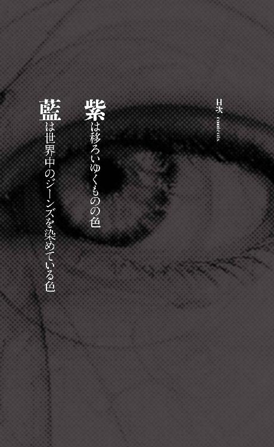
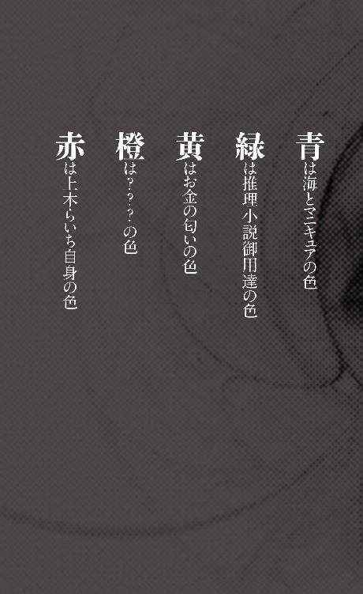

| 虹の歯ブラシ 上木らいち発散 (講談社ノベルス) | |
| 早坂吝 | |
| (2015) | |
本作品は、縦書き表示での閲覧を推奨いたします。横書き表示にした際には、表示が一部くずれる恐れがあります。
また、画面が小さい端末の場合、文字サイズの拡大等により稀に体裁に違和感が生じることがあります。その際は、通常の文字サイズにお戻しのうえお読みください。
虹の歯ブラシ
上木らいち発散
早坂 吝


目次デザイン 坂野公一（welle design）
ブックデザイン 熊谷博人＋釜津典之
上木らいちは高級マンションの七〇七号室に住む高校生だ。その洗面所には複数の歯ブラシが常備されている。虹の色が一色ずつ揃ったそれらは、らいち自身と、平日の決められた曜日に部屋を訪れる男たち用だ。らいちはそこで固定客相手の援助交際をしている。
今日は月曜日なので、紫の歯ブラシの村崎社長が客である。
日本有数の大企業であるＬ商事の代表取締役。五十九歳。
彼はいつもより長めのシャワーから上がると、トランクス一丁で鏡の前に立ち、念入りに歯を磨き始めた。
歳を取ると歯茎が下がり、歯と歯の間に隙間ができる。そこに歯垢が溜まって口臭の原因となる。これから行われることのためにも、しっかり磨かなければならない。
「ねー、しゃちょー、まだー？ 私、一人で始めちゃうよ？」
寝室の方から焦れたような声が聞こえてきた。
「うういう」
すぐ行くと答えたつもりが、歯ブラシを口に突っ込んでいるため、そんな発音になった。
ところが村崎はすぐには行かず、むしろ手の動きをより遅くした。
毎度毎度、飼い慣らされた犬のように尻尾を振ってじゃれついていくのもみっともない。たまには少しくらい待たせてもいいだろう。村崎はそうも考えた。つまり焦らしプレイである。
たっぷり時間を掛けて歯磨きを終えると、ようやく寝室に向かった。
寝室のドアをノックすると、不機嫌そうな声で入れと言うので、ドアを開けて入室した。
「待ちくたびれちゃった」
高級ホテルを思わせる落ち着いた色の照明の下、下着だけを身に付けた赤毛のらいちが、天蓋付きのダブルベッドに寝ていた。思わず飛び掛かりたい衝動に駆られたが、ぐっと我慢し、意地悪な声を作った。
「悪いが、もう少しだけ待ってもらおう。最近運動不足だから、いきなりやったら肉離れを起こすかもしれん」
そしておもむろに伸脚を始めた。
「もう！」
らいちは吹き出した。村崎もこれはひどい言い訳だと内心思いながら、くつくつと笑った。
そのまま大してやる気のない伸脚を続けていると、らいちが「私もやるー」と手を挙げ、ベッドの上で長座体前屈を始めた。長い脚が伸ばされ、しなやかな体が折り畳まれ、美しい胸が太腿に押し付けられた。
次いで開脚前屈。らいちが恥じらいもなく股を開くと、ショーツの生地が広がり、その奥に隠された秘所がわずかに透けるか透けないか──。
この瞬間、村崎は勃起した。
同時に、らいちの髪の色が赤から紫に変わった。
村崎は獣のような唸り声を上げると、らいちに飛び掛かった。結局、飼い犬の域を出ない。後はてんやわんやの大騒ぎ。
村崎がらいちに出会ったのは、今から三ヵ月前の九月のこと。
その日は朝夕送り迎えをしてくれる運転手が病欠で、会社帰りに駅まで歩かなければならなかった。
夕暮れのビジネス街は、疲れ切った顔で家路を急ぐ人々でごった返していた。
人ごみの中を歩くのは久しぶりだった。村崎はまるで自分が気まぐれで地上に降り立った神であるかのように感じた。こいつら有象無象とは別次元の存在なのだ。そういう自負があった。
村崎は出世の軌跡を脳内でなぞり、しばし悦に入る。
何も持っていないところから叩き上げですべてを手に入れてきた。今や押しも押されもせぬＬ商事の社長だ。来春からは経済団体の会長に就任することも内定している。
だが──。
その割に、ショーウィンドウに映る横顔がどことなく寂しげなのはなぜだろうか。
富、権力、名声。およそ人が欲しがりそうなものは持っている。それなのに、この言い知れぬ欠落感は何なのだ。これ以上何が足りないというのか。
仕事ばかりしているのがいけないのかもしれないと思い、釣り、ゴルフ、写真など昔の趣味に再度手を出してもみたが、どれも心の穴を埋めるには至らなかった。
一体何が欠けているのか。
答えは出ぬまま、行き交う人で溢れる駅前広場を歩いていると、突然若い女に話しかけられた。
「ねー、おじさん。私と遊ばない？」
村崎は女の姿をまじまじと見た。
キャバクラ嬢のように盛った茶髪と厚化粧が年齢不詳にさせているが、セーラー服を着ていることから、女子高生（まさか中学生？）と思われた。
援助交際か。舐められたものだ。
村崎は援助交際をするような女は元より、それを買う男が何より嫌いだった。自分の娘と同じくらいの年齢の女を抱ける心理が分からなかった。同期にも一人、趣味は「援助」だと豪語してはばからない者がいたが、やはり品性下劣な男だった。東南アジアの少女買春ツアーに参加し、現地で刺されて死んだ。
そいつと同列に扱われた気がした村崎は、口も利かずにその場を立ち去った。背後から舌打ちが聞こえてきた。
駅構内に入った。切符を買い、改札を抜け、薄暗いホームに上がる。人いきれに苛立ち、やはりタクシーにすればよかったと後悔しながら、電車を待った。
その間、ふと顔を上げて向かいのホームを見た。
そして上木らいちと出逢ったのだ。
まず目に飛び込んできたのは、新鮮な血液のように赤いウェーブロングの髪。
次に顔を見て、村崎は今の自分に何が足りないかを知った。
愛だ。
実は村崎は今までの人生で一度も本気の恋愛というものをしたことがない。妻とは見合い結婚だ。それも、いつまでも独身だと人格に問題があると思われ出世できないという噂を聞き、やむなく結婚したという始末。
女遊びも人並みにはしてきた。今現在も愛人がいる。だが彼女を抱いている時も、村崎は心のどこかで冷めていた。
そんな村崎が人生で初めて恋をした。それも、親子くらい歳の離れたらいちに。
村崎はらいちを食い入るように見つめた。
すると向こうも気付いたらしく、目が合った。
村崎は慌てて目を逸らそうとした。
ところが、らいちは何と微笑んだ。村崎に向かって微笑んだのだ。
鼓動がさらに速くなった。
次の瞬間、村崎は声を聞いたような気がした。らいちが向かいのホームから声を張り上げたのか？ いや、違う。らいちの口は動いていない。依然、微笑んでいるだけだ。
その声は村崎の脳内に直接響き渡ったのだ。まるでテレパシーのように。
（何のご用かしら）
答えなければと思った。だがどうやって？ 村崎は不思議とその方法に確信があった。強く念じることだ。そうすれば想いは必ず伝わるはずだ。
（私は......私は君のことが好きだ。どうやら一目惚れしてしまったようだ）
日頃の演説と違って、衒わない素直な言葉が出てきた。
らいちは頷いてみせると、やはり声を発さず言った。
（そう......嬉しいわ）
その時、電車が向かいのホームに滑り込んできて、二人の間を遮った。
村崎は慌てた。
（待ってくれ、行かないでくれ！ もっと話していたいんだ！）
階段を駆け下り、向かいのホームに続く階段を駆け上がった。贅沢な食生活で肥えた腹が邪魔をする。息も絶え絶えにホームに上がった時には、電車は行ってしまった後だった。
だが、らいちは残っていた。
「ど、どうして──」
喘ぎながら問いかけると、らいちは包み込むような笑顔でこう言った。
「だってあなた、待ってほしそうだったもの」
その言葉を聞いて、村崎の目から自然と涙が溢れ出てきた。辺りを憚らず抱き付いた。二人は百年来の恋人のように抱き合った。
村崎はらいちを行きつけの高級フランス料理店に連れていった。
そこで上木らいちという名前を聞いた。一晩五万円で援助交際をしているということも。
そのことに対して村崎は何ら不快感を抱かなかった。この芸術品を愛でるためには当然の対価であり、むしろ安過ぎるくらいだと思った。即決で購入した。らいちはありがとうと言った。
食事を終える頃には、らいちの髪はすっかり美しい紫色に染まっていた。
二人でホテルに行った。
らいちとのセックスはコペルニクス的転回だった。村崎はこの歳になって初めて本当のセックスを知った。何度も果敢にその奥深くに挑戦し、大量の愛を吐露した。らいちは嬌声を上げながら硬さと持久力を褒めた。村崎の自尊心は満たされた。
何度射精しただろうか。限界は突然訪れた。
紫の髪が赤に戻っていく......。
村崎はらいちに覆い被さると、繫がったまま眠りに落ちた。
翌朝目を覚ますと、らいちは消えていた。
村崎は跳ね起きると、トランクスも穿かずに室内を探し回った。浴室を覗いた。馬鹿みたいにクローゼットまで開けてみた。しかしらいちはどこにもいなかった。書き置きすらない。
行きずりの情交なんてこんなものだと思う一方で、らいちは決して黙って姿を消すような奴じゃないという確信めいた思いがあった。もう二度と会うことはないとしても、別れの挨拶ぐらいはしてくれるはずだと。
だが現実はこの通り。痕跡はベッドの上の残り香だけ。
──。
村崎はトランクスを穿くと、ベッドに腰掛けて携帯を触り始めた。着信があったわけではないが、妻にメールしなければならないと考えたからだ。何と言い訳したらいいだろうか。
現実に戻ったのではない。むしろ単純作業に没頭することで、現実から逃避しようとしたのである。らいちのことはメールを打ち終わってから考えよう。
村崎の意識はらいちから、妻の由香里へと移る。
由香里、か。
愛を込めてその名を呼んだことは一度もない。
双方三十歳間際の見合い婚だった。村崎にとっては世間体を保つための結婚。それは同期が次々と寿退職し、職場内で売れ残り扱いをされていた由香里にとっても同じだったようだ。
そんな夫婦でも長く暮らすうちに情が移ることもあるのかもしれないが、残念ながらそうはならなかった。村崎の仕事が忙しかったことや、両者ともプライドが高い性格であることが災いしたのだろう。
結婚してから二年後、娘が産まれた。愛情の結晶というよりも、結婚して何年も経つのに子供ができないのは何かあるのではないかと周囲に勘繰らせないための、言わば面子の結晶だった。そんな子供で夫婦仲が回復するわけがなく、かえって悪化した。
村崎が酔っ払って帰宅すると、由香里は酒を飲む暇があったら育児に協力しろと責め立てるようになった。うるさい、俺だって好きで飲んでるんじゃない、付き合いで飲んでるんだ、営業マンから酒を取り上げたら商売上がったりだ、誰が食わしてやってると思ってるんだ。そして罵り合いが始まる。物が飛ぶ。記憶の片隅で娘が泣いている......。
そんなすれ違いが続き、今では夫婦仲は真冬の牢獄より冷え切っている。
それでも離婚はしなかったし、これからもするつもりはない。娘を傷付けたくはないし、家庭崩壊は社会的地位を低下させる。「娘のため」と「世間体」、この二つのお題目が辛うじて夫婦を繫ぎ止めていた。しかし、そこに「夫の不倫」という刃を振り下ろせばどうなるか。
だから、今までの不倫は家族に気付かれないよう細心の注意を払ってきた。それは昨夜の出来事も同様だ。
それでメールの文面を考えていると──ドアが開く音がした。
反射的に顔を上げると、戸口にらいちが立っていた。
村崎は驚いて携帯を取り落とした。
どうして、と問うと、らいちは不思議そうな顔をした。
「いなくなったんじゃないのか」
「私はいなくならないよ。朝ごはんを買いに行ってただけ」
そう言って、コンビニの袋を持ち上げてみせる。
「お米とパン、どっちがいい？」
「......パン」
「じゃあ、私はこっち食べよ」
らいちはアンパンを村崎に渡し、自分はおにぎりを手にした。
村崎はアンパンの袋を開けた。コンビニのパンを開封した時特有の刺激臭が鼻を突いた。この臭いも随分久しぶりだった。
らいちの方を見ると、肘付きの椅子に座り、慎重な手付きでおにぎりの袋を開けている。嫌われるかもしれないという不安が脳裏を掠めたが、それでも一言言っておきたかった。
「買い物に行くなら書き置きを残していってくれればいいのに。心配したじゃないか」
「え、残していったよ。枕元に」
「なかったぞ」
「そんなはずは──あ、ベッドの下に落ちてる」
村崎がベッドの下を見ると、確かにメモ用紙が落ちていた。どうやら跳ね起きた時の布団の風圧で落ちたらしい。拾い上げて読むと、「朝ごはん買ってくるからちょっと待っててね。急いでたら帰ってもＯＫ」と書かれていた。
二人は笑い合った。
ささやかだが幸せな朝食を終えてホテルを出る時、村崎は勇気を振り絞って言った。
「また、会えないかな」
「奇遇だね。私もそう思ってたんだ」
社交辞令だとしても嬉しかった。
二人は携帯のメールアドレスを交換した。
家族にバレないよう気を付けながら何度か逢瀬を重ねるうちに、らいちが自分のマンションに案内してくれた。
芸能人が多数生息することで有名な繁華街に立地する超高層マンション。プールやテニスコートが付属しており、屋上にはヘリポートまである。ここに、らいちは一人で住んでいるという。パトロンがいるのは明らかだった。
らいちの部屋は七〇七号室。４ＬＤＫ。
そこで、らいちは村崎に「システム」の説明をした。
現在、らいちには村崎の他に何人かの固定客がいる。彼らは平日の決まった曜日に七〇七号室を訪れ、一晩五万円でらいちを買う。土日は定休日。さて、ついこの間、月曜に空きができたばかりだ。そこに村崎が入ってくれると有難いのだが。
「他の人と寝てごめんね。私にとっては、どのお客様のことも大切なの」
「気にしないさ」
そんなことは最初から覚悟の上で付き合っている。村崎はただらいちと一緒にいる時間を持てるだけで幸せなのだ。むしろ選ばれし者になれたことに喜びを感じたぐらいだ。
村崎は快諾した。
そして、紫の歯ブラシを授与された。
まるでＡＶのような殺人現場だ。
それが警視庁捜査一課殺人犯捜査第七係、藍川警部補の抱いた第一印象だった。
彼は他の刑事たちとともに、Ｌ商事本社ビル最上階三十階の社長秘書室にいた。
彼らは一様に圧倒されていた。初動捜査を行った所轄署・機動捜査隊からの報告で心構えはしていたつもりだったが、実際の現場はそれを遥かに上回る衝撃だった。初めてミステリーサークルを目撃した人物はきっとこんな気持ちだっただろう。
一体、誰が、何のために、こんなことを？
殺害されたのは一人しかいない社長秘書の式部京子、二十八歳。
彼女の遺体は何とも珍妙なことになっていた。
上半身は裸。下半身はグレーのタイトスカートに黒のストッキング、パンプス。首にはロープが巻き付けられている。他に致命傷は見当たらない。
ここまではそう珍しくない。問題は遺体の置かれている場所だ。
コピー機と机の上にあった。
すなわち──。
コピー機から蓋が取り外され、その正面に事務机が一台ぴったりと寄せられている。遺体は上半身がコピー機に、下半身が机に載る形でうつ伏せになっていた。コピー機より机の方が低いが、未開封のコピー用紙の包みを遺体の下に敷き詰めることで、両者の高さを均等にしている。
なお、取り外された蓋は別の事務机の上に置かれている。その側に、被害者のものと思われる上半身の服やブラジャーが脱ぎ散らかされている。
おかしなことはそれだけではなかった。
コピー機横のホワイトボードにＡ３のコピー用紙がマグネット留めされていた。横長の状態で縦に三枚、横に四枚の計十二枚。
それらは遺体のものと思われる女性の胸部のカラーコピーだった。
上は鎖骨、下は腹、左右は二の腕の途中まで。体が写っていない部分は真っ黒であり、まるで暗闇に女の柔肌がぼんやりと浮かんでいるかのようだ。蓋を開けてコピーしたからだろう。
藍川がＡＶを連想したのはこうした状況からだった。オフィスラブ物で、女優が乳房をコピーされながらバックから突かれるというシチュエーションがたまにあるが、今回の事件はそれに酷似している。推理小説で言うところの見立て殺人なのだろうか。
ただし体位は異なる。ＡＶ女優は立ちバックのまま胸だけコピー機に載せるが、この遺体は下半身も机の上に載せられている。一つには遺体が自力で姿勢を維持できないからだろう。だがもう一つ理由がありそうだ。
藍川はホワイトボードに近付いて、十二枚のコピー用紙を観察した。右下の紙に行くにつれ、乳房に紫の斑点が増えている。
これは死斑だろう。人間が死ぬと心臓が停止し、血液の循環も止まる。その後、遺体が動かされなければ、血液が重力によって遺体の低位部に集まり、皮膚に紫の痣＝死斑が浮かぶ。死斑は時間経過や体位変更で変化するので、死亡推定時刻や遺体が動かされたかどうかを判断する基準の一つになる。
具体的には、死斑は死後数十分で現れる。最初はまだらだが、時間が経つにつれ増大・合体していく。そして死後十二時間から十五時間程度で最強となり、それ以降は変化しない。最初のうちは遺体の体位を変えると、元の死斑は消え、新たな低位置に死斑が移動する。しかし七時間ほどすると、元の死斑は消えないまま、新たな低位置にも死斑が出現するようになる。また初期の死斑は血管内の鬱血であるため、指で圧迫すると簡単に消えるが、時間経過とともに血管外へ出て皮膚組織に浸透し始めるため、死後一日が経過した頃には容易に退色しなくなる。
十二枚のコピー用紙は、被害者の胸部が紫に侵食されていく様を克明に記録していた。一番左上の紙にはまったく死斑がない。その右隣の紙ではポツポツと現れ始めている。そこから右に行くにつれて死斑が成長していき、右端に到達すると次は一つ下の段の左端に飛ぶ。そして一番右下の紙では、写っている部位全体が紫に変色している。
単なるＡＶの見立てではない。死斑の推移を記録すること、それこそが犯人の主眼だろう。
だから死斑が確実に胸部に現れるよう、机とコピー用紙の包みを使ってまで遺体を水平に保った。ＡＶに忠実な立ちバックの体位では、脚部に死斑が集中してしまうと恐れたのかもしれない。
だがそもそも、なぜ犯人は死斑の推移を記録したかったのか。そこが分からない。
変質者のやることなど理解できなくて当然、と思考停止してしまってもいいものか。
どうも厄介な事件になりそうだ、と藍川は思った。
田手警部が藍川の隣、コピー機の前まで来た。
少し離れたところで、鑑識課の紺野警部補が作業をしていた。
「紺野さん」
田手は穏やかな声で紺野に話しかけた。被疑者に親身に接することで信頼を勝ち取り自白を引き出すのが得意な「仏の田手」は、階級が下の人間に対しても偉ぶらず丁寧な物腰である。
「もう遺体とコピー機の鑑識は終わりましたか」
「はい」
「じゃあ試しにコピーを取ってみても構いませんか」
「え、あ、はい」
紺野が答えると、田手は柔和な表情を崩さずスタートボタンを押した。蓋がないので、目に悪そうな緑の光が放射された。排紙口から紫一色に染まった胸部のカラーコピーが出てきた。
第七係紅一点の小松凪（ここまでが苗字）巡査部長が一瞬目を逸らしたのは、眩しさのせいばかりではないだろう。
遺体に対して犯人と同じことを行ったわけだ。誰もやりたくなかったが、しかし誰かがやらないといけないことだった。ホワイトボードに掲示されているのは本当に被害者のカラーコピーなのか。別人のものだったり、ＣＧなどで精巧に作った偽物だったりしないか。そういったことを確認する必要があった。
田手は今取ったコピーと、ホワイトボードの右下のコピーを比較検討した。死斑はこれ以上変化しないので、基本的には同じ画像となるはずだ。
彼は納得したように頷くと、藍川に聞いてきた。
「私にはほとんど同じに見えるが、藍川さんはどうですか」
「俺も同じに見えます」
「どうやら遺体をコピーしたものと見て間違いないようですね。むごいことをする」
しばらく瞑目してから、
「紺野さん、今大丈夫ですか」
と呼びかけた。
やってきた彼に、田手は聞いた。
「死亡推定時刻は分かりますか」
「解剖してみないと詳しいことは言えませんが、今のところ、個人的な見解としては、昨日の午後三時から五時までの間ではないかと見ています」
紺野は慎重派らしい物言いをした。
田手は次の質問をした。
「では、ホワイトボードのコピーのそれぞれが、いつ頃取られたものか分かりますか」
紺野は死斑に関する簡単な講義をしてから、
「死斑がまったく現れていない最初のコピーは、殺害後三十分以内。その後は一時間強に一枚のペース。最後のコピーは現在の状態とほとんど変わらないため、死後十二時間から十五時間が経過して死斑が固定された後に行われたと思われます」
「その間、犯人が遺体を動かしたということは考えられますか」
「この位置に遺体をセットしてから最後のコピーまでは、動かしていないはずです。それ以降は動かしても死斑が変化しないため、何とも言えません」
「分かりました。他に何か気付いたことはありますか」
「はい、こんな物がコピー機の下に入り込む形で落ちていました」
紺野は証拠品を入れるのに使う小さいビニル袋を取り出した。目を凝らすと一本の毛が入っていた。黒く、縮れている。
「これは......陰毛？ 犯人のか？」
聞きながら、藍川の脳裏には嫌な光景が浮かんでいた。真夜中の秘書室。突如、闇に浮かぶ緑の光。犯人がコピー機のボタンを押したのだ。そしてもう一方の手では一心不乱にペニスをしごいている......。
「犯人のものかどうかはまだ分かりません。それに陰毛とも限りません。脇毛も縮れています」
紺野は真顔で答えた。
「あるいは癖毛かも」
藍川はちょっとふざけてみたが、紺野はニコリともせずに、
「その可能性もあります」
その真面目っぷりが逆に面白い。期待通りの反応に藍川は満足した。
「落ちていた毛はそれ一本だけなのですか。特別報告してくれたということは」
田手が聞くと、紺野は答えた。
「いえ、そういうわけではありません。この部屋からは他にも何本か毛が発見されています。しかし、そのどれもが被害者の頭髪と同じ茶色いストレートです。コピー機の下から発見された毛だけが黒く縮れているのです。なので報告いたしました」
藍川は遺体の頭髪を見た。派手過ぎない茶色のボブカット。普通に仕事をしていても床に髪の毛が落ちることはあるが、陰毛や脇毛が落ちることはあまりないだろう。しかし念のため確認する必要がある。
コピー機を抱き込む形で垂れ下がっている遺体の腕を持ち上げ、脇の下を見た。だが最近処理したのか、一、二ミリの黒い毛がぽつぽつと生えているだけだった。
次に、心の中で謝罪しながら下半身の着衣を脱がし、陰毛を確認した。これは普通に黒く縮れた毛だった。
問題の毛は、被害者の陰毛である可能性はある。だがその場合、どうしてコピー機の下に滑り込むことになったのか。この部屋で下を脱いだことがあるのだろうか。
藍川が考えていると、彼の一連の行動を見て思い出したのか、紺野が補足した。
「あ、ちなみに被害者に性行為の痕跡はありませんでした」
「これだけ性的な現場であるにもかかわらず」
「ええ、そうです。それから他に外傷がないため、死因はほぼ間違いなく絞殺と思われますが、失禁はしなかったようです。下着が汚れていません」
きれいに死ねたのがせめてもの救いか──いや、どんなにきれいな死に方でも殺人事件の被害者に救いなどない。
藍川は気を引き締めると、脱がした衣類を丁寧に穿かせ直した。
田手が許可を出し、鑑識課員たちが遺体を搬出した。
遮る物がなくなったので、藍川は思う存分コピー機を調べることにした。
用紙を載せるガラス部分に遺体の位置を示す白いテープが貼られているのが、不思議な感覚だった。
蓋は道具を使わず、手でネジを回すことで着脱可能な造りになっている。
タッチパネルを操作した。コピー以外にも、プリンター、スキャナー、ファックスも付いている。しかしどうやら肝心のタイマー機能はなさそうだ。もちろん後でメーカーに問い合わせるが、基本的にコピーにタイマー機能は要らないので、多分ないだろう。
またスタートボタンも固く、何らかの機械仕掛けによって押すのは難しそうだ。
したがって犯人がおっぱいコピーをするためには、この場にいて直接ボタンを押す必要がある。
すなわち犯人は被害者を殺害してから死斑が固定される十二時間から十五時間もの間、ずっと現場に残っていた、あるいは断続的に出入りしていたということになる。
そんなリスクを負ってまで、おっぱいコピーをしたかったのだ。
変質者か？ それとも合理的な理由があるのか？
秘書室には藍川たちが入ってきたドア以外に、もう一つドアがあった。位置関係からして社長室に繫がっているのだろう。そう思って開けると、やはりそうだった。
部屋の真ん中にはソファに囲まれる形で、大きなガラステーブルが置かれていた。その向こうには立派なマホガニーの執務机と、壁一面の窓。この部屋でも鑑識課員が精を出していたが、部屋の主は不在だった。
田手が秘書室から顔を覗かせて言った。
「第一発見者の村崎社長は向かいの会議室で待機しているそうです。どなたか一人を書記役にして事情聴取をしてくれませんか」
「分かりました」
藍川は秘書室に戻り、書記役を探した。近くにいた若手の刑事が立候補しかけたが、藍川は離れたところにいた小松凪を指名した。
藍川と小松凪は、初動捜査時に村崎の事情聴取をした所轄署の刑事から引き継ぎを受けた。
彼によると、村崎はやや気難しい人間である。だから必要最低限のことしか聞かず、アリバイなど立ち入った話はしなかったという。そのスタンスは正しい。捜査一課にとっては、関係者と揉めたまま引き継がれるのが一番厄介だからだ。
藍川は適切な対応に礼を言うと、小松凪を連れて秘書室を後にした。
廊下に出た二人は斜向かいのドアをノックした。
返事がない。
もう一度ノックしてみた。
するとややあって、入りたまえ、という偉そうな声。
ドアを開けて入室すると、広い会議室の中、入り口付近の椅子に一人の男が座っていた。でっぷり太った壮年男性で、髪型は白髪のオールバック。
男は藍川たちの方を一瞥もせず、熱心に資料を読み込んでいる。こんな時にも仕事か。そういえば、村崎はやり手の経営者に取材するドキュメンタリー番組に出演していた。
だから顔は知っていたが、念のため確認した。
「お仕事中すみません。社長の村崎さんですか」
「そうだが」
村崎はまだ藍川を見ない。尊大な奴だと思ったが、あくまで丁重な態度で続けた。
「警視庁捜査一課の藍川と申します。少々お話を伺いたいのですが、今お時間よろしいですか」
「お話だと？」
そこで初めて村崎は椅子を回転させ、藍川たちを見た。脂肪の中に埋まった目が、まるで虫けらでも見るかのように細められた。
「お話はさっき来た連中にした。貴様ら公僕は横の連絡も取れてないのか？」
いきなり「貴様ら公僕」と来た。これは手こずりそうだ。どうやら「やや気難しい」というのは相当控え目な表現だったらしい。
「引き継ぎは受けましたが、又聞きの情報では正確な捜査ができません。それに、もっと詳しく聞かせていただきたいこともあります」
「それはそっちの都合だよ。こっちにはこっちの都合がある。私は今忙しい。秘書に死なれて業務が滅茶苦茶だ」
ではいつならお時間できますか、と聞くか？ いや、いつでも忙しいと返されるのがオチだろう。
藍川は感情に訴えてみる。
「その式部さんを殺害した犯人を捕まえるためにも、ご協力いただきたいのです」
「確かに痛ましい事件だ。だがな、式部は所詮一従業員に過ぎん。一つの歯車が壊れた原因を調べるために、機械全体を止めたままにしておけるかね」
藍川は啞然とした。何という言い草。これが本当に大企業の社長の発言か。いや、そういえば政治家連中も定期的にこの手の失言をしている。上に立つ人間が人格者とは限らないということだ。
藍川は何か言おうと口を開いたが、それより早く小松凪が半ば叫ぶように言った。
「は、歯車って何ですかその言い方は。自分の秘書が亡くなったのに、仕事のことしか考えられないんですか」
気持ちは分かるが、はっきり言って余計な口出しだった。
村崎はこれ見よがしに溜め息をつくと、薄気味悪い笑みを浮かべた。
「あのね、お嬢ちゃん、歳はいくつ？」
まるで子供に語りかけるようなこの言い方には、藍川もカチンと来た。言われた本人は尚更だろう。小松凪は上ずった声で答えた。
「に、二十六歳です」
「そう、二十六。それなら、殺人犯を捕まえるのがどっちの仕事か分かる？ 人が亡くなった時に仕事の都合を押し付けてきてるのはどっち？」
小松凪は言い返せず俯いた。
村崎は尊大な口調に戻り、今度は藍川に矛先を向けてきた。
「君は？」
「......と言いますと」
「鈍いな、年齢だよ」
「ああ、三十八です」
「やはり若いな。君たちは殺人事件を捜査するにはまったく若過ぎるよ。責任者を呼んできたまえ。話はそれからだ」
責任者ね......。
藍川は脳内で「責任者」候補を列挙した。
捜査本部の本部長は警視庁刑事部長（警視監）。副本部長は警視庁捜査一課長（警視正）と、所轄署長（警視正）。しかしこの三人は実際の捜査にはほとんど参加しないお飾りである。
捜査本部の実質的なトップは、警視庁捜査一課の管理官（警視）と言える。
今日ここに来ている中で最も階級が高いのは田手警部である。しかし田手とて、基本的には指揮官兼連絡係として捜査本部に常駐する。今日は事件発生直後だから、現場を直に目に焼き付けるために臨場したに過ぎない。
だから現場のリーダーは警部補たる藍川なのだ。関係者への事情聴取は彼の職務だ。
田手に交代すること自体は簡単だが、今回のケースでは得策ではない。村崎は警察を舐め、ますます非協力的になるだろう。田手に対しても「さらに上を出せ」などと言い出したらどうする。
藍川が村崎と直接対決して屈服させるしかないのだ。
それが刑事の面子というものだ。
藍川は一歩踏み出すと、村崎の目を真っ直ぐ見据え、経験的に培った笑みを浮かべた。互いの立場をはっきりさせ、言うことを聞かせるための、刑事の営業スマイル。
「私は主任で、現場の責任者です。私がお話を伺います」
余計なことは言わず、主張だけをシンプルに伝えた。
村崎はギロリと藍川を睨んだ。さすが大物だけあって、一般人を威圧するには充分な眼光だったが、数々の犯罪者と渡り合ってきた藍川には何でもなかった。
村崎は、おそらく今度は心から溜め息をつくと、吐き捨てるように言った。
「五分だ」
押し問答している時間の方が勿体ないと判断したのだろう。
「ありがとうございます」
藍川はすかさず着席した。机の角を挟んで村崎と向かい合う席だ。
小松凪も、ててて......とやってくる。
と、ここで村崎が妙なことを言い出した。
「だが一つ条件がある。そっちのお嬢ちゃんは席を外してくれたまえ。じゃないと何も話さん」
小松凪はひどく傷付いたような顔をした。当然だ。
しかし藍川は理由を聞かず、分かりましたと言った。
「小松凪、そのように。代わりは呼ばなくていいから」
「はい」
小松凪はしょんぼりと会議室を出ていった。その後ろ姿を見ているうちに、藍川の中に冷たい闘志が湧き上がってきた。
ドアが元気なく閉まると、村崎は咳払いをしたが、小松凪を追い出したことについての説明はなかった。もっとも、藍川もそこに拘泥する気はない。一応机の下で腕時計を見てから、質問を始めた。
「まず村崎さんと式部さんの出会いから伺います。式部さんが村崎さんの秘書になったのはいつのことですか」
「まるで新婚の芸能人に馴れ初めを聞くような口振りだな」
村崎はせせら笑った。藍川も合わせて笑った。
「今年の六月だ。前の秘書が寿退職したから外部募集した」
ということは半年の付き合いになるわけだ。
「式部さんを選んだのは村崎さんご自身ですか」
「そうだ。人事部が応募者を数人に絞り込んだ後、私が直接面接をして式部を採用した」
「式部さんに決めた理由は何ですか」
「理由？ そんなもん口じゃ説明できんよ。彼女となら気持ち良く仕事ができる。そう感じたんだ。人の縁なんてそんなもんだろうが、え？」
割と饒舌だ。根は語り好きなのだろう。
「実際に仕事をさせてみてどうでしたか」
「期待以上だった。細かいところによく気が付く女で、何度か救われた」
「式部さんがしていたのは具体的にどのような仕事ですか」
「スケジュール管理、電話応対、書類整理。『秘書』という言葉が持つパブリックイメージそのものの仕事だよ」
「このフロアには社長室と秘書室、会議室しかないようですが、このフロアで仕事をしているのは村崎さんと式部さんのお二人だけですか」
「ああ、そうだ。──おい、これはさっきの連中にも言ったぞ！」
「それは失礼しました。失礼ついでに聞きますが、式部さんと男女の仲になったことは？」
いきなり核心に切り込んでみた。すると村崎は──怒らなかった。得意の嘲笑もせず、能面のような無表情でこう答えた。
「それも『秘書』のパブリックイメージだな。答えはもちろんノーだ」
話している最中の表情を観察したが、噓をついているかどうかは分からなかった。
だが、違和感は確実にある。
村崎の性格的に、こんな質問をされたら怒るはずだ。しかし怒らなかった。まるで自制しているかのように。
関係はあったのだ。藍川はそう踏んだ。
「答えづらいことを答えていただきありがとうございます。次の質問です。式部さんは勤務時間中ずっとこのフロアにいるのですか」
「そんなこともない。必要があれば一階下の役員室や、総務部に行ったりもする」
「式部さんが親しくしていた社員は誰でしたか」
「清原といったか。総務部の女だ。一緒に昼飯を食いに行ったりしていたようだ」
「総務部の、清原さんですね」
藍川は復唱しながらメモを取った。
「では反対に、式部さんに恨みを持っている人物に心当たりはありませんか」
「知らん。プライベートには立ち入らないようにしていたからな」
「そうですか。ところで昨日の話なのですが」
死亡推定時刻は昨日の午後三時から五時まで、という情報を思い出しながら言った。
「村崎さんは三時半に退社されたそうですね。一般社員の──式部さんも──定時は五時半だそうですが、村崎さんはいつもこんなに早いのですか」
「私は代表取締役だ。自分の勤務時間は自分で決めることができる。だが普段は定時より早く帰ることはない。トップが怠けていては部下も付いてこんからな。だが、毎週月曜日だけは三時半に帰らせてもらってる。それというのも──」
村崎は鞄のポケットから小さなペットボトルを出した。『ボルボックス』というミネラルウォーターだ。わずかに残っていたそれを飲み干してしまうと、決意したように言った。
「実は三ヵ月前から愛人がいてな。毎週月曜日の仕事帰りに愛人のマンションに寄ることにしている。だが定時退社してから行くと、帰宅するのが遅くなり、家族に不倫がバレかねない。そこで月曜だけは早引けしているのだ」
そこで口角を歪め、
「こんな生臭い話、若い女の子の前ではしたくなかった。お嬢ちゃんを退席させたのはそのためだ」
「そうだったんですね」
しかしそれにしても、いいご身分だ。藍川にも早引けして会いに行きたい相手がいる。
「愛人のことを式部さんや他の社員の方々は知っていましたか」
「君は馬鹿か。知るわけないだろう。彼らには家庭の事情だと説明してるよ。だからこの件についてはくれぐれも内密に願いたいんだがね」
「その点についてはご安心ください。ところで村崎さんが三時半に退社した時、式部さんに何か変わったところはありませんでしたか」
「変わったところだと？ 帰る時に秘書室を覗いて挨拶したが、特に何も感じなかったな」
「誰かと待ち合わせをしているようだったり、何かに怯えているようだったりは？」
「そんな詳しくは分からんよ！ ほんの二言三言しゃべっただけなんだから」
「分かりました」
藍川は再び腕時計を盗み見た。ちょうど五分を過ぎたところだったが、何も言われないのをいいことに続ける。
「それではその後の村崎さんの行動についてお聞きします。これはあくまで形式的なものであり......」
村崎は片手を挙げ、藍川の言葉を遮った。
「分かった分かった。ご託はいいからさっさと聞けアリバイを」
村崎が申告した昨日から今日にかけての行動は、次の通りだった。
十五時半頃、退社。
徒歩で愛人のマンションへ。（毎日の出退勤は社の専属運転手に送迎してもらっているが、月曜の帰りだけは休ませている）
十五時四十分頃、マンションに着く。
十七時半頃、マンションを出る。
タクシーで自宅へ。（この経路はいつもタクシー。昨日乗ったタクシーの会社と運転手名は思い出せない）
十八時頃、自宅に着く。
直後、妻・娘と会話。
日付が変わって今日、七時四十五分頃、自宅を出る。
専属運転手の車で、八時十五分頃、出社。
九時前、遺体発見。
出社から遺体発見までに間があることについて、村崎はこう釈明した。
「いつもなら式部の方から朝の挨拶をしに来るが、今朝はなかなか来ないので不思議には思っていた。しかし私も急ぎの仕事を抱えていたし、向こうから挨拶しに来るべきだと思ったので、いちいち秘書室のドアを開けて確認することはしなかった。仕事が一段落したら、さすがにおかしいと思い始めて、秘書室のドアを開けた。そしたら、あんなことになっていたんだ」
出社してから数十分もの間、一度も秘書の様子を見に行かないのは不自然ではないかとも思うが、一応話の筋は通っている。
「辛い質問かもしれませんが、発見時の現場の様子を詳しく話してくれませんか」
村崎の説明は、先程藍川が確認した現場の様子と完全に一致した。
「犯人がおっぱいコ──あんなことをした理由について、何か心当たりはありますか」
「あるわけないだろう。変質者の考えなど見当も付かんよ」
「遺体を発見した村崎さんは次にどうしましたか」
「下の階に降りて役員たちを呼んできた。そのうちの一人が遺体の脈を取って死亡を確認した。それから警察に電話した」
一一〇番を集約する警視庁通信指令センターの記録によると、通報は九時七分に為されている。
「現場の状況から見て、式部さんは秘書室で殺害されたものと思われます。村崎さんと式部さん以外の方がこのフロアに上がってくることは可能ですか」
「一般社員がこのフロアまで来ることは滅多にないが、その気になれば充分可能だ。途中に認証を必要とする扉などはない」
「それと、遺体の胸部のコピーは夜間行われた可能性があります。このビルは夜も開いているのでしょうか」
「開いているが、正面玄関は閉まっているから、通用口で守衛に身分証を見せてから出入りすることになる」
「夜もこのフロアに上がってくることはできますか」
「できる。真下の階の役員たちは皆定時で帰るので、昼間以上に侵入は容易だろう」
「そうですか。いや、いろいろ聞かせていただき誠にありがとうございます」
これまでの話を総合すると、村崎にはアリバイが成立する。
ただしアリバイと言っても、死亡推定時刻に対するアリバイではない。退社直前に殺害すれば死亡推定時刻の範囲内である。
おっぱいコピーに対するアリバイだ。死斑の変化を最後まで記録するためには、殺害後、一時間強に一回、計十二回コピー機のボタンを押す必要がある。昨日の十五時半に殺害したとしても、コピーをすべて終えるには今日の明け方まで掛かる。
愛人と家族が両方共犯者でない限り──藍川の短くない刑事人生の中でそんなことは一度たりともなかった──村崎にコピーは不可能。途中までは有力な容疑者だと思っていたが、どうやらシロのようだ。
残念。このふんぞり返った男に手錠を掛けてやったらさぞ爽快だったろうに。
「念のため、ご家族や運転手さんには確認させていただきます。愛人の方にもお話を伺いたいので、氏名と住所を教えていただけますか」
「好きにするがいい。愛人は──」
次の瞬間、村崎が口にした名前を聞いて、藍川は飛び上がりそうになるほど驚いた。
「上木らいちという」
ふらふらと会議室を出ると、同じ第七係のもう一人の警部補、花田が声を掛けてきた。
「おい、何があった」
あることで頭が一杯な藍川は、意図が不明瞭な問いにやや苛立ちながら聞き返した。
「何とは？」
「凪ちゃんだよ。お前と一緒に会議室に入ったと思ってたら、すぐに一人で出てきたじゃないか。今にも泣き出しそうな顔だったぞ」
花田は小松凪に気があるらしく、凪ちゃんなどという独自の呼び方をして、積極的なアプローチを繰り返している。小松凪の方は若干引いているようだったが。
「ああ......後で謝っとくよ」
花田はまだ何か言いたげだったが、藍川は取り合わず秘書室に入った。
小松凪は部屋の隅で所在なげにしていた。気にはなったが、今は報告が先だ。
藍川は第七係の面々を田手の周りに集め、村崎から聞き出した内容を周知した。
「藍川さん、お疲れ様でした。小松凪さんも」
田手は二人をねぎらった。
小松凪は俯くように頷いた。
「立て続けにいろいろなことをお願いしてすみませんが、藍川さんと小松凪さんは、村崎社長の妻子、愛人、専属運転手に当たり、アリバイの裏を取ってください」
ものすごく断りたかった。
なぜなら藍川も毎週火曜日らいちの部屋へ通う常連客の一人だからである。警察官が法律で禁止されている売買春をしているなどと知れたら身の破滅だ。
しかも爆弾は一つではない。二人の間にはもう一つ秘密があるのだ。
それらのことは絶対に誰にも知られてはならない。二人組での捜査中に、らいちと顔を合わせるのは極めて危険である。だから、らいちに事情聴取を行うのは他の人間であってほしかった。
しかし不運にも、田手は藍川を指名した。上司の命令は絶対だし、断る口実もない。
「分かりました」
藍川はうなだれるように頷いた。
田手は他の刑事たちにも仕事を割り振った。
現場が現場なので、必然的に社内での聞き込みが中心になる。リーダーは花田。
一方で、外部犯の線もなくはない。例えば、被害者をつけ狙うストーカーが侵入したり、逆に被害者が顔見知りを招き入れたりしたケースだ。そこでビル周りの聞き込みや、家族知人への聴取にも、最低限の人員を割くことになった。
なお、家族について言えば、式部は一人暮らしであり、昨夜帰宅しなくても心配する者はいなかった。
藍川と小松凪はエレベーターで地下駐車場に下り、覆面パトカーに乗り込んだ。運転するのは小松凪だ。
ドアを閉めた瞬間、
「あのっ」
「えーと」
二人の言葉がぶつかった。譲り合いの結果、藍川からしゃべることになった。
「あー、何だ。さっきは悪かったな」
藍川は頭を搔きながら言った。
「えっ」
小松凪は目を丸くした。
「いえ、謝らなきゃいけないのは私の方です。私が余計な口出しをしたばかりに、村崎社長を怒らせてしまって」
「気にするな。向こうも悪い。村崎社長がお前を追い出したのは、若い女の前で愛人の話をしたくなかったからだ。本人がそう言っていた」
「そうだったんですか」
「最初から高圧的だったのも、愛人の話自体したくなかったからなのかもしれないな。愛人とのアリバイがないと一気に窮地に陥るから、最終的には言わざるを得なかったんだろうが」
「かもしれませんね」
小松凪は言ったが、らいちの売春行為や年齢を知らないので、藍川の言葉を真の意味で理解したわけではない。
日本では、十八歳未満の児童を買春した者が罰せられる以外、個人的な売買春に罰則はない。だから、村崎がらいちを買っても法的に処罰されるわけではない。
だが違法ではある──と藍川は思う。
さらに、人々が眉を顰めるほどの年齢差。
村崎ほどの有名人なら大きなスキャンダルとなり、社長退任などの社会的制裁は免れないだろう。
もし藍川が村崎の立場だったら、らいちのことを言えるかどうか自信がない。藍川と彼女の年齢差と、村崎とらいちの年齢差は、ちょうど二倍も違う。村崎としても苦渋の決断だっただろう。
そんなことを考えていると、小松凪がポツリと言った。
「......でも何かありがとうございます」
「ん？」
「いろいろ気を遣ってくださって。離れたところにいた私をわざわざ書記役に指名したのも、私が青い顔をしているのに気付いて、現場から連れ出そうとしてくださったんでしょう」
それだけではなく、女性を連れていけば場が和み、事情聴取が円滑に進むだろうという打算もあった。逆効果だったわけだが。
そのことには触れず、小松凪の言葉に同意しておいた。
「まあ、あの現場は女にはキツいと思ってな」
惨殺死体や腐乱死体とはまた違う、女性の尊厳が踏みにじられたような感じ。
「だからいい気分転換になるかと思ったんだが、逆に嫌な思いをさせちまったな」
「いえ、もう元気になりました」
小松凪は車を発進させた。
村崎が帰宅する前に、妻子に話を聞いておきたいので、まず村崎宅に向かった。
移動中、藍川は携帯を出し、らいちにメールを打った。事件の概要を伝え、後で訪ねるが初対面のように振る舞ってほしいという文面。
誰にメールしているのか、などと小松凪は聞いてこない。
送信し終えると、藍川は小松凪に尋ねた。
「おっぱい──じゃなかった、犯人が遺体の胸部をコピーしたのはなぜだと思う」
小松凪は前を向いたまま、
「まだあんまり考えがまとまってないんですけど、聞いてくれますか」
「ああ」
「......アリバイトリックじゃないかと思うんですよね」
「アリバイトリック？」
「今のところ、現場にいないとコピーができないと思われている。でも離れた場所にいてもコピーができる手段があるとすれば......」
「待て、それはつまり村崎社長が犯人だと言ってるのか」
「いえ、そこまでは......」
小松凪の声が小さくなる。先程やり込められたことに対する私情の推理だと思われたくないのだろう。
「まあ、確かにアリバイがある奴なら誰でも犯人たり得るな」
とフォローしてから、
「だが、具体的にどんな手段か目星は付いているのか」
「すみません、まだです。でもきっとそんなに難しい方法じゃないと思うんです。蓋を開けてみれば、なーんだっていうような......」
そう言う小松凪の目にはある種の確信めいた光が宿っていた。
藍川は考え込んだ。確かにそんな方法があるのなら、村崎のアリバイは崩れ、一気に有力容疑者に躍り出る。だが、肝心のその方法が分からない今は保留にするしかない。
次の質問をした。
「あー、あくまで一般的な話として聞いてほしいんだが、女性っていうのは夏以外も脇毛を処理するのかな」
「えっ」
小松凪は一瞬びっくりした顔をしたが、すぐに事件の話だと気付いたらしく答えた。
「人それぞれですね。どうせ見えないからとサボる人もいますが、彼氏がいる人なんかはまめに処理しているようです。永久脱毛というのもあります」
「なるほどね」
式部には男がいたのだろうか。いたとすると、それはやはり村崎なのだろうか。
思い巡らせていると、藍川の携帯が震えた。らいちからの返信だった。
──おっけー、演技なら任せといて。村崎さんからもさっき、刑事が行くかもしれないからすまないが証言頼むっていうメールが来たよ。──
どいつもこいつも手回しがいいことで、と自嘲しながら携帯をしまった。
やがてカーナビが目的地到着を告げた。
村崎の家は高級住宅街に立地する大豪邸だった。
妻子ともに在宅していた。妻はどこか陰のある女性。娘はまさしく箱入り娘という感じで、大学卒業後も定職に就かず、ぶらぶらしているらしい。
事件のことを話すと驚いていた。夫は無事なのか、と妻は言ったが、まるで社交辞令のように聞こえた。
藍川が妻、小松凪が娘から別々に事情聴取したが、二人の証言に食い違いはなかった。昨夜、村崎は十八時頃に帰宅。そこから今朝まで外出していない。
藍川は一瞬不倫のことをバラしてやろうかと思ったが、もちろん自重した。
次はらいちのマンションに向かった。
到着。小松凪は路肩に駐車した。
二人は車から下りて天を仰いだ。ほとんど暮れかかった冬の夕空を背に、高級感のあるライトアップがされた超高層マンションが二人を見下ろしていた。
小松凪が白い息を吐きながら声を弾ませる。
「わー、すごーい。家賃はやっぱり村崎社長が出してるんでしょうか」
「さあな」
多分違う。村崎はらいちと出会ったのは三ヵ月前だと言っていた。それ以前から、藍川はこのマンションに通っている。
「私も愛人に転職しようかな」
「相手がいるのか？」
「ふふっ、秘密です」
二人は自動ドアを開け、建物の中に入った。
エントランスは一流ホテルのロビーのようになっていた。藍川は天井の一角に監視カメラが設置されていることを知っていた。あれがダミーでなければ、村崎が昨日何時にここを訪れたのかが分かる。
エントランスと居住区の間に、オートロックの自動ドアがあった。その奥に立ち入るためには鍵を使うか、インターホンで住人を呼び出して開けてもらう必要がある。
「さーて、愛人さんは開けてくれるかな」
藍川はそう言いながら、らいちの部屋番号をプッシュした。
七、〇、七。
しばらくコール音が鳴った後、「はい」という声がした。
藍川は警察手帳を開いて見せ、
「初めまして。私、警視庁の藍川と申します。村崎さんのことで少々お伺いしたいことがあるのですが、今お時間よろしいですか」
「村崎さんから聞いてます。今ドアを開けるので、すみませんが上がってきてください」
ジー、という機械音がして、ドアの鍵が外れた。
藍川はインターホンに向かって礼を言うと、ドアを開けて先に進んだ。
エレベーターホールにはエレベーターが三基あった。マンションなのに三基も！
そのうちの一基が一階に停まっていたので、二人は乗り込んだ。
七階に着いた。
エレベーターを出ると、藍川は右に進んだ。
七〇五......七〇六......。
ドアとドアの間隔がとても広い。それは一つ一つの部屋がとても広いということを意味する。
七〇七号室の前に来た。
チャイムを鳴らすと、ややあってドアが開き、ファッショナブルな部屋着のらいちが現れた。小松凪はらいちの年齢に驚いたようだった。藍川も驚くふりをしてから、再び警察手帳を開いた。
「警視庁の藍川です。お忙しいところお時間を取らせてしまい申し訳ございません」
「さっき村崎さんからメールがありました。秘書の方が殺されたんですって？ びっくり。それで刑事さんたちは、村崎さんの昨日のアリバイについてお尋ねになりたいんですよね」
らいちは歳に似合わずハキハキ話す。
「話が早くて助かります。それでは早速ですが、昨日村崎さんは何時頃に来られましたか」
「いつも通り、三時四十分頃です」
「三時四十分頃、ですね。その時間に間違いありませんか」
「はい。毎週同じ時間に来る人を、今か今かと時計を見ながら待っていたわけですから」
「なるほど、よく分かりました。では帰った時間は覚えてますか」
「それもいつも通り、五時半頃です」
いずれも村崎の証言と一致する。
さて──。
早々と目的を果たしてしまった。らいちが噓をつくはずはない。村崎がアリバイトリックを使ったかどうかはともかく、三時四十分頃から五時半頃までらいちと一緒にいたことは間違いないのだ。
これ以上話してボロが出る前に、さっさと退散しよう。
「ご協力ありがとうございました。またお話を聞かせていただくことがあるかもしれません」
「構いませんわ」
事情聴取に費やした時間はわずか一分。藍川はらいちと別れの挨拶を交わすと、足早に歩き出した。小松凪が慌てて付いてくる。
エレベーターに乗ると、小松凪がすかさず突っ込んできた。
「あれだけでいいんですか!?」
疚しさがある藍川は目を見ずに答える。
「仕方ないだろ。あれだけ堂々と答えられたら、こっちもはいそうですかとしか言えないじゃないか。いや、もちろん噓かもしれないよ。噓かもしれないけど、だからといってただ噓を指摘すれば済む話でもなくて......」
だんだん声が小さくなり、後半はほとんど口パクの領域だった。咎めるような視線が横顔に突き刺さる。
一階に着き、エントランスに出た。
藍川は話題を変えようと天井の一角を指差した。
「そ、そんなことより、あの監視カメラを見ろよ。あれに村崎社長が映ってるかもしれないぞ。今すぐ管理人室に行こう」
二人は管理人室に行き、監視カメラの映像が保存されたフラッシュメモリを入手した。
その後、専属運転手と喫茶店で落ち合い、村崎の証言に相違ないことを確認した。
与えられた任務を完了し、捜査本部が設置されている所轄署に戻った時には、とっぷりと暗くなっていた。
七時の捜査会議まで夕食を食べる余裕があった。
休憩室として用意された大部屋に入ると、所轄署が弁当を用意してくれていた。
他の捜査員はあらかた食べ終わっている。食べることができる時に食べておかなければならない刑事の世界では、全員揃うまで待つという文化はない。
「先に食ってろ」
藍川は小松凪に言うと、田手のところへ行き、簡単な報告を済ませた。それから空いている席に座り、弁当箱の蓋を留めている輪ゴムをいそいそと外した。腹の虫が歓喜の声を上げる。
その時、突然、魚戸管理官が部屋に入ってきた。捜査員たちは一斉に顔を上げた。田手が慌てて立ち上がり、魚戸を出迎えた。
「管理官、いらしていたのですか」
「今来たのだ。一課長は他の事件の対応で来られない」
魚戸は室内を見回すと、
「どうやら全員揃っているようだな。よし、会議は六時四十五分からに変更だ。直ちに準備しろ」
と横暴なことを言い出した。
藍川は腕時計を見た。今から五分後である。
管理官は複数の事件を掛け持ちするため、少しでも時間を大切にしたいのは理解できる。しかし藍川にとっては、あまりにも間が悪い。
小松凪が慌てて玉子焼きを口に放り込むのを尻目に、泣く泣く講堂に向かった。
「Ｌ商事本社ビルにおける社長秘書殺人事件捜査本部」と墨書された紙が張り出された講堂に、本庁所轄合わせて約五十人の捜査員が集まった。
「時間がない」が口癖の魚戸は、無駄な挨拶などしない。短く「始めたまえ」とだけ言った。
田手が司会となり、捜査員たちに順に報告させていく。
まず所轄署員が事件の概要と、初動捜査の成果を説明した。
次に鑑識課の紺野から。
司法解剖の結果、死亡推定時刻は昨日の午後三時から五時までの間。紺野の見立ては当たっていたわけだ。死因は見たままの絞殺。
現場から不審な指紋、体液、遺留品などは見つからなかった。
コピー機の下に一本だけ落ちていた縮れ毛については、意外な調査結果が出た。何と被害者の脇毛だった。
「えっ」藍川は思わず声を漏らした。「だが被害者は──」
「そうです、脇毛を処理していました」と紺野が後を受ける。「ですが、この毛は紛れもなく被害者の脇毛なのです」
「分からんな。最初から脇毛がなければ、コピー機の下に入り込むこともないだろ」
藍川は当然の疑問を呈した。紺野は答えかけたが、
「ここからは私が説明しましょう」
目立ちたがり屋の花田が立ち上がったので、口を閉ざした。
「紺野さんから連絡を受けた私は、被害者の友人である総務部の清原という女性に聞いてみたのです。被害者が脇毛の処理をしていたか知ってるかとね。すると彼女はこう答えました。男と別れたのかどうか知らないが、被害者は今年の秋以降、脇毛処理をサボっていたと」
「だが現に脇毛はなかった──」
藍川は先程と同じことを言い、その時初めて、起こった事態に気付き戦慄した。
「まさか......剃ったのか？ 犯人が」
場がざわついた。
犯人はパイパンフェチなのか？ などといった意見が好き勝手に飛び交う中、紺野が律儀に挙手した。田手は「皆さんお静かに」と言ってから、紺野の発言を許可した。無理に抑え付けた静寂の中、紺野は淡々と述べていく。
「私もそう考え、遺体の脇をルーペで拡大してみました。すると、整っているように見えた脇毛は、実はここ一日か二日の間にハサミのようなもので切り散らかされただけだと分かりました。若い女性が脇毛処理をしたと考えるには、少々乱暴過ぎるやり方です。もしこれが犯人の手によるものならば、問題の縮れ毛はその時床に落ちたのではないでしょうか」
「だが犯人はなぜそんなことを──」
誰かがそう言ったのを皮切りに、喧騒が復活した。田手が再び静粛を呼びかけようとしたが、それより早く魚戸の怒号が飛んだ。
「騒ぐな！」
しん、と静まった。
「いいか。この事件の犯人は元々、遺体の胸部をコピーするような異常者だ。そんな奴が遺体の脇毛を切ったからといって、今更何だというんだ？ そこに理由などない。我々が理解できるようなまともな理由はな。考えるだけ時間の無駄だ」
この発言により、今後捜査会議でおっぱいコピーについて議論することは事実上不可能になった。だが小松凪のアリバイトリック説のように、そこに事件解明の鍵があるとすれば？
本当にこの方向性でいいのだろうか。藍川はかすかに危惧したが、管理官の方針に異を唱えられるような権利も論理も持たない。
田手が再び捜査員たちを順番に指名していく。
次のような報告が為された。
・絞殺に使われたロープは「細引き」と呼ばれる登山具であり、登山用品店に行けば誰でも買うことができる。
・コピー機の製造元に問い合わせた結果、タイマー機能などトリックに使えそうな機能はないことが判明した。なお、過去のコピー履歴を確認できるような機能もない。
・今のところ、本社ビル周辺で不審者の目撃情報はない。
・被害者の家族や社外の知人に、動機のありそうな人物はまだ見つからない。
そして藍川の番がやってきた。
村崎、その妻子、らいち、専属運転手の証言内容と、監視カメラの映像を入手したことを報告した。映像の方はまだ見ていないと言うと、案の定魚戸に嫌味を言われた。
「手際が悪いな。弁当を食うより証拠品を調べるのが先だろう」
弁当は食ってない！
だが上司に口答えするわけにはいかない。藍川は内心の怒りをぐっと堪え、震え声で言った。
「申し訳ございません。今再生してもよろしいでしょうか」
「さっさとしろ。余計な手間を取らせるな」
藍川は深呼吸をしてから立ち上がると、フラッシュメモリをパソコンに挿した。前方のスクリーンに映像が映し出された。
オートロックのドアとインターホンが画面の上部に位置している。人は誰も映っていない。映像の右下に昨日の日付と時刻が表示されている。零時零分。一日の初めから終わりまでが一つのファイルになっていると管理人は言っていた。
藍川はつまみを動かして十五時三十五分の時点を探し出すと、そこから早送りした。だがなかなか村崎が現れない。トントンという音が聞こえる。魚戸が指で机を叩いているのだ。明らかに苛ついている。藍川は焦ったが、ただ待つ以外に方法はない。張り詰めた時間が流れた。
まさか三十五分より前に来たのかと思って巻き戻そうとした時、画面に人影が映った。藍川は慌てて早送りを止めた。人影は村崎だった。十五時四十一分。インターホンを操作してしばらく後、オートロックのドアを開けて画面外に消えた。
同じく、村崎が十七時三十二分に出てくるところが映っていた。
藍川はホッとして結論に移った。
「愛人の証言と、この映像から、村崎社長には遺体のコピーを取れる時間がなく──」
「待て」
魚戸が口を挟んだ。藍川は嫌な予感がした。
「はい、何でしょう」
「そのマンション、裏口はないのか」
心臓に針を押し込まれたような感覚。やられた、そこを突いてくるか。
毎週通っているマンションだが、裏口があるかどうかまでは知らない。それを調べるという発想がまるでなかったわけではない。だが、まさかそんな細かいことまで聞かれないだろうと高を括っていた。
藍川は絞り出すように言った。
「......調べてません」
「なぜ調べなかった？」
魚戸の声が鋭さ、冷たさを増す。藍川の頰を血のような冷汗が伝った。
質問に対する答えは一つだ。
らいちを信用しているから。
だが、口が裂けてもそれは言えない。
しかし、それ以外に理由などない。
結局、こう言わざるを得なかった。
「それは、愛人が一緒にいたと証言したので」
「何？」
魚戸の眉が釣り上がったかと思うと、次の瞬間、怒号が弾け飛んだ。
「馬鹿野郎！ それじゃ貴様は参考人の愛人の言うことを鵜吞みにしたわけだ！ そんな刑事がいるものか！ 何年この仕事やってるんだ！ 愛人が証言したからだと？ ようし、そこまで言うなら、さぞかし念入りな尋問をしたんだろうな。五分か？ 十分か？ え？」
一分です、と答えたら自分はどうなるだろう。藍川は内心自嘲した。
時間がないと言いつつ、自分が気になったことは徹底的に追及するのが魚戸のやり方だ。藍川は何十人もの前で立たされたまま、ねちねちと嬲られた。田手が魚戸を宥めようとしたが、邪魔をするなと一蹴されてしまった。
藍川は平謝りしながら、結局小松凪が正しかったなと反省した。形だけでももっとらいちに質問しておけばよかった。マンションの構造も確認すればよかった。
自業自得だ。
だから自分が怒られるのは仕方ない。
だが魚戸は──。
「大体藍川、貴様は誰と聞き込みに行ったんだ」
藍川は一瞬ポカンとしたが、質問の意図に気付くと怒りが込み上げてきた。罪のない人間を巻き込むな！ しかし刑事に黙秘権はない。
「──小松凪です」
「おい、小松凪」と魚戸は彼女の方を向く。「藍川の事情聴取はどうだった。お前は充分だと思ったか」
「え、あ、あ」
かわいそうに、小松凪は目を白黒させている。藍川を庇って本当のことが言えずにいるのだろう。
もういい、小松凪。あの時お前が感じたことを正直に言え。お前にはその資格がある。
藍川は小松凪の方を見ずに──見ることなどできない──そう念じた。
小松凪が何か言いかけた。
その時。
「お待ちください」
場違いに芝居がかった声が室内に響き渡った。
花田が起立していた。
また勝手に発言したのだ。
「お前には聞いてない！」
魚戸が怒鳴り付ける。しかし花田は怯まない。
「管理官は村崎社長のアリバイに疑義をお持ちなわけですよね。しかしお言葉ですが、その線を追うのは『時間の無駄』ですよ」
「なにっ」
魚戸は気色ばんだ。花田は一体何をするつもりなのだ。藍川はハラハラしながら成り行きを見守った。
花田は飄々と言った。
「なぜなら私がもっと有力な容疑者を見つけたからです」
その言葉に藍川は驚いた。あちこちでどよめきが上がる一方で、田手や、本社ビルで聞き込みをした刑事たちは平然としている。どうやら知っていた者も多いようだ。
「ほう」魚戸は興味を持ったようだ。「話してみろ」
花田が名前を挙げたのは、Ｌ商事本社ビルに勤務する江戸川武という総務部の男性社員だった。
同じく総務部で、被害者の友人だった清原によると、江戸川はまるでストーカーのように被害者に言い寄っていたという。
一度こんなことがあった。
江戸川は趣味で映画を撮っているらしく、自信作だからぜひ見てほしいと言って、被害者にＤＶＤを押し付けた。あまりのしつこさに根負けした被害者が江戸川の目の前でそれを再生したところ、本物か作り物かは分からないが、生々しい腐乱死体の画像が画面一杯に表示された。慌てて停止しようとする被害者の姿を見て、江戸川はニヤニヤと笑っていた──。
惚れた女に腐乱死体の画像を見せようとする異常性。
遺体の乳房に現れる死斑の変化を逐一コピーして晒し者にする異常性。
この二つは同じ性質のものではないだろうか。
しかも昨夜十時頃、総務部で残業などほとんどないはずの江戸川が社内をうろついているところを、残業をしていた数人の社員が目撃しているのだ。
事情聴取の時にその理由について問い質したところ、親に煩わされず映画を見たかったからだと答えた。江戸川は三十五歳にもなって両親と同居しており、テレビやパソコンは家族が集まる居間にしかない。そこで彼の好きなホラー映画は見辛い。だから仕事が終わった後、会社に泊まり込んで職場のパソコンで映画を見ることがしばしばあるのだという。
なお被害者に遺体の画像を見せた理由については、純粋に会心の出来のホラー映画が撮れたから彼女に見せたいと思っただけであり、驚かせるつもりは──なかったとは言わない。言わないが、ホラー映画は驚かせてナンボである。決して悪意はなかった。
自分は本当に彼女を愛していた。避けられているという自覚はあったが、それで殺したりなんかしない。絶対に犯人を捕まえてくれ。
「──と証言していましたが、怪しいと思いませんか」
「確かに」
魚戸は深く頷くと、高らかに宣言した。
「よし、江戸川武を重点捜査対象に加える！」
講堂はにわかに活気付いた。あらかじめ決めていたのだろう、早速田手が明日以降の割り振りを指示する。
いつしか藍川は忘れられていた。着席しても咎められなかった。助かったと思う一方で、敗北感もあった。
会議が終わり、一旦解散となった。捜査員たちは翌朝まで自由行動だが、有事にすぐ駆け付けられる場所にいなければならない。
藍川はさっさと席を立ち、講堂を出た。
時刻は八時を回っていた。捜査本部参加中の終業としてはそこまで遅い方ではないが、精神的に疲れていた。
廊下の角を曲がったところで、花田に追いつかれた。
「よお、災難だったな。助けてやった僕に感謝しろよ」
恩着せがましい言い方は冗談だと分かっていたが、今は笑える気分ではなかった。
そこに小松凪まで現れた。
藍川は咄嗟に目を逸らし、逸らしたことを後悔した。
小松凪が藍川に何か言おうとした。
しかしそれより早く、花田が小松凪にマシンガンのごとく話し掛けた。
「やあ、さっきは大変だったね。どう、気晴らしに一杯。近くに感じのいいバーがあるんだ。奢るよ。......」
その隙に藍川は立ち去った。
所轄署の外の闇に出ると、木枯らしが目に染みた。
無性にらいちに会いたかった。
今日は火曜日だから元々藍川の訪問日だし、らいちのマンションはここから歩いていける距離にある。
路地に入ると、携帯でらいちに電話した。
「もしもし」
「あ、藍川さん。お仕事お疲れ様ー」
「本当に疲れたよ。今から行っていいか」
「うん、大丈夫」
「良かった。あと、お腹がぺこぺこだから、何か作ってくれると助かる」
「おっけー」
言えば食事も作ってくれる。本当にサービスが良い。
藍川はコートの襟を合わせて歩き始めた。
夜の街を歩いていると、今日一日の出来事が次々と思い出されてきた。特に嫌な出来事が。
「貴様ら公僕は横の連絡も取れてないのか？」......「鈍いな、年齢だよ」......「責任者を呼んできたまえ」......「君は馬鹿か」......「弁当を食うより証拠品を調べるのが先だろう」......「馬鹿野郎！」......「何年この仕事やってるんだ！」......「藍川の事情聴取はどうだった」......
村崎の、魚戸の罵声が頭を駆け巡る。
悪意ある言葉は人の脳に一生消えない傷を刻む。人が死ぬ時、その脳皮はいじめられっ子の机のように呪詛まみれになっているのだろう。
そんなことを考えていると、無意識のうちに靴音が荒くなった。
早くらいちに会いたい。その一心で歩き続ける。
そしてマンションに着いた。
マンションの前には自動販売機があった。藍川は喉が渇いていたので品揃えを見てみた。『虹水』というミネラルウォーターの虹色のラベルが目を引いた。ミネラルウォーターはそれしかなかった。
結局、何も買わなかった。らいちの部屋に大抵の飲み物は揃っているし、こんなところでモタモタしてマンションの住人に顔を覚えられると面倒だからだ。万に一つだが、たまたま通り掛かった知り合いに目撃される可能性もないとは言えない。今から買春する身としては、いくら用心してもし過ぎることはないだろう。
インターホンでドアを開けてもらうと、エレベーターで七階に上がった。
そして今度は刑事としてではなく一人の男として、七〇七号室のチャイムを鳴らした。ドアが開いて、らいちが現れた。
「お疲れ様ー」
らいちが華やかな笑顔で出迎える。しかし藍川は攻撃的な気分だった。
「ああ、疲れた。疲れ果てたよ」
「村崎さんの秘書が殺されたって──」
「ああ、その村崎さんだ。お前、あんな奴ともヤってるのか」
らいちは困ったような顔をした。
「村崎さんがどうしたの」
「嫌な奴さ。最低の男だ」
吐き捨てるように言うと、らいちはむくれた。
「ちょっと、わたしの前で他のお客様の悪口言わないでよ」
藍川はカッとなった。
「今は俺がお客様だ！ 俺だけが!!」
藍川は震える指先で財布から五万円を出し、らいちに投げ付けた。
そして赤毛を摑み、玄関先で乱暴に犯した。
──。
達した後しばらく余韻に浸っていたが、ハッと我に返ると、足元に息も絶え絶えのらいちが倒れていた。性欲に任せてひどいことをしてしまった。自責の念に駆られ、謝罪した。
「その、何だ、悪かった」
「何謝ってるの？」
らいちは紙幣を拾い集めると、濡れてしょげ返った藍川のペニスを札束で叩いた。
「わたしたちは対等な関係じゃない。あなたはお金を払ってわたしという商品を買ってるんだから、悪いなんて思うことなく好きなようにヤればいいのよ」
拗ねているのではなく、心からそう思っているような静かな口調である。それがらいちの哲学なのだ。
しかしそのように悟られてしまうと、どこか寂しい気分にもなる。
だから、藍川は反論した。
「だったら俺が悪いと思うのも勝手だろ」
「あ、そっか」
らいちはぽんと手を打った。野蛮な生肉の臭いの空気が一転して和やかなものになった。
落ち着いたところで藍川の腹が鳴った。そういえば腹が空いていたのだ。すっかり忘れていた。人間、基本的には性欲より食欲が優先されるはずだが、らいちの前では逆転するらしい。
「腹が減り過ぎて死にそうだ。何か食わせてくれ」
手料理をあっという間に平らげてしまうと、藍川はらいちを寝室に連れていき、今度は友好的に交わった。
事後、赤毛を撫でながら、事件について話した。
そう、二人の間のもう一つの秘密とは、藍川が民間人のらいちに事件の内容を洗いざらい話し、助言を仰いでいるということだった。
二人が初めて出会ったのは今年の五月、都内のラブホテルで起こった殺人事件がきっかけだった。らいちはその優秀な頭脳で事件の解決に大きく貢献した。それ以来、藍川は捜査に行き詰まるとらいちに相談するようになった。らいちの助言はいつも役に立った。
「で、あなたは江戸川犯人説に納得が行かないというわけね」
「うーん、そこまでじゃないんだよなあ」
「じゃあ、捜査の主流から外れたのが悔しいから、ムカつく村崎を脳内で犯人に仕立て上げて満足しようというオナニー」
「随分はっきり言ってくれるじゃないか」
藍川はムスッとした。しかし、らいちの言う通りかもしれない。
反省していると、らいちがこんなことを言い出した。
「でも言われてみれば、昨日の村崎さん、いつもとちょっと違ったかも」
「どんな風に？」藍川は食い付いた。
「全体的にスローモーションだった」
「スローモーション？」
「そう、あらゆる動作が遅かった。最初にそう感じたのは、エントランスのドアを開けてあげてからこの部屋のチャイムを鳴らすまで、五分近く掛かった時。もしかしたら途中で倒れてるんじゃないかと思って──ほら、あの人結構いい歳だから──見に行こうかと思った時、やっとチャイムが鳴ったの」
確かにエントランスからここまで五分というのは掛かり過ぎな気もする。しかし誤差の範疇にも思えるが。
「理由は聞いてみた？」
「ええ。そしたらエレベーターがなかなか来なかったって」
不自然な理由ではない。だがエレベーターは三基ある。実際問題として、平日の十五時四十分──特に人の出入りが多いわけでもない時間帯──に三基全部が塞がっていたということがあるだろうか。
「それだけじゃなくて、シャワーも歯磨きもいつもの倍近く掛かってたわ。早く帰らないと奥さんに不倫を疑われるからって急いでる人がこんなにのんびりするなんて、おかしいと思わない？」
「確かに気になるな」
事件と関係があるのだろうか。だが村崎には鉄壁のアリバイがある。
「それからもう一つ」
「まだあるのか」
「村崎さんがわたしにお金を払うために財布を出した時、彼の鞄の中身が見えたの。ミネラルウォーターの小さなペットボトルが二本入ってた。おかしいと思わない？ というのも村崎さん、美味しんぼ世代だから、水の味とかうるさいのよ。分かってるフリしてるだけだと思うけどね」
藍川にも心当たりがあったので耳が痛かった。美味しんぼ世代というレッテルは「犯人は二十代から三十代、もしくは四十代から五十代」という田宮榮一の名言と似ている。
「そんな村崎さんのお気に入りは『ボルボックス』。どっかの国立公園の水で、緑藻に含まれるビタミンがどうのこうの」
そういえば今日の事情聴取の時も飲んでいた。
「でも昨日、村崎さんの鞄には『ボルボックス』の他にもう一本、『虹水』が入ってた」
『虹水』と言えば、このマンションの前の自動販売機で売っていた。
「それの何がおかしいんだ？ たまには気分転換で違うのを飲みたくなる時もあるだろ」
「村崎さんはここ数年間、外出時の水分補給は『ボルボックス』一筋で来たそうよ。それに『虹水』はプラスチックを溶かして飲んでるみたいだって特に嫌ってたのよ」
「だがここへ来る途中でどうしても喉が渇いて......」
「だったら『ボルボックス』を飲めばいいじゃない」
「え、『ボルボックス』は中身が残ってたのか」
「そうよ。『ボルボックス』は四分の一くらい、『虹水』は四分の三くらい残ってた。それにこのマンションの前の自販で買うくらいだったら、わたしの部屋まですぐなんだから我慢したらいいと思わない？」
藍川は今の言葉が気になった。らいちは、村崎が『虹水』をこのマンションの前の自動販売機で買ったと決め付けているようだが、そうとは限らないのではないか。例えばこんな経緯があったかもしれない。
らいちに会う直前ではなく、もっと以前に村崎は喉が渇いた。そこで自動販売機かコンビニを探したが、ようやく見つけたそこには『ボルボックス』ではなく『虹水』しか置いてなかったので、やむを得ず『虹水』を買った。四分の一ほど飲んだが、やはり不味い。そこで次に『ボルボックス』を見つけた時、『虹水』が残っているにもかかわらずそれを買った。これならば何も不思議はない。
藍川がそう考えていると、それを見透かしたかのように、らいちが補足説明をした。
「あ、このマンションの前の自販なんだけど、中で引っかかりがあるのか、容器に必ず一筋の汚れが付いた状態で出てくるの。村崎さんが持ってた『虹水』にもその特徴的な汚れがあったから、昨日あそこで買ったのは間違いない」
重箱の隅をつつく自覚はあるが、一応反論してみた。
「買った場所はあそこだとしても、それが昨日だとは限らないんじゃないか。たまたま『ボルボックス』を切らしていたから、以前に買った『虹水』の空きペットボトルに水道水を入れ、ひとまず出勤。その後、外で『ボルボックス』を買えたので、水道水の入った『虹水』のペットボトルは用済みになった。そういう可能性もなくはないだろ」
「そんな風に空きペットボトルを水筒代わりに使うなら、容器に汚れが付いてたら洗い落とすでしょ」
「なるほど、汚れが付いていたということは、その日買ったばかりだということか」
藍川は納得した。
「妙だな」
「でしょう。それに立場上、自販の前に長居して顔を覚えられたくないだろうし」
藍川も先程まったく同じことを考えたばかりなので、らいちの言っていることはよく理解できた。
確かに村崎の昨日の行動は不自然だ。
急がないといけないはずなのに、ゆっくり行動する。
嫌いなはずのミネラルウォーターを、必要ないはずのタイミングで買う。
「だけどそれが事件と何か関係があるのか」
らいちはすぐに答えなかった。目を閉じ、じっと考え事をしているようだ。
やがて目を開くと、覚悟を決めるように言った。
「関係は大ありよ。だって犯人は──そうであってほしくはなかったけど──多分村崎さんだから」
「えっ」
藍川は驚いた。どういう理屈でそうなるのか。
「わたしのお客様にはわたしが引導を渡します。明日社長室で直接対決するから、潜入に協力してね」
翌日、午前中。
村崎は社長室で一人仕事をしていた。
するとノックもなしにドアが開いた。
顔を上げると、面識のない人物が立っていた──いや、らいちだ。黒いウィッグと眼鏡で変装しているので一瞬分からなかった。
「どうしてここに」
「デリバリーヘルス。健康をお届けするよ」
らいちはウィッグと眼鏡を投げ捨てると、ファッションショーのモデルのような歩き方でガラステーブルと執務机を迂回し、村崎の横に立った。
二人の目が合った。
らいちはニコッと笑うと、突然しゃがみ込んで村崎のスラックスのジッパーを下ろした。
「な、何を」
抵抗する間もなく、村崎のペニスは丸吞みにされていた。
「おい、やめろ」
慌てて引き剝がそうとしたが、手荒なこともできないでいるうちに、刺激が加えられ続けた。
しかし一向に勃起しなかった。赤毛ではだめだ、紫でなければ。
らいちは芋虫のように丸まったままのペニスをぺっと吐き出すと、言った。
「これで確信したわ。村崎さん、あなたが秘書を殺したんですね」
突然の告発に息が詰まった。
なぜ自分が犯人だと分かった？
なぜ勃起しなかったことからその結論に至った？
訳が分からず混乱したが、何とか平静を取り戻し、反論した。
「刑事から事件のことを聞き出したんだろうが、あまり細かいところまで聞かなかったようだね。犯人は半日間にわたって遺体の胸部をコピーし続けたのだが、私はその間アリバイがあるんだよ。他ならぬ君と一緒にいたことでね」
「そんなのトリックでどうとでもなるわ」
「トリック？」
まさかあのトリックを解いたとでも言うのか？
口内の渇きを覚えながら聞いた。
「一体どんなトリックを使ったと言うんだい」
「自動でコピーしてくれるコピー機はない。でも自動で撮影してくれるカメラならある」
カメラ──。
何ということだ、らいちは真相に気付いている。
「インターバル撮影。天体観測や開花を撮影するため、一定時間おきにシャッターを切ってくれる機能。これを使ってあなたは死斑の変化を撮影した。式部さんを絞殺すると、そこのガラステーブルにうつ伏せで載せ、一時間強に一度のインターバル撮影を設定したデジカメを上向きに固定し、会社を出る。後はその場にいなくても勝手に撮影してくれるってわけ。
翌朝出社すると、デジカメのデータをパソコンに取り込み、Ａ３の紙に印刷。それら十二枚を一枚ずつ遺体の輪郭に沿って切り抜く。そのままじゃ社長室の天井が写っちゃってるからね。そうやって切り抜いたものを、蓋を外したコピー機でカラーコピーして出来上がり。
直接遺体をコピーした時と同じ写りになるように、あらかじめ光源やカメラの設定を調節しておいた。ガラステーブルに反射する光は、レンズに偏光フィルターを取り付けることで映らないようにした。当然、事前に何回か実験したんでしょう」
言葉が出ない。すべてらいちの言う通りだった。
「村崎さん、若い頃写真が趣味だったと前に言ってたわね。カメラの知識があるあなただから、こんなトリックを思い付くことができた」
「──驚いたな」
村崎はやっとの思いで言葉を絞り出した。
「君がここまでカメラに詳しいとは。インターバル撮影とか偏光フィルターとか、どこで調べたの」
「カメラマンの友達に聞いた」
友達？ どうせ客だろう。こんな時だというのに、村崎は場違いな嫉妬を抱いた。
らいちは続ける。
「ところが、このトリックを実行するにあたって、一つ問題になることがある。それは遺体の脇毛。紙を遺体の輪郭に沿って切り抜く時、脇毛の一本一本をきれいに切り抜くことは不可能。かといって、脇毛が印刷されている部分を切り落としてしまうと、実物と矛盾する。だからあなたは撮影前に遺体の脇毛を切り落とした」
村崎は式部を殺した時のことを思い出していた。
上の服を脱がしてみて驚いた。脇毛がもっさりと生えていたからだ。自分と不倫していた時はきちんと処理していたのに。女という生き物は男と別れると途端に自堕落になるのだと知った。
最初はそういう感慨だけだったが、しばらくしてトリックに影響することに気付き、慌ててハサミで切り落とした。
らいちはさらに続ける。
「その後、あなたは遺体をガラステーブルからコピー機の上に移動させ、十二枚の紙をホワイトボードに貼り付けた。あなたが出社してから遺体を『発見』するまで時間が掛かったのは、これらの作業をしていたせい」
「そんな面倒なことをして、私に何の得があるというんだ」
「二つあるわ。そもそも私たちは何の話をしていたんだっけ。アリバイの話でしょう。アリバイを確保できるというのが理由の一つ。
そしてもう一つは、変態の犯行に見せかけることで、警察の疑いを江戸川さんに向けさせるため。あなたは江戸川さんが式部さんに言い寄っていたことや、深夜の会社で映画観賞をしていることを知っていた。誰も江戸川さんの話をしなければ、あなた自身が言い出すつもりだったのでしょう。
どちらか一つだけなら、あなたもこんな七面倒臭いことしなかったかもしれない。でも一つのトリックで二つの効果が得られるなら、やってみる価値はあるんじゃない？」
村崎はぼんやりとらいちの言葉を聞いていたが、ふとペニスが出しっぱなしであることに気付き、慌てて収納する。ジッパーを上げると、反論した。
「なるほど、確かに君の言うようなトリックが行われたのかもしれない。私も、犯人が死斑をコピーするためだけに半日間もの間現場にい続けたというのは不自然だと思っていたんだ。だがそのトリックを実行したのがどうして私だと言い切れる？ アリバイがあり、なおかつ江戸川のことを知っていた人間なら、誰でも犯人たり得るのではないかね」
「いいえ、犯人はあなたよ」
「なぜ」
「あなたがインポだから」
村崎は前頭部をハンマーで思い切り殴られたように感じた。
「インポ──何を証拠に──そんな──」
「だってさっき私がしゃぶってあげても勃たなかったじゃない」
「それは、仕事中だったから、それに、あまりに突然過ぎて」
「ないない。いくら仕事中だったとしても、いくら突然だったとしても、この私のフェラチオで勃起しない男なんてこの宇宙には存在しないのよ。インポかホモ以外にはね」
らいちは自信満々に言い放った。
村崎も負けじと声を張った。
「忘れたのか？ いつも君とセックスする時、私はちゃんと勃起しているじゃないか！」
「だからそれは飲んでるんでしょ、バイアグラ」
ぐう。
村崎の喉からおかしな音が漏れた。
「私がそれに気付いたのは、あなたが一昨日取った二つの不自然な行動のせい。急いでいるはずなのにゆっくり行動する。嫌いなはずの『虹水』をマンションの前で買う。
バイアグラの効き目が現れるのにはタイムラグがある。空腹時なら、飲んでから大体三十分程度。逆算するといつもは三時過ぎに飲んでるんでしょう。
でも一昨日は、殺人の実行とアリバイトリックの準備で頭が一杯だったのか飲み忘れた。思い出したのは私のマンションの前まで来た時。
あなたは鞄から『ボルボックス』を出したけど、少ししか残っていなかった。喉を潤すためなら充分だけど錠剤を飲み下すには少し不安の残る量。錠剤が飲み切れなくて湿ったまま口の中に残ることほど鬱陶しいことはないからね！
だからあなたはマンション前の自販で水を買うことにした。水以外の飲み物は薬の効果が落ちるかもしれないので、唯一のミネラルウォーターである『虹水』を買うしかなかった。
さて、あなたは『虹水』でバイアグラを飲んだ。でもいつもより遅く飲んだから、その間の時間を稼ぐ必要があった。だからエントランスから私の部屋までゆっくり歩いたり、いつもより時間を掛けてシャワーや歯磨きをしたり、セックスの前に準備運動をしたりした。
そういえば最初に会った時もホテルに直行せず、ご飯を間に挟んだわね。あなたはプライドが高い人だから、バイアグラを飲んでいることを私に知られたくなかった。
でもここで一つ疑問が生じるわ。そこまで知られたくないなら、どうしてマンションに入る前に時間を潰さなかったのかしら。私には『仕事で少し遅れる』とか電話してさ。そうすれば変にモタモタして私に疑われることも、今みたいに不意打ちされてバレる危険もない。
にもかかわらず、あなたはまずマンションに入り、小まめに時間を稼ぐ方を選んだ。それはなぜか。
自分がマンションを訪れた時間が後で問題になり、私への聞き取りや監視カメラの映像の再生が行われることを知っていたから。いつも同じ時間にマンションに来ているあなたがその日だけ遅れたら、いくらアリバイトリックがあるとはいえ、人を殺していたから遅れたんじゃないかと疑われるからね。
喫茶店でアリバイを作るとか、インターホンを鳴らさずに監視カメラに映りながらエントランスで時間を潰すって手もなくはないけど、極力普段と違う行動を取りたくなかったんでしょう」
反論はできない、しかし立証できそうにもない推理だった。このままの内容を法廷で話しても、村崎を有罪にすることは難しいだろう。
だが、村崎は折れていた。愛する人にインポを暴かれた時点で、彼の自尊心は死んだのだ。
全身の力が抜け、口からこぼれ落ちた言葉は、
「そうだ。君の言う通り、私はインポだし、京子を殺した」
らいちは一瞬、悲しそうな顔をした。
バイアグラなどの勃起不全治療薬は稀に青視症という副作用を引き起こす。網膜の酵素ＰＤＥ６を阻害してしまうことで、視界に青いフィルターが掛かったようになる。その状態で赤毛を見ると、紫に見える。だが村崎の瞳にそれが映ることはもうない。
彼の愛する紫は褪せてしまった。
翌週の火曜日、藍川はらいちを組み敷きながら、事件の顚末を報告していた。
「村崎は自首した。君の推理のことは伏せ、あくまで罪の意識に耐えかねて自発的に申し出たというスタンスだ。江戸川の逮捕状を請求する寸前だった魚戸は赤っ恥だ。いい気味だよ。
さて、動機だが、端的に言えば痴情のもつれというところだな。村崎は以前式部と不倫関係にあったが、村崎の方から一方的に別れを告げた。それを恨みに思った式部が、よりを戻さなければ二人の関係を暴露すると脅したらしい。村崎は家庭が崩壊し、社会的地位を失うことを恐れ、式部殺害を決意したとのことだ」
村崎が式部と別れたのはらいちと出会ったからだということは言わなかった。自分が殺人の遠因になったことなど誰も知りたくないだろう。もっとも、聡明ならいちのことだから勘付いているとは思うが。
それにつけても、村崎は中途半端な男だ。取り調べ時に語っていたように「本気でらいちを愛していた」なら、何もかも失っても、らいちさえ残ればそれでいいではないか。なのに、世間体などというつまらないものを守ろうとしたばかりに、人を殺す羽目になった。一本筋が通っていないからこんなことになる──。
そこまで考えたところで、藍川はふと我が身を振り返った。藍川もらいちに──「愛」という言葉はピンと来ないが──普通の娼婦に対する以上の感情を持っている。だが、すべてをかなぐり捨ててまでらいちを選べるかと問われれば、きっと選べない。だから藍川に村崎を批判する資格はない。
いずれにせよ、村崎は人を殺して捕まり、藍川は今らいちを抱いている。それがすべてだ。
藍川は勝利の味を嚙み締めるように、らいちの乳首を思い切り嚙んだ。
らいちは思いの外、大きな声を上げた。どうやらイってしまったらしい。
しばらく歯ぎしりしてから離すと、乳首が変色していた。
鮮明な紫。
藍川がらいちと初めて出会った「ラブホテル殺人事件」は、「社長秘書殺人事件」の七ヵ月前、まだ第七係に小松凪が配属されていない時に起こった。
日曜未明、場末の安っぽいラブホテル、一〇三号室にて。
藍川ら第七係の面々は、ベッドの上で仰向けに寝ている全裸の遺体を見下ろしていた。
美青年という形容が似つかわしい整った顔──今やそれも苦痛と驚愕で醜く歪んでいるが──と、短く刈り込まれた頭髪がアンバランスな若い男である。備品の灰皿で何度も頭を殴られ絶命したらしく、枕元に乾いた血が飛び散っている。
ベッドから少し離れたところにテーブルと二脚の椅子がある。片方の椅子にショルダーバッグが置かれており、その上に衣類がぐちゃぐちゃっと載っている。長袖のジャケット、半袖のＴシャツ、トランクス、靴下、そしてごく普通のブルージーンズ。わずかに湿っている。昨夜の強い通り雨に襲われた名残だろう。
同様に湿ったショルダーバッグの中身は、事件と関係なさそうな小物ばかり。犯人が持ち去ったのか財布と携帯がなく、被害者の身元は特定できない。
「持ち込んだ凶器ではなく備品の灰皿を使った点、被害者の身元を隠そうとしている点から考えて、美人局強盗などではなく、カップルの女性が衝動的に殺害してしまった可能性が高いですね」
田手はそう分析した。
藍川と花田は第一発見者の従業員に会いに行くべく廊下に出た。
一階には一〇三号室を含め、三つの客室がある。
入り口を入ってすぐのところにフロント。しかし客への配慮のためか、やや曇りの入ったアクリル板越しにやり取りする形になっている。あれでは犯人の顔もはっきり見えていないだろう。
一方、やはり入り口を入ってすぐの天井に、廊下の奥を向く形で監視カメラが設置されている。あれには位置関係からして、一〇三号室を出入りする犯人の姿が映っている可能性が高い。事情聴取の時に、映像を見る許可をもらおう。
そういったことを二人で話し合ってから、フロントの奥にあるスタッフルームのドアをノックした。
第一発見者の安井は、茶色いパンチパーマのおしゃべりな中年女性だった。夜の森のフクロウのように爛々と目を輝かせ、あれこれと詮索してきたので、藍川たちは事情聴取に苦労した。何とか聞き出したところによると、遺体発見から通報までは次のような流れだった。
一部のラブホテルに設置されている自動精算機が、このホテルにもある。料金を支払わない限りオートロックが外れず外へ出られない仕組みである。自動精算が終わると、その情報がスタッフルームのコンピュータに伝わり、鉢合わせして気まずい思いをさせないようにという配慮から、十分後に清掃係が出動するようになっている。
安井はいつも通り、一〇三号室の客が自動精算を終えてから十分後──午後九時頃に、掃除用具を持って一〇三号室に向かった。そしてベッドの上で絶命している被害者を発見した。安井はフロント係の女性と相談し、経営者に電話した。その経営者の指示で一一〇番通報した。
小さいホテルなので、今日出勤しているのは安井ともう一人だけであり、清掃係とフロント係を交替で回していた。
「途中で、不審な──いえ、不審でなくても構いません。一人で歩いている女性などを見かけませんでしたか」
「いーえ。ねえねえ、やっぱり痴情のもつれなのかな」
「それはまだ分かりません。ええと、被害者の顔に見覚えはありませんか。今までにもこのホテルを利用したことがあるかもしれません」
「やだあ。死体の顔なんてじろじろ見ないわよ」
「ではお手数ですが、もう一度見て──」
「きゃー、それだけはご勘弁！」
安井はケラケラ笑っていたが、急に真顔になって言った。
「でもね刑事さん、お客さんの顔なんていちいち覚えませんよ。それがラブホテルで働く者のマナーだと思います」
妙なところでプロ意識を持ち出してきた。かと思いきや、また笑い転げた。どうやら自分の発言がツボに入ったらしい。
藍川は少し愉快な気分にはなったが、ずっとこんなやり取りをしているわけにはいかない。笑いを遮って聞いた。
「ところで、入り口を入ってすぐのところに監視カメラがありますね。あの映像は保存されてますか」
「えー、分かんない。あんた分かる？」
安井はもう一人の従業員の方を向いた。振られた彼女は小首を傾げた。
藍川は言った。
「私の知る限りでは、あの手の監視カメラはここ一週間ほどの映像を内蔵のフラッシュメモリに保存しているはずなんです。拝見してもよろしいですか」
「だめって言っても『拝見』するんでしょ。どうぞどうぞ」
「ありがとうございます」
藍川たちは安井から脚立の保管場所を聞くと、それを使って監視カメラのフラッシュメモリを回収した。
スタッフルームのパソコンを借りて、動画ファイルを再生した。
画面にはフロントと、一〇一号室から一〇三号室のドアが映っていた。カラー映像だ。
昨夜二十時四分、濡れ鼠になった一組の男女が廊下を歩いていき、一〇三号室に入った。顔については、入室時の一瞬、横顔が映るだけだ。それも距離と画質のせいで、はっきりとは映っていない。男の方は短い髪型で、現場に残されていたのと同じ衣類とショルダーバッグを身に着けていた。どうやら被害者に間違いなさそうだ。女の方が犯人か。
二十時五十八分、一〇三号室から女だけが出てきて、画面の手前＝入り口の方に駆け足で消えた。何とバッグで顔を隠している。
「明らかに監視カメラに気付いてるな」
「ああ、以前にもこのホテルを利用したことがある可能性が高い」
藍川と花田は囁き合った。
二十一時八分、掃除機とバケツを持った安井が一〇三号室のドアを開けた。途端に尻餅をつき、バケツが床に転がった。遺体はドアを開けたらすぐに目に付く場所にあるし、出血も多いので、一目で異常事態だと分かったのだろう。
「おほほ......」
そのシーンを後ろで見ていた安井本人が照れ隠しか、素っ頓狂な笑い声を上げた。
画面の中の安井は慌ててフロントに戻り、同僚の女性を連れてきた。同僚は室内を覗き込み、中には入らずに、安井とともに画面の手前に消えた。その後、制服警官が到着するまで、一〇三号室には誰も入らなかった。
やはり被害者の連れの女が犯人と見て間違いなさそうだ。
藍川は何度も巻き戻して、女の背格好を確かめた。
ゴスロリというのだろうか。藍川は詳しくないが、最近流行っているらしい。黒地に白いレースやフリルをふんだんに使ったワンピースとストッキング。肩まで届く茶髪には、薔薇の飾り付きの小さな黒い帽子が載っている。顔を隠すのに使われたバッグは、服装と統一感のある可愛らしい品だ。
何度見返しても、女の顔が映っている場面は入室時の一瞬しかなく、ただでさえ濃いメイクが雨でドロドロになっているので素顔は分からなかった。
「この女性を今日、あるいは以前に見かけたことはありますか」
目立つ格好ではあるが、安井も、もう一人の従業員も首を横に振った。
「そうですか......。いや、ご協力ありがとうございました。最後に一つお願いがあります。これから各部屋を聞き込みに回りますので、オートロックを解除だけしていただけませんか」
「了解。でもお客さんが逃げ出さないようにちゃんと見張っててちょうだいよ」
「その点は抜かりなく」
花田はホテル周辺の聞き込みに出た。藍川は捜査一課の若手に過去の映像を調べるよう命じてから、所轄のベテランと各部屋の聞き込みに回った。
初動捜査陣がすでに一度全部屋を回り、殺人事件があったので許可が出るまで帰るなという旨を伝えている。事件発生が夜だったことが幸いし、すべての客が最初から宿泊するつもりでいたため、この点についてトラブルはなかった。
しかし、それから数時間経ち、日付も変わっている。ラブホテルとはいえ、眠っている客も多いだろう時間帯だ。寝ているところを叩き起こして根掘り葉掘り聞くのは気が引けるが、仕事なので仕方ない。
藍川とベテランは一〇一号室のドアをノックした。
予想に反して、その部屋のカップルは起きていた。慌てて着たような服、ベッドの乱れ。たった今まで励んでいたのが明らかな状況だった。
藍川はベッドの上の赤毛の生き物を見た。向こうもおずおずと見返してきた。
それが藍川とらいちの出逢いだった。
まず顔に目を奪われた。ビビッドな美人。藍川のタイプだ。
汗で濡れて肌にへばりついた赤い髪。上気した頰。石を投げ込まれた直後の泉のように興奮の余韻に揺れた瞳。乱れた服から覗く胸と生脚──すべてがセクシーだった。
ぼーっと見惚れていると、男の方が訝しげに聞いてきた。
「あの、何か用ですか」
藍川は職務を思い出した。自己紹介と事件の概要説明をし、事情聴取に協力を求めた。男はしかめ面をしていたが、らいちは「いいですよー」と快諾してくれた。
一〇二号室が空室なので、そこにベテランが男を連れていき、別々に事情聴取をする。
「ドアはそのままにしておきますか。それとも閉めましょうか」
藍川が気を遣って聞くと、らいちはすぐに意図を理解したらしく答えた。
「あ、閉めてくれていいです」
「分かりました」
藍川はドアを閉めると、椅子をらいちに対して適切な距離まで動かして座った。間近で見て、改めて美人だと思う。何だかドキドキしてきた。
「まず初めにお名前を教えてください」
「はい、上木らいちと言います」
上木らいち。変わっているが可愛い名前だ。同じ果物でもウメなどとは違い現代的なネーミングセンスである。
らいちによると、午後八時半頃に男とホテルに入り、それから今まで一度も部屋を出ていない。ずぶ濡れのゴスロリ女性を目撃もしなければ、言い争う声なども聞いていない。つまり何も知らないということだ。
藍川は連絡先を聞いた後、怒らせるかもしれないので保留しておいた質問をした。
「お連れの男性、上木さんとは随分歳が離れているように見えますが、失礼ながらご関係は？」
「友達です」
らいちはきっぱりと答えた。友達とラブホテルに来るか、とツッコミたくなったが、しかし不思議としっくり来る回答でもあった。
「ご協力ありがとうございました。また何か思い出したらご連絡ください」
藍川は礼を述べると、部屋を出た。
もう一組の方もちょうど終わったらしく、一〇二号室のドアを開き、ベテランと男が出てきた。男は藍川の方を恨めしげに見ると、一〇一号室に入っていった。
藍川とベテランは一〇二号室に入り、聴取内容を突き合わせた。すると一つだけ矛盾があった。ベテランに対して男は、らいちとは不定期に会うだけの関係であり、金を渡して相手をしてもらっていると答えたというのだ。
「どう見ても怪しいからキツく絞ってやったら白状しましたよ」
ベテランは溜飲を下げたように言った。
「そうだったんですか。じゃあ上木は男を庇ったのか」
藍川は感心した。
屋内班による他の部屋の聞き込み結果は藍川の元に集約された。目ぼしい情報は何もなかった。
また、監視カメラの映像を見終わった若手によると、フラッシュメモリに残っていた映像は直近一週間分であり、その中に被害者と犯人の姿は映っていなかったという。古い映像は次々と上書きされて消えていくので、それ以前の映像は残っていない。
一〇三号室に戻ると、屋外班はまだ帰還していなかったが、鑑識作業は一段落したようだ。藍川は田手に報告を済ませてから、一息ついている紺野に聞いた。
「何か出たかい」
「被害者のものを含むいくつかの指紋は検出されましたが、ドアノブや椅子の肘掛け、浴室の蛇口など、不自然に指紋が拭き取られている箇所がいくつもありました。犯人が自分の触っていたところを覚えていて、念入りに拭き取ったんでしょう」
「最近は刑事ドラマの影響で、犯人側も知恵を付けてきたから困る」
これは思ったより難航するかもしれない。そう思った時だった。
「その服から指紋は採ったの？」
背後で声がした。
振り返ると、戸口にらいちが立っていた。身繕いをしたのか、髪や服の乱れがなくなっている。
らいちは椅子の上に積み重ねられた被害者の衣類を指差していた。
「あ、勝手に出歩かないでください」
藍川は注意するが、らいちは動じない。
「えー、でも何か思い付いたら言えって」
「『思い付いたら』じゃなくて『思い出したら』です」
とりあえず廊下に押し出した。
一応、話を聞いてやる。
「それで、どうしたんですか」
「連れが寝ちゃったから退屈で見に来たら、面白いこと思い付いちゃって」
「思い付き？」
「うん、服から指紋を採ったのかなって」
紺野からは聞いていない。どう対応しようか少し考えてから、一般論で受け流すことにした。
「確かに服から指紋が検出されることはありますがね、でもつるつるした素材じゃなきゃだめなんです。あの服は全部凹凸のある素材だから、やるだけ無駄かと」
「そうなんですねー。でもわたし思い付いちゃった」
らいちはそう言うと、いきなり距離を詰めてきた。あっと思った時には、藍川のパーソナルスペースは易々と侵犯され、鼻と鼻がぶつかる寸前のところまで接近されていた。
すぐ目の前にいたずらっぽい瞳。鼻をくすぐるシャンプーの香り。
これじゃまるで──キスだ。
不意を突かれた藍川はしばらく動けなかった。
らいちは藍川の耳元に口を近付け、甘く囁いた。
「こうすれば」
そしてこともあろうに、軽快な音を立てて藍川のスラックスのジッパーを下ろしたのだ。
「な、何するんだ！」
藍川は慌てて飛びのき、ジッパーを戻した。
らいちは言った。
「こうすれば付くんじゃない、犯人の指紋、ジーンズのジッパーに」
藍川はハッとした。
試してみる価値があるかもしれない。
ドアを開け、紺野にらいちの思い付きを伝えた。紺野も盲点だったらしく、慌ててジッパーを調べ始めた。藍川たちは固唾を飲んでそれを見守った。
しばらく後、紺野が言った。
「出ました」
「本当か！」
「ですが、被害者の指紋です」
「何だ......」
藍川は拍子抜けした。被害者のジーンズのジッパーに被害者の指紋が付いているのは当然だ。
藍川は諭すようにらいちに言った。
「面白いアイデアだったけど、結果はこういうことだから。さあ、後は警察に任せて......」
「いや、待ってください」
紺野が遮った。
「検出されたのは確かに被害者の右手の指紋ですが、付き方がおかしいんです。普通、自分のジッパーを上げ下げしようとすれば、金具の上側に親指が、下側に人差し指が触れるはずです。しかしこれは逆です。金具の上側に人差し指の、下側に親指の指紋が付着しているんです」
口で説明されただけではピンと来なかったので、藍川は自分のジッパーで試してみた。なるほど、確かに紺野の言う通り、普通にやれば親指が上、人差し指が下に来る。これを逆にしようとすれば、かなり無理して手首を捻らなければならなくなる。被害者がそんなことをする理由がない。
「どういうことだ」
藍川が思案していると、らいちがしゃがみ込み、またしても藍川のジッパーを下ろそうとしてきた。自分の服にジッパーが付いてないから、藍川ので試そうとしたのだろう。しかし、皆の前でそんな行為を許すわけにはいかない。伸びてくる手を回避し、小声で抗議した。
「おいやめろ」
「はい」
らいちは素直に応じると、しゃがんだままの姿勢で何やら考え始めた。かと思えば、突然立ち上がり宣言した。
「うん、全部分かった」
「一体何が分かったというのですか」
藍川より早く、田手がニコニコと穏やかに問いかけた。有益な情報なら一般人の話にも耳を傾ける人物ではある。だが、果たしてらいちが有益な情報を提供できるのか。それが心配だった。
らいちはよくぞ聞いてくれましたという顔で、
「ジッパーに付いていた指紋がどうして逆になっていたのかということ。そして犯人の仕掛けたトリックです」
「トリック？」
藍川は口を挟んだ。こんな場末のラブホテルで起きた事件にトリックなど使われているのだろうか。
「ええ、今藍川さんのジッパーを下ろそうとして気付きました。他人のジッパーを下ろせば指紋の付き方は逆になる」
ジッパーのことに言及され気恥かしさに包まれた藍川は、後半部分を聞き落とした。
「──え、何だって？」
「正確には、逆になることがあるということです。他人のジッパーを下ろす時は、人差し指が上に来ても、親指が上に来てもおかしくない。個人的な感覚を言えば、人差し指が上に来るのは、ジッパーより低い位置から手を伸ばすフェラチオポジションの時。もちろんその場合でも、親指が上に来ることも全然ありますけど。でも自分でジッパーを下ろす時に人差し指が上に来ることは絶対にない」
他人のジッパーを下ろす。藍川はその言葉を咀嚼しようと試みた。だがペスカトーレに混じった貝殻を嚙み砕いてしまったような、強烈な違和感があった。
「いや、待てよ。これは被害者のジーンズなんだ。そのジッパーに被害者自身の指紋が付いているというのに、どうして他人のジッパーがどうのという話になるんだ」
「ジーンズを穿いていたのは被害者ではなく犯人の方だったとしたら？」
藍川は一瞬ぽかんとしたが、すぐに笑って答えた。
「何言ってるんだ。ジーンズはここに残ってるじゃないか。犯人の女はゴスロリとかいう服を着ていたのが監視カメラに映っている。事情聴取の時にそう言っただろ」
「監視カメラには、男女が一〇三号室に入っていき、その後女だけが出てくるのが映っていた。その後、一〇三号室では男の遺体が発見された。あなた方は当然男が被害者で、女が犯人だと考えた。でもジッパーの指紋から、ジーンズを穿いていたのは被害者ではなく犯人の方だという結論が導き出せる。ジーンズを穿いていたのは男。つまり男が犯人で、女が被害者だということになる」
ゆっくりと嚙んで含めるように説明してくれたにもかかわらず、藍川は咄嗟に思考が追いつかなかった。
男が犯人で、女が被害者。
「ちょ、ちょっと待て。現に死んでいるのは男なんだぞ」
「ええ、ですから、女装していたのです」
「じょ──」
藍川は開いた口が塞がらなかった。他の捜査官も一様に驚いた顔をしている。
「さっき『女が被害者』って言いましたけど、ごめんなさい、噓でした。『女装した男が被害者』っていうのが正解」
「だが、何だって、女装なんか」
「大体想像できるじゃないですか。男二人でラブホに入るのが恥ずかしかったんでしょ。ゴスロリを選んだのはいかにも女の子らしい格好であることに加え、濃いメイクで顔を、大袈裟な衣装で素肌を隠しやすいからかな。まあ、単なる趣味かもしれないけど」
犯人と被害者はホモ・カップルだったのか！
「二人の男はお互いの服を脱がし合った後、何らかの理由で口論となり、衝動殺人が起きる。監視カメラの存在を知っていた犯人は、被害者のゴスロリを着て逃げれば、自分が女だと誤認させることができると気付く。自分の服とショルダーバッグは大雨で自分の痕跡が洗い流されるほどぐしょ濡れだったから、置いていくことに抵抗がなかったのかも。でもジッパーに付いた被害者の指紋が逆だということまでは気が回らなかった」
「裏の裏をかいて、男装した女が女装した男を殺したという線はないか」
「それじゃ、七面倒臭いトリックを使ってまで、犯人を女に見せかける必要がないでしょ」
「あ、そうか」
難しく考え過ぎていた。
「ということで、犯人は女ではなく男です。頑張って捕まえてくださいね」
藍川は田手の方を見た。田手は深く頷くと、言った。
「犯人が男であるという可能性も視野に入れて、捜査を行います」
数日後、らいちの推理が正しかったことが証明された。
犯人は男で、被害者の大学のサークル仲間だった。被害者はバイセクシャルであり、自分と女に二股をかけていることを知ってしまったことが動機であるという。トリックもらいちの推理通りだった。
らいちは犯人を突き止めたわけではない。だが犯人の仕掛けたトリックにまんまと騙され、犯人は女であると思い込んだまま捜査をしていたら、迷宮入りしていたかもしれない。らいちの貢献は非常に大きい。
なお、あの夜、らいちはドサクサに紛れていつの間にか現場から姿を消しており、その名前が捜査陣の間で議題に上がることもなかったので、らいちの名前を知ったのは藍川だけに留まった。「社長秘書殺人事件」の際に、他の刑事がらいちの名前に反応しなかったのは、このためである。
犯人逮捕の後は、捜査本部を挙げて打ち上げをするのが通例である。
しかし藍川は花田がしつこく誘うのを固辞し、夜道を急いだ。
途中でケーキを買った。
今日は付き合って一年になる葵の誕生日だった。プレゼントもすでに用意している。最近仕事が忙しくて全然構ってやれず、喧嘩続きだったが、このサプライズ訪問で仲直りできるはずだ。
彼女のマンションに着いた。エレベーターを待つ暇も惜しく、階段を駆け上がった。
合鍵で葵の部屋のドアを開けた。
葵が両手を壁に突き、見知らぬ若い男にバックから突かれながら、絶叫していた。
「──！」
葵と男はドタバタと分かれた。
それからしばらく、破滅的な沈黙が場を支配した。
三人の視線がそれぞれに交錯する。
最初に沈黙を破ったのは、藍川だった。
「おい──何だ、これは」
「何って」
葵は掠れた声で答えた。と思ったら、突然開き直ったかのように横柄な口調になった。
「見ての通りよ。分からないの」
そして不敵な笑みを浮かべ、
「あなたこそ何しに来たの。今更何しに来たの」
予想外の反応に藍川はたじろいだ。
「俺は──ただ──お前の誕生日を祝おうと──」
「誕生日！」
葵はハッと笑った。
「電話もメールもずっと無視してたくせに、今更誕生日とか！ 笑わせないでよ！ 私はもう祝われてるわ！ この人にね!!」
そう叫ぶと、葵は見知らぬ男の唇に吸い付いた。
藍川は突然視界がぼやけ、二人に焦点を合わせられなくなった。
どうやらキスが終わったらしい。葵の罵声が飛んできた。
「何ぼさっと見てるの。さっさと出てって！ 私たちの邪魔をしないでよ!!」
藍川は逃げるように部屋を飛び出した。
マンションから出た後は、どこをどう走ったか覚えていない。
いつの間にか、暗い路地にいた。切れかかって点滅する街灯だけが唯一の明かり。
ケーキの箱を後生大事に握り締めていることに気付いた。こんなもの、もう要らないのに。
塀に向かって箱を投擲しかけた。
しかしその時、街灯が完全復活し、路地を少し明るくした。
藍川は思い留まった。
もったいないな。捨てるくらいなら自分で食べよう。しかし一人で食べるには大き過ぎる。そうだ、誰かと一緒に食べよう。
自然と頭に浮かんできたのは、らいちの顔だった。
あいつなら美味しそうにケーキを食べてくれそうだ。話を聞いてくれそうだ。金さえ払えば──。
警察手帳を出し、ページをめくった。事情聴取の時に控えた電話番号。捜査以外の目的で掛けるのは完全に職権濫用だ。
だが掛けた。
コール音が鳴る。一回、二回......。
五回鳴るまでに出なかったら切ろうと思った。
しかし三回鳴ったところで出た。出てしまった。
「はい、上木です」
たった数日前に聞いたばかりの声なのに、なぜだかとても懐かしかった。
「あの、藍川ですけど」
言ってから気付いた。らいちは自分のことなど覚えていないのではないか。
だが覚えてくれていた。
「あ、もしかしてラブホテルの事件の時の刑事さん？ ひさしぶりー。どうしたの」
どうしたの、か。
どうかしたのだろう。
「君のおかげで事件が解決したよ。だからお礼にケーキでもご馳走しようと思ってさ」
最初から断られるのが前提だった。それで諦めるつもりだった。引き返すつもりだった。競馬で大穴を当てたら脱サラするというのと同じ。当たることなどないと知っているからそんなことが言えるのだ。むしろ当たらないでほしいと心の奥底では願っている。行動しないことに対する言い訳。
だが──。
「え、ケーキ？ やった！ 今どこにいるの」
あっさり大穴が出た。人生、動く時は動く。
二人は現在地を教え合い、中間地点の駅で待ち合わせすることにした。
電話を切った。
ここが引き返す最後のチャンスだった。このまま約束の場所に行かなければ──いやいや、さすがにそれはひど過ぎるからもう一度電話して──。
などということは一切考えず、藍川は夢のような夜の中に飛び出していった。
三十分後、藍川は駅に着いた。待ち合わせ場所である改札の前に急ぐと、らいちはすでに待っていた。
「あ──」
息が上がっていて、咄嗟に言葉が出てこなかった。
「こんばんは」
らいちは、はにかんで言った。藍川は高校生に戻ったようなときめきを覚えた。
ケーキを食べられる場所として、カラオケに入った。
ドリンクを持ってきた店員が去った後、藍川は鞄からケーキの箱を出した。蓋を開け、
「さあ、好きなのを選べよ」
「わーい、いただきまーす。......って、あれ？」
箱を覗き込んだらいちが不思議そうな声を出した。
「何だ」
藍川も覗き込んだ。瞬間、しまったと思った。
「HAPPY BIRTHDAY AOI」と描かれたチョコレートカードの存在をすっかり忘れていたのだ。
「あおいって誰」
らいちがジト目で見てくる。
藍川は溜め息をついた。まあいい。どの道、話を聞いてもらうつもりだった。
「実は......」
藍川は堰を切ったように葵とのことをぶちまけた。
らいちはただ黙って聞いてくれた。そして藍川が話し終わると、ぽつりと一言。
「かわいそう」
その時、場違いに明るいメロディが鳴り響いた。らいちは「はいはい」と言いながら携帯を出すと、音を止めた。そしてポーチから錠剤を出し、ペットボトルの水で飲んだ。アルミシートに印字されている薬名を藍川は知っていた。ピルだ。毎日決められた時間に飲む必要があるから、忘れないようにアラームをセットしているのだろう。
藍川は意を決して聞いた。
「それ、ピルだろ。そんなにしょっちゅうヤってるのか」
らいちはニヤッと笑った。
「仕事でね。五万円だけど買う？」
「よし──買おうじゃないか」
「決まりね」
ケーキをしまって、ラブホテルに場所を移した。
部屋に入ると、二人はすぐに抱き合ってキスをした。らいちは藍川の前に跪くと、いたずらっぽく微笑んだ。
「わたし、指紋を付けずにジッパーを下ろすことができるの」
「へえ、どうやって」
「こうやって」
らいちは口でジッパーを下ろした。
男は包丁を研いでいる。
こんなことをするのはいつ以来だろうか。男は料理をするので包丁自体は毎日使うが、そのためにわざわざ研いだりしない。だが今回は特別だ。久しぶりに男の心を奮い立たせる獲物。きゅうりなんかを切るのとは訳が違う。よく切れる包丁が必要だ。
切れ味だけの問題ではなく、一種の禊でもあった。男は現在生活のために不本意な仕事を強いられており、心が棘だらけになっている。これでは平静な気持ちで作業に取り掛かれない恐れがある。そこで包丁を研ぎ、同時に心の棘をも削ぎ落とす。刃が鋭くなればなるほど心が丸くなっていくのを感じる。丸という図形にはソフトなイメージがあるが、実は三角や四角などよりずっと鋭利なのかもしれない。
ワンルームマンション、黄ばんだ蛍光灯の下。男が砥石で包丁を研いでいる卓袱台の上には他に、文章が印字されたＡ４のコピー用紙の束が置かれている。文芸賞の応募原稿にも見えるそれが、男を久方ぶりの包丁研ぎに駆り立てた張本人だった。
今日、夜勤から帰ると、携帯に上木らいちからメールが入っていた。
「パソコンのメールを見てね」
パソコンのメアドは音楽ファイルをやり取りするために教えたのだった。受信トレイを開くと、らいちからのメールがあった。本文はたった一行。
「添付ファイルを読んでね」
添付ファイルは.docファイルで、こちらは一行では済まなかった。Ａ４用紙十数枚にわたる長文。男は印刷し、四十分ほどで読了した。そして包丁を研ぎ出したという次第だ。
男はらいちの顔を思い浮かべる。
明日にはまた会える。その時こそ包丁の出番だ。その肉に刃を入れた時、らいちはどんな顔をするだろう。楽しみだ。
一心不乱に手を動かした。
添付ファイルの内容は次の通りである。
＊ ＊ ＊ ＊ ＊ ＊ ＊ ＊ ＊ ＊ ＊ ＊
はーい、元気？
こう言うと、あなたは例によって「元気じゃない」と答えるでしょうね。でもこれを読み終わったら、きっと元気になるはず。
とりあえず私は元気です。
この前の土日に、Ｍという鄙びた漁村に行ってきました。目的は釣りやサーフィンじゃなく、人探し。
ええと、どこから書こうかな。
混乱のないよう、そもそもの始まりから時系列順に書くか。
一ヵ月ほど前──。
その日、私は若者の街Ｓで街娼をしていた。固定客に一人欠員が出たので、代わりを探すためだ。
知っての通り私って美人だから、一分間に一回のペースで声を掛けられた。でもどうもパッとするのがいなくてね。私もお金さえ払ってくれれば誰でもいいってわけじゃない。相手を選べるのが、風俗店の雇われじゃないフリーのいいところ。（そう、あなたは選ばれし者なの。誇りに思いなさい。なーんて）
それで帰ろうと思って歩き出したら、事件に出くわした。
路地裏で、人懐こい子犬のような顔をした茶髪の少女が、ガラの悪い四人組の男に絡まれていた。
「だーかーらー、四人分金払うって言ってるだろ！」
「四人いっぺんはちょっと......。一人ずつなら......」
「俺ら四人仲良しなんだよ。一心同体って奴？ だからエッチも一人じゃできないの」
げらげらと笑う男たち。少女は涙目だった。
見かねた私は彼らの方へ歩いていった。
「楽しそうじゃん。私も混ぜてよ」
「何だ、てめえ。すっこんで──」
振り向いた男の表情が凍り付いた。私のあまりの美貌に度肝を抜かれたのだ。他の男たちも食い入るように私を見つめてくる。少女は不安そうな、すがるような目。
全員の視線を一手に受けながら、私は宣言した。
「私と彼女で、あなたたち四人を相手にする。料金は一人五万円。オーケー？」
男たちはぶんぶんと首を縦に振った。私は少女の方をちらりと見た。少女にも異存はないらしく、こくんと小さく頷いた。
ホテルに向かう最中、少女がこっそり話しかけてきた。
「助けてくれてありがとうございます。でも──」
「まあ、私に任せときなって」
部屋に入ると、少女をトイレに行かせ、
「彼女、具合が悪くなっちゃったみたい。私が一人でお相手するわ」
と言うと、男たちもはっきり言って少女のことなどどうでも良くなっていたらしく、一斉に飛び掛かってきた。
数分後、少女がトイレから出てきた時にはすべてが終わっていた。
私たちは倒れている男たちの財布から代金を回収すると、ホテルを後にした。
「あー、スッキリした」
伸びをする私に、少女がまだ興奮冷めやらぬといった口調で言った。
「凄過ぎです！ 尊敬しちゃいました！ あの、私、岬風香と言います。良かったら名前教えてくれませんか」
「上木らいち」
「上木、らいち。素敵な名前ですね。あの、上木先輩と呼ばせてもらってもいいですか」
「何の先輩？」
「援交の」
私は笑って言った。「援交歴は？」
「今日で三回目です」
「じゃあ一応私が先輩か」
「上木先輩はいつからこの仕事を？」
「小学四年生」
口から出まかせを言うと、風香は真に受けたらしく驚いていた。
「小四は凄いですね！ 何でしようと思ったんですか」
噓に噓を重ねるのが面倒になった私は、お金が欲しくてなどと適当に流し、話題を変えた。
「そういえば、まだお金渡してなかったね。はい、あなたの分」
私が半分の十万円を差し出すと、風香は慌てて手を振った。
「そんな、私何もしてないですし」
「客引きに貢献したじゃない」
「あれはただ絡まれてただけで......」
「あなたもお金が必要なんでしょ。いいから取っときなよ」
私は十万円を押し付けると、ぺこぺこと頭を下げる風香を背に、颯爽と立ち去った。
それからしばらくして──。
固定客候補はまだ見つからない。私は再びＳに行った。
Ｓ駅の改札を出たところで、猛ダッシュしてきた奴とぶつかった。私は尻餅をつき、相手が持っていた切符がひらりと宙を舞った。どこのどいつだと思って見上げると、岬風香だった。
「あ、上木先輩！ すいません！」
「久しぶり。何急いでるの」
「ええ、ちょっと......」
その時、背後から男の声がした。「岬さん急いで」
振り返ると、改札の向こうで、鮮やかな青色のフード付きマントを頭からすっぽり被った人が手招きしていた。魔術でも使いそうな雰囲気だ。
「本当にごめんなさい！」
風香はもう一度謝ると、切符を拾って、改札を抜けた。風香と魔術師は雑踏の中に消えた。
私は風香が落とした切符の値段を覚えていた。券売機の上の路線図を見ると、その四桁の運賃が必要なのはＭという駅しかなかった。知らない駅名だ。携帯で検索すると、隣県の小さな漁村名だと分かった。とりたてて観光名所でもなければ、コスプレ大会が定期的に開かれているということもないらしい。
あの二人はそんなところに何の用があるのだろう？
そして一週間前──。
今回は釣果が悪く、固定客候補はまだまだ見つからない。私は三たびＳに行った。
夕暮れ時のメインストリートをぶらぶら歩いてると、若者の街にはそぐわないおばさんが話しかけてきた。
なーんだ、男じゃないのかとがっかりしかけたけど、おばさんだからってお客様じゃないとは限らない。私は営業スマイルを作った。
おばさんは私に一枚の写真を見せて言った。
「この女の子に見覚えはありませんか。岬風香という名前なんですけど」
どことなくぎこちない笑みを浮かべた、セーラー服の少女のバストアップ。写真だけではどこかで見たことがあるなとしか思わなかったけど、フルネームと突き合わせたことで、記憶が完全に蘇った。
「知ってますよ。一度、一緒に『遊んだ』ことがあります」
そう答えると、おばさんはこう言った。
「ひょっとして上木らいちさんでは？」
私は驚いた。「どうして私の名前を知ってるんですか」
「風香の、娘の日記帳に書いてありました。娘を助けていただいたそうで。本当にありがとうございました」
そう言って深々と頭を下げたので、私は恐縮してしまった。
「娘の日記帳」発言からも分かるように、おばさんは風香の母親だった。
おばさんの話によると、風香が家出をしたらしい。それで行方が分かるようなものはないかと部屋を探していたら、日記帳を見つけた。日記帳にはＳで援交していることや、私に助けられたことが書かれていたけど、居場所のヒントになるような記述はなかった。そこでさらなる情報を求めて、Ｓまで出てきたのだと言う。
私はＳ駅での出来事を言おうかどうか迷ったけど、結局言わないことにした。おばさんからすれば風香はまだまだ子供なんだろうけど、私は子供を産めるようになった女は十分に大人だと考えている。その風香がおそらく自分の意思で──魔術師のことは気になるけど──家族に対して居場所を隠している。そういう状況で、私が風香の居場所をおばさんに教えるのは何か違う気がしたのだ。
「ごめんなさい。そこまで親しかったわけじゃないので分かりません」
「本当ですか？」
おばさんは念押ししてきた。娘を助けてくれたことを感謝する一方で、同じくらい私のことを疑っているのだろう。何しろ私は援交をするような輩だし、風香が「先輩」と呼び慕う私に付いていくために家出をしたというのもありそうな話だ。
「本当に知りません」
私は重ねてそう言った。おばさんは完全に信じたようではなかったけど、
「何か情報が入ったら連絡をください」
と携帯の番号を言って、一応引き下がった。
重い夕日を背負って駅の方角へと帰っていくおばさんの後ろ姿は、ひどく疲れて見えた。
私は想像する。私と出会う前も、おばさんは何人もの若者に同じ質問をしたことだろう。Ｓには私みたいに親切な人間はなかなかいない。「ウザい」などと心ない言葉を浴びせられたことも一度や二度ではないだろう。それでも、おばさんはめげずに聞いて回った。
風香はどう思っているか知らないが、おばさんは風香のことを本気で心配しているんだ。
よし、決めた。風香を探そう。そして、おばさんが心配していることを伝えてやろう。その後どうするかは風香が決めることだけど、おばさんのために何かしないと気が済まなかった。
そういうわけで、私は土曜の朝早くに家を出て、電車に乗った。何度か乗り換え、何時間も揺られるうち、周囲の景色はビルが立ち並ぶ都会から、郊外の田園風景、そして海が見え隠れする沿岸部に変わった。そして例のＭ駅に着いた。
ガラガラの列車から私一人が下りる。寂れたホームにも人影はない。
てっきり海のすぐ側に駅があるのかと思ったら、意外と山の中だった。南の方角だけ木立ちが開けていて、そこから階段状に民家が並ぶ漁村と、海が見下ろせる。漁村へ行くには林道を下っていくらしい。
帰りのためにホームの掲示板で終電の時刻を見ると、十九時と書いてあった。いくら何でも早過ぎだろ！ これがまず第一の驚き。
第二の驚きは改札機がないということだった。代わりに「ここにキップを入れてください」という紙が貼られた木箱が置かれている。駅員もいない。これじゃキセルし放題じゃん。Ｍ駅で乗り降りするような人間は善良な田舎者に違いないから、不正乗車などしないと高を括っているのだろうか。もしいたとしてもごく少人数だろうから、駅員と改札機を置く方がむしろ高く付くとか。
私は指示通り切符を木箱に入れながら、カードで乗車した人は一体どうするのだろうと思った。Ｍの住民はそんなもの持ってないのかもしれないけど、私のように外から来た人は──ああ、そもそも来ないのか。Ｍにとって、私や岬風香といった来訪者は極めて珍しい存在なんだろう。
だったら風香は住民に覚えられているだろうから、意外と簡単に見つかるかもしれない。
それにしても風香はどうしてこんな所に来たのだろう。魔術師は何者なのか。
まあ、本人に聞けば分かることだ。私は出発した。
「Ｍにようこそ」と書かれた看板の横を通り、林道を下りる。ガチで斜面がキツかったので、転げ落ちないようにそろそろとカニ歩きをした。
しばらくそうしていると、傾斜もだんだん緩くなり、林を抜けた。澄み渡る秋空の下、のどかな集落が見えてきた。
家々の隙間を縫う曲がりくねった道を下りていく。通行人はほとんどいない。休日だけどみんな漁に出ているのか、そもそもの人口が少ないのか。たまに遭遇する住民はじろじろと見てくる。やはり余所者は珍しいのだろう。特に私は派手だし。
そんな彼らをスルーしながら歩き続けると、ついに地面が平らになり、交番、郵便局、定食屋、八百屋などが立ち並ぶ、それなりに大きな通りに出た。ここがＭの目抜き通りなんだろう。
何だかお腹が空いてきた。携帯で時間を確認すると、お昼時だった。私は定食屋の引き戸を開けた。
定食屋と総菜屋と酒屋が一体となったようなお店だった。客は何人かいて、私が入ると一斉にこっちを見てきた。その中に、制服を着た初老のお巡りさんがいた。私は彼の近くの席を選んで座った。
壁には見辛い手書きのメニューが貼られていた。海鮮丼などもあるが、ほとんどはトンカツ定食やコロッケ定食など、どこでも食べられるものだった。もっと漁村ならではの料理をプッシュすればいいのにと思ったが、よく考えたら、ここの人たちはそんなもの食べ飽きているに違いなかった。
私はやってきたおかみさんに海鮮丼を注文した。
おかみさんが厨房に行くと、私は風香のことを聞いてみようと、お巡りさんの方を向いた。すると目が合い、逆に向こうから質問してきた。
「あんたも『青の館』に行くんか？」
青の館？
「何ですか、それ」
「あれ、違うんか。村からちょっと離れた断崖絶壁の上に、青一色で塗られた変な家があってな。余所から来た女が出入りしてるみたいだから、てっきり......」
私は思わず身を乗り出した。
「もしかして青いマントの男が住んでません？ 魔術師みたいな」
「おお、住んどる住んどる！」
キタコレ！
「その家のこと、もっと教えてくれませんか。家出した友達がそこにいるかもしれないんです」
私の話に食い付いてきたお巡りさんから、青の館についての詳しい話を聞き出した。
半年ほど前、ぶらりとこの村を訪れた魔術師は、村外の業者を使い、青の館を建てた。村人は青一色の奇妙な建造物に当然興味を持ったが、魔術師は近所付き合いが悪いどころか、村人の前にほとんど姿を見せなかったので、詳細は不明のままだった。当初、魔術師は一人で住んでいるようだったが、いつの頃からか複数の女が出入りするようになった。彼女らは館や魔術師とカラーを合わせるかのように、髪を青く染め、青い服を纏っている。
Ｍに住む十八歳の少女、海野幸もその一人だった。彼女は二年前に海難事故で両親を亡くし、小学五年生の弟の日と二人で暮らしているが、最近は青の館に入り浸り、ろくに家にも帰らない状態が続いている。心配した村人が館へ行く理由を尋ねると、幸はこう答えた。
海のパワーを分けてもらうためです、と......。
「海のパワー、ねえ。何か宗教みたい」
「間違いなく宗教だろう。今のところ何も起こってないから警察としても動きようがないが、行くならくれぐれも気を付けることだね。何かあったらすぐ一一〇番して」
「はーい」
海鮮丼は美味しかった。
定食屋を出ると、お巡りさんが書いてくれた地図を片手に、青の館に向かった。集落を外れ、崖沿いの道を歩いていくと、それらしい建物が見えてきた。
鄙びた漁村にはそぐわない、地中海の別荘といった感じの、お洒落な二階建ての洋館だった。屋根も、壁も、ドアも青く塗られている。でも一口に「青」と言っても、原色の青、パステルな青、くすんだ青、海のような青、空のような青、宝石のような青、目の覚める青、涼やかな青、どこか不安になる青......と様々な「青」が使われていて、全体として見ると驚くほど調和が取れていた。配色を決めた人間は色彩のセンスがあると思う。魔術師だろうか。
塀はあるけど、館を取り囲む形ではなく、館の正面の壁を左右に延長したような感じである。つまり門はなく、玄関のドアが直接外に面している。
そのドアの前に、ランニングシャツと短パンから日焼けした瘦せぎすの手足を突き出した少年が立っていた。何をするつもりなのだろうと興味を持った私は、曲がり角の手前に隠れて少しの間様子を見ることにした。彼は勇気を充電するかのように館の前をうろうろしていたけど、やがて意を決したのか、手を伸ばしてチャイムを鳴らした。
しばらくしてドアが開いた。出てきたのは魔術師だった。
魔術師は眉を顰めて言った。
「何だ、また君か」
「姉ちゃんを返せ！」
少年はいきなり叫んだ。ははあ、あれがさっきの話に出てきた海野日くんか。
「だから何度も言っているだろう。私が君の姉を閉じ込めているのではない。彼女は彼女自身の意思でここに留まっているのだ」
「噓だ！ 姉ちゃんが俺を置いて家出するわけがない!!」
「随分と自分の価値を信じているようだが、彼女はもっと大切なものを見つけたのだよ」
「黙れ！ 姉ちゃんを出せ！ 姉ちゃんと話をさせろ!!」
日くんは魔術師の横を通り抜けようと突進したけど、押し返され、思い切り尻餅をついた。
日くんの目の前で、扉は無情にも閉ざされた。
日くんは「殺してやる」などと物騒なことを呟きながら歩いてくる。私は鉢合わせで驚かせてしまうことがないように数歩後ずさりしたけど、それでも日くんはかなり驚いたようで、「わっ」と大声を出した。私は何か温かい言葉を掛けようとしたけど、日くんはこちらをきっと睨むと、私の横をさっさと通り過ぎて行ってしまった。どうやら青の館の関係者だと思われたらしい。赤毛なのに。
少年よ、君の仇はこの私が取ってやろう。
私は青の館の前まで行くと、チャイムを鳴らした。日くん再来と勘違いされて開けてくれないのを恐れた私は、インターホンのカメラに顔を映すことを心がけた。その甲斐あってかドアが開き、再び魔術師が出てきた。
マントの下から覗く顔は何と言うか、思ったより普通だった。四十代後半から五十代前半といったところだろうか。
でも、魔術師には右腕が肘の辺りからなかった。それで少し面食らっていると、先手を打たれた。
「君は誰だね」
私は気を取り直して答えた。
「初めまして、上木らいちと言います。こちらに私の友達の岬風香がいると聞いて、会いに来ました」
噓をついても状況は進展しないと思ったので、直球を投げた。
魔術師は言った。
「ああ、そういえばＳ駅で......」
あの一瞬の出来事だけで私のことを覚えていたのか。ちょっと意外だった。まあ、私って目立つから？ それか、あの後、風香から私についての説明があったのかもしれない。
魔術師は私の全身を品定めするように見てきた。それは日頃私が受け慣れている種類の視線だった。私はホッとした。自分の武器が通用する相手だと分かったからだ。
魔術師は言った。
「いいだろう。入りなさい」
日くんに対する態度と違って、やけにウェルカムだ。やはり私が魅力的だからだろうか。何だか危ない予感。まあ、いざとなったら友達のＳＰから習った護身術や、隠し持っているスタンガンを使うまで。
「お邪魔しまーす」
私は青の館の敷居を跨いだ。
内装は外観と違って青ずくめではなく、白をベースに、所々青をあしらった上品なものだった。
「素敵なおうちですね」
「お世辞をありがとう」
「お世辞じゃありませんわ。本気で言ってるんです」
「それはどうも。......私がデザインした」
「えー、すごーい。そっち系のお仕事を？」
「昔ね」
魔術師はそっけなく答えた。
それなら今は何を？
そう聞こうとして、やめた。右腕をなくした話が否応なしに関わってきそうだったからだ。
洋館なので靴は脱がず。私は魔術師の後について廊下を歩いた。そして魔術師がドアを開けてくれた部屋に入った。
そこは短足のテーブルとソファがある、応接間のような部屋だった。窓ガラスの向こうに、どこか寂しげな秋の海。
「呼んでくるから、座って待ってなさい」
言われた通りソファに座ってしばらく待っていると、ドアが開き、岬風香が入ってきた。
何か印象が違う。それもそのはず、髪の毛は青く染められ、目には青いカラーコンタクトを付けている。青白ベースのメイド服みたいなのも着ているし、マニキュアまで青い。洗脳はすでに完了しているのか？
「やだー、先輩、どうしてここが？ ほんと、びっくりしちゃいましたよう」
無事だったようだ。
風香はテーブルを挟んで向かいに座る。魔術師は気を遣ったのだろう、入ってこない。普通にいい人だ。日くんの方にも問題があるんじゃないかと私は思い始めていた。
「元気そうじゃん」
風香は妙に肌艶が良かった。
「はい、教祖様のおかげで」
「教祖様......ってやっぱりこれ宗教なわけ？」
私がそう言うと、風香は自分の顔の前で両手をぶんぶんと振った。
「いや、宗教は宗教でも怪しくない宗教なんですよ」
なぞなぞみたいな言い方をする。
「みんないい人だし、教祖様は素敵だし」
「ふーん、ま、何でもいいけどさ。あなたのお母さんが心配してたよ」
「え、どこで会ったの！」
「Ｓで。お母さん、あなたを探してＳで聞き込みしてたのよ」
「あの女が......」
「色々事情があるんでしょうから帰れとまでは言わないけど、電話くらいしてあげたら？」
「そんな......今更母親面されても......」
風香は青い爪を嚙んで考え込んでいたけど、やがて顔を上げると、挑み掛かるような目でこう言った。
「先輩、せっかく来ていただいたところ申し訳ないんですけど、先輩の言う通りにはできません。あの女がどんな奴か知らないから、そんなことが言えるんです」
どんな奴なの？
よほどそう聞こうかと思った。でも聞かなかった。ぶっちゃけ面倒になったから。部外者の私がそこまで立ち入る義務も権利もないだろう。大体私は何でこんなところに来てしまったんだろう。物語の主人公のようなことができると勘違いしていたのだ。他人の親子の確執なんて解決できるはずないのに。ああ、何もかもが馬鹿馬鹿しくなってきた。宗教だって？ ベタ過ぎるだろ！ 創意工夫がまったく感じられない。この名探偵上木らいち様がわざわざ来るまでもなかった。いや、事実を捻じ曲げるのは良くない。上木らいちは来てもまったく役に立たなかったのだ。この場違いな迷探偵はさっさと帰るべきだ。さあ帰ろう、すぐ帰ろう。そしてさっさと寝てしまおう。
「そう、そうよね。ごめん。私、出しゃばり過ぎたかも」
「いえ、そんな。先輩が来てくれて本当に嬉しいです」
社交辞令なのは明らかだった。
しばらく気まずい沈黙が続いた。
私の方から行動を起こさなければならなかった。
「じゃあ、私帰るから......」
何時間も掛けて。
しかし立ち上がりかけた私を風香が呼び止めた。
「あ、先輩。せっかく来たんだから、教祖様の洗礼を受けていきません？」
ほら来た！
「せっかくだけど私、無宗教だから」
そう言ったけど、風香は食い下がってきた。
「先輩に宗教が似合わないのはよーく分かってます。でも私はすごく感動したから、その感動を先輩にも体験してほしいんです。いい本とか音楽を勧めるのと同じノリで」
「同じノリねえ」
人から勧められた本とか音楽って大抵つまらないけど。
「ほんと一回だけでいいですから！ お時間は取らせませんので！」
「でもお高いんでしょう？」
「それは違うぞ！」
いきなりドアが開いて魔術師が入ってきた。お前、明らかに立ち聞きしてただろ。
「この『青の教団』では巫女は一円も負担してない。むしろ私が巫女の生活費の面倒を見ているくらいなのだ」
巫女というのは風香たち女性信者のことだろう。
「......それ、あなたに何の得があるの」
「私はお金以外の形で巫女から利益を得ているのだ」
「お金以外の形って？」
「それは洗礼を受けてみれば分かる」
どういう意味だろう。少し考えてみたけど、想像も付かなかった。
ちょっと気になるな。
手ぶらで帰るのも馬鹿馬鹿しいし、付き合ってやってもいいか。
「そこまで言うなら、受けてあげてもよくってよ」
「やったー」
風香と魔術師はハイタッチをした。お前ら仲いいな。
私は魔術師の方を向いて言った。
「さ、洗礼とやらをしてみなさいよ、教祖様」
すると魔術師は言った。
「勘違いしているようだな。私は教祖様に仕える神官に過ぎん。教祖様は私など及びも付かない高次の存在なのだ」
「あら、そうなの。いかにもって格好してるから勘違いしちゃったわ」
「教祖様の方が『いかにも』って感じですよ」と風香。
「教祖様のところへ案内しよう」と魔術師改め神官。
私たちは応接間を出て、廊下を歩いた。何回か角を曲がると、突き当たりにドアがあった。それを開けると、中庭に出た。
真正面、十メートルほど離れたところに平屋の離れがあった。それも本館と同じように青系統の色だけで塗られていた。
「あれが教祖様のおわす『神殿』だ」
「何で青にこだわるんですか」
私が温めていた疑問を口にすると、神官は簡潔に答えた。
「海のパワーを得るためだ」
海野幸が村人に対してした回答と同じだ。
「海のパワーって？」
「それも洗礼を受けてみれば分かる」
ふーん。
私たちは神殿の前まで来た。
神殿の両脇には松の木が何本か生えている。その後ろは申し訳程度に柵が立てられただけの断崖絶壁となっており、そこから見下ろせるのは荒波が打ち寄せる海だけだ。
神官がドアを開けた。
室内の電気は点いていなかった。私たちが入ってきたドア以外の開口部は、奥の壁に付いている両開きの窓だけであり、その窓ガラスを透過する日光が、中央のバスタブをぼんやりと照らし出していた。室内にバスタブなんて気障な貴族みたいだ。
そのバスタブに何者かが浸かっていた。暗くて姿はよく見えない。
「あれが教祖様？」
「そうだ」
神官は答えると、戸口のスイッチで電気を点けた。
私は思わず息を吞んだ。
当然と言えば当然だけど、教祖は服を着ていなかった。さっき会ったお巡りさんや日くんら地元民とは対照的な、透き通るほど白い肌。バスタブの縁に掛けられた腕の長さに驚く。
さらに驚くべきは、例のあの管──雌の体に突き刺し、精子を送り込むための管──まだるっこしい言い方をやめれば男性器──の長さである。水面越しでもそのたくましさが見て取れる。一体何センチあるのだろう。すでに臨戦態勢なのだろうか。それとも、ここからさらに大きくなるとでもいうのだろうか。
教祖は体を起こし、感情が感じられない目でぎょろりと私の方を見た。
正直に告白すると、この時私は恐怖を感じた。でもなぜだろう。教祖は私に敵意を示しているようではないし、仮に示していたとしても、もっとピンチな状況は今までに何度もあった。例えば、繁華街でお客様を探していたら「誰に許可貰って商売しとんねんワレ」とヤクザに囲まれたこともあるし、犯人と二人きりで解決編をしていたらいきなり拳銃をぶっ放されたこともあった。でもそんなヤクザや逆上した犯人とは違った恐ろしさが、目の前の教祖にはあった。それはもっと原始的な......。
と、私の背中に手が触れた。
風香だ。
風香が教祖の方に向けて、私の背中を押していく。
「教祖様、いっちょお願いします」
「え、ちょ、何」
戸惑う私に向けて、突如教祖の腕が伸ばされた。
教祖は一方の腕を私の首に絡ませ、バスタブの側に跪かせた。
そして、もう一方の腕を私のスカートの中へ。
「何？ 洗礼ってそういうこと？」
私は鼻で笑おうと努めたが、それは虚勢以外の何物でもなかった。そんな私の鼻先に、水も滴る肉棒が押し付けられた。
「君が嫌ならやめる。だが、君も女ならこいつを試してみたいだろう？」
その言葉が恐れを怒りに変えた。一体誰に向かって口を利いているの？ 私は天下の上木らいち様よ。私の体を試したいのはそっちの方でしょう？
「上等じゃない。掛かってきなさいよ」
かくして戦いの火蓋が切って落とされた。
それからの十数分間は、多分一生忘れられない体験となるだろう。とにかく凄かった。いや、凄絶と言うべきか。
以前、ペニスに真珠を入れた男と寝たことあるけど、それはカリ首の周りに数個埋め込んでいるだけだった。でも、教祖のは全体が凸凹している。そして、以前寝た黒人よりもずっと太くて長い。そんなモノで上下の口を激しく責められ、私は何度もイった。「先輩頑張れー」という風香の謎の声援。何が頑張れだと思いつつ、またイッた。ついでに逝きそうになる寸前で、やっと教祖は引き抜き、私の顔にイカ臭い液体をぶっかけた。
「ふう、危うく死なせてしまうところだった。そうなっては元も子もないからな」
そう言って青いハンカチでペニスを拭う姿を横目に放心していると、青髪青い目の女三人が私の顔を覗き込んできた。一人は風香で、後の二人は知らない顔。日焼けが肌に染み込んでいる方がこの地で生まれ育った海野幸だろう。最後の一人は多分アラフォーで、アイシャドーと口紅（もちろんどちらも青色）が若い二人より濃い。
彼女らは拍手をしながら口々に言った。
「おめでとう」「おめでとう」「おめでとう」
すっかり腰の抜けてしまった私は風香と幸に肩を貸してもらい、神殿を後にした。
セックスした後は何はともあれまずシャワーだ。私は本館の浴室を借りた。
ぼんやりとお湯に打たれながら、私は今し方自分の身に起こったことについて整理する。
青の教団はセックス教団だった。セックス教団には大きく分けて二種類ある。絶対的カリスマの教祖が女性信者を侍らせるタイプと、信者同士でフリーセックスを楽しむタイプと。青の教団は言うまでもなく前者だ。
その中で神官の立ち位置はどのようなものか。神官は自分が巫女の生活費を賄っていると言っていた。そしてその理由は洗礼を受けてみれば分かると。
だから私は洗礼の最中、神官の言動に注目していた。
神官は教祖と私の交わりを見ながらオナニーをしていた。
きっと神官は「する」よりも「見る」方が興奮する性癖の持ち主なんだろう。だから自腹を切ってまで好みの女性を囲っている（相当な金持ちと思われる）。日くんと比べて私に親切だったのも、私を教祖と絡ませてみたいと思っていたからに違いない。
神官の思惑は分かった。
巫女たちの思惑は明らかだ。田舎暮らしを強いられるとは言え、生活費の面倒を見てもらった上で、あれだけ凄いセックスを毎日してもらえるのだ。女冥利に尽きるというものだろう。
でも教祖は？ 教祖は一体何を考えているんだろう。現状に満足しているんだろうか。
私は教祖のぎょろ目を思い出した。分からない。あの目からは何の感情も読み取れない。
私は諦めた。教祖の内心を想像することも、教祖にぶっかけられた髪の毛のパリパリ感を完全に除去することも。私はシャワーの栓を締めた。
浴室から出てショーツを穿いていると、脱衣所と廊下を隔てるスライド式のドアがノックされた。
「先輩、いいですか？」
「いいですよー」
と答えると、ドアが開いて、風香とアラフォーが入ってきた。アラフォーは私のカラダを見て驚いたようだった。
「着替えを持ってきました」と風香。
「どうもありがとう」
しかし着替えというのは彼女たちも着ているメイド服だった。
何か勘違いしてるんじゃないかなーと思いながらもそれに着替えると、「先輩似合ってますよー」というお褒めのお言葉。そりゃどうも。
「渡したい物があるの。付いてきてくれる？」
アラフォーがそう言うので、私は素直に頷いた。
三人で廊下を歩く。
途中、アラフォーから自己紹介があった。
彼女の名前は海老名。夫と子供二人との退屈な暮らしに辟易していたところ、出会い系で知り合った神官に勧誘され、洗礼を体験。その素晴らしさに人生観が百八十度変わり、家庭を捨てて入団した──ほとんど本人の表現通りだ。
ちょっと露悪的過ぎて私とは合わないな。「家庭を捨てて」なんて自分から得意気に話すことじゃないと思う。
そんなことを考えていると、海老名さんがあるドアの前で足を止めた。
「ちょっと待っててね」
海老名さんはそう言うと、部屋の中に入った。私も室内を覗き込むと、そこは物置のような部屋で、海老名さんは棚を見たり抽斗を開けたりして何かを探している様子だった。
「あら、このマニキュアが最後の一個だわ。また買っておかなくちゃ」
後で聞いた話だけど、海老名さんは会社勤めの頃経理をしていた経験から、教団の帳簿や物品管理を任されているのだとか。
やがて出てきた海老名さんの両手には、カラーコンタクト・アイシャドー・口紅・マニキュアと、青い人になるためのセットが抱えられていた。
「その真っ赤な髪の毛をすぐ青くするのは難しいでしょうけど、できるところから始めなくちゃね」
やはり勘違いしている！ 彼女たちは私が入団するものと思っているのだ。
確かに洗礼は素晴らしかった。でも私には私の生活がある。セックスの快楽のためだけに、こんな片田舎の屋敷に閉じこもるわけにはいかない。
正直に断る......と色々と面倒臭そうだ。適当に隙を見つけて逃げよう。
私は言った。
「ふつつか者ですがよろしくお願いします」
この時、青の館にいた人間は私を除いて五人。本館の二階には個室が四つ。そのうちの三つは巫女たちがそれぞれ使っており、残りの一つが私に割り当てられた。神官は本館の一階に、教祖は離れの神殿に居住している。
部屋は高級マンション暮らしの私にも満足できるものだった。
一人になるとどっと疲れが出た。長旅、そしてセックス......。
私はベッドに腰掛けた。そして自然と横になり──跳ね起きた。
寝ちゃいけない！ 寝たら帰れなくなる！
頰をぴしゃぴしゃと叩いてると、ドアがノックされた。
「どうぞ」
ドアを開けて入ってきたのは風香だった。
「何でしょうか」
私が冗談半分、抗議半分で他人行儀な口を利くと、風香は困ったようにはにかんだ。
「先輩、すみません。騙し討ちみたいなことしちゃって......」
「まったくである」
そう言うと、風香は吹き出した。
「何ですか、その話し方」
「怒っているのである」
そう言うと、笑いが引っ込んだ。
「ごめんなさい、本当に......」
なかなか表情豊かで面白い。でもこれ以上遊ぶのも可哀想だろう。
「許す。座りなさい」
風香はおずおずと机の前の椅子を引いて座った。そして恐る恐る言った。
「でも、どうです？ 気持ち良かったでしょ？」
「そりゃ、まあ、ね」
「良かったー」
風香は心底ホッとしたように言った。
「私、上木先輩にずっと恩返しがしたくて。気持ち良くなってくれて良かったです。ほんと、それだけなんで。宗教に入ってくれなんて言いません。──入るつもりないでしょ？」
「うん」
「やっぱり。キャラじゃないですもんね。他の人たちは入ってくれるって勘違いしてるみたいですけど。でもちゃんと話せば分かってくれると思います。みんな、いい人たちだから」
「だといいけど」
巫女たちはともかく、神官はどうかな。男ってのはお気に入りのズリネタをそう簡単には手放さない生き物だから。まあ、あいつ一人ならどうにでもなるけど。
しばらく沈黙が続いたので、私から話題を振った。
「あなたは何がきっかけでこの宗教に？」
「ほら、私、援交してるじゃないですか。そこに勝北さん──神官のことです──が客としてやってきて、こう言ったんです。『私は宗教をやっている者だが』。もうおかしくって。だって普通そんな言い方します？ 『私は宗教をやっている者だが』。あー、おかしい......。で、教祖様の写真を見せて、『君が今貰っているお金の何倍もの金額を定期的に払うから、このお方と寝てくれないか』って言うんですよ。もちろんびっくりしました。でも、これでもうあの家に帰らなくても済むって思ってオーケーしました。その日にＭに直行。ほら、Ｓ駅で上木先輩とぶつかったあの日です」
『 』内はすべて声真似だった。風香は神官改め勝北さんに結構親しみを感じているようだ。
それはさておき、海老名さんは出会い系で勧誘されたと言っていた。勝北さんは援交や出会い系など股が緩そうな女が集まる界隈を渡り歩いて、自分好みの女を探したのだろう。
「勝北さんってお金持ちなのね」
「結構有名な画家だったらしいですよ。青の使い方に定評があったとか」
私は勝北さんが自分でこの館のデザインをしたと言っていたことを思い出した。やっぱりそっち系の人間だったか。
「でも交通事故で利き腕の右腕をなくしちゃって、引退したそうです」
好きなこと、得意なことが突然できなくなるのはどんな気持ちだろう。私は心から彼に同情した。そして、今まで一度も医者に掛かったことがなく、薬や医療器具の世話にもなったことがない自分の健康さをありがたく思った。
勝北さんの境遇については分かったので、話題を風香自身のことに戻す。
「それで？ これから一生ここで暮らすつもり？」
私がズバリそう聞くと、風香は途端に元気を失い、自分の膝の辺りに目を落としながら答えた。
「そこなんですよ。私も何とかしなくちゃと思ってるんですが......」
「でも家に帰る気はない？」
「ええ、それは絶対」
その時、風香と家族の間の決定的な亀裂を表現したような音がした。隣の部屋から聞こえてきたようだ。
「今のは？」
「さっちゃんの部屋からだ。行ってみましょう、先輩」
私と風香は立ち上がり、廊下に出た。
風香が隣室のドアを叩く。
「さっちゃん、どうしたの」
するとドアがわずかに開き、隙間から色黒の少女が顔を覗かせた。ちょうどドアチェーンを掛けたまま訪問販売に応対する主婦のように。
「大きな音がしたけど何かあった？」
「ごめん、ちょっとマニキュアの瓶を落として割っちゃって」
「大丈夫？ 怪我しなかった？」
「大丈夫......。うるさくしてごめんね」
幸はそれだけ言うとドアを閉めてしまった。
「何か変」
風香が不思議そうに呟く。
「いつもはああではないの？」
私は室内の幸に聞こえないように小声で聞いた。
風香も小声で返してくる。
「まあ、無口ではありますけど、あんな無愛想な子じゃないですよ。何かあったのかな」
私たちは部屋に戻った。
私は幸についてもう少し詳しく聞いてみることにした。
「彼女、両親が船の事故で亡くなって、小学五年生の弟と二人で暮らしているってお巡りさんから聞いたわ。ってことは今、弟くんは一人ぼっちってこと？」
「いや、さっちゃんがこっちに住み込むようになったのは、ここ二、三日のことなんですよ。それまでは毎日通ってきてたんだけど、宗教のことで派手に兄弟喧嘩したみたいで、それで半分家出みたいな形で」
「あなたと同じってわけだ」
「はは......。まあ、そんなわけで、仲直りしなよって言いたくても言える立場じゃないんですよね」
風香、幸、海老名さん。三人の巫女は全員家出組か。まるで現代の駆け込み寺だ。
私には帰る場所があるだろうか。ふとそう思った。
それからしばらく話をした後、風香は帰った。
私はベッドに横になった。
──だからダメだって寝たら！
いやでも眠いのだ。断固として眠い。今すぐ寝ないと即死するってレベルで眠い。
よーしよしよしよし、折衷案。
ちょっと寝よう。そして体力を回復してから脱走のチャンスを窺おう。逃げるにも元気が必要。だからひとまず寝よう。
そうと決まれば善は急げ。私は携帯のアラームを一時間半後にセットし、ベッドに潜り込んだ。
一瞬で眠りの海の底まで。
ノックの音。
そして、風香の声。
「先輩、ご飯ですよー」
それで目を覚ますと、部屋の中が薄暗かった。窓ガラスの向こうに群青色が広がっていた。
何で？ アラームは？
私は跳ね起きて携帯を探した。枕元に置いていたはずが見当たらない。まさか教団の連中が私を帰さないために......そんな陰謀論が頭に浮かぶが、その時、脇腹に硬い物が当たる感触。
私は舌打ちをした。いつもの展開だった。
アラームが鳴る。止める。携帯を握り締めたまま二度寝する。そのうち手が緩んで携帯を放す。寝返りを打って携帯が下敷きになる。この黄金パターン。
しかし毎度毎度アラームが鳴った記憶がまったくないというのはどうしたわけだろう。果たして本当に鳴っているのだろうか。三回に一回くらいは鳴っていないのではないか。いや、そんなことを考えていても埒が明かない。
携帯の時計を見た。十八時五十八分。終電は十九時。どう足搔いても間に合わない。
タクシー......はこんなド田舎まで来てくれるだろうか。来てくれたとしても、料金が物凄く高くなりそう。それは嫌だ。
うーん。
ま、いっか。
正直、こうなる予感はあった。そうなった場合、ここで一泊する心構えもしていたというのが本当のところだ。日帰りはしんどいし、悪い人たちじゃなさそうだし、あわよくば教祖ともう一発ヤれるかもしれないし。
ただし演技は必要だろう。風香の「ちゃんと話せば分かってくれる」説は、分かってくれなかった場合に面倒なことになるので、採用しない。彼らには私が入団し、明日以降もこの館で暮らしていくものだと思わせておく。そして翌朝、隙を見て館を抜け出す。置き手紙の一つでも残していけば充分だ。
一見理解者のような風香に対しても、そのスタンスで行くことにする。そもそも私はあまり風香を信用していない。やけに馴れ馴れしいからつい勘違いしてしまいそうになるけど、風香とはまだ三回しか会ったことがなく、そのうち一回はぶつかったことを謝られただけだ。私を勧誘するつもりはないと言っていたけど、どうだか。押してだめなら引いてみろ的なアレかもしれないし。
その風香が他の人を呼んでから、再度私の部屋の前まで戻ってきたらしい。
「先輩、起きてますかー？」
「今起きたー。先に行っててー」
「はーい」
私は起きて身繕いをした。
教団への帰順を示すために、海老名さんから貰った青い人セットを使うべきかもしれないと一瞬考えた。でもフル装備するには結構時間が掛かりそうだ。みんな待ってるだろうし、もうすぐお風呂だろうし、今日はもうやめておこう。
食堂に下りると、すでに教祖以外の四人が集まっていた。
「教祖様はお食事はいかがされるのかしら」
着席しながら、誰に対してというわけでもなく聞くと、勝北さんが答えてくれた。
「教祖様は下々の者とはお食べにならない。毎日、食事当番が神殿まで運びに上がっている」
「食事当番......。そういえば、このご飯はどなたが？」
「私、私」と名乗り出たのは風香だった。
「風香が？」
ご飯と味噌汁に加え、アジフライ、海藻サラダ、じゃがバター。なかなかやるではないか。
「すごいじゃない。料理できるんだ」
「ええ、小さい頃からよく作ってましたから......」
そう言うと、風香は寂しそうな目をした。どうせ親がどうのこうのという話なのだろうと思った私は、深く突っ込まないでおいた。
そこに、海老名さんが横合いから突っ込んできた。
「あら、私が渡したの使わなかったの？」
しまった、裏目に出たか。
予想以上にキツい口調に答えあぐねていると、勝北さんが口を挟んだ。
「渡したって何を？」
「ほら、口紅とかカラコンとか」
「ああ......。まあ、別にいいじゃないか。今のところは」
その一言で海老名さんは矛を収めた。勝北さん、ナイスフォロー。でもさすがに食卓ではフード脱いだ方がいいと思うよ。
「ごめんなさい。明日からは付けるようにします」
私は噓の謝罪をした。
すかさず風香が聞いてくる。
「え、明日からって──先輩、入団することにしたんですか？」
「ええ。というわけで皆さん、これからよろしくお願いします」
「わー、これから毎日先輩と暮らせるなんて嬉しいな！」
そのはしゃぎようを見ていると、やっぱりグルだったんじゃないかと思えてくる。
勝北さんも喜んでいる。
「いや、よくぞ決断してくれた。今夜は上木さんの歓迎会だ」
そう言って、唇の端を釣り上げる不気味な笑い方をする。笑うのが苦手な人なんだろう。
「岬さん、ビールを持ってきてくれ。あ、上木さんは飲めるのかね」
「はい」
「ビールでいいかね。それとも他の飲み物を？」
「ビールがいいです」
未成年もいるのに、全員のグラスにビールが注がれる。反社会的勢力である。
ビールを注ぎ終わった風香が席に着くと、勝北さんがおもむろに口を開いた。
「教団の祝日がまた一つ増えた。言うまでもなく、新しい仲間が増えた今日この日のことである。上木さんの今後の活躍を祈って！ 乾杯！」
こうして食事が始まった。
一番口数が多いのはやはり風香だった。本当に楽しそうにしゃべる。特に勝北さんとの掛け合いは夫婦漫才みたいで面白い。実家の食卓ではこんな風にしゃべることはないのだろう。青の教団のメンバーは風香にとって生まれて初めて出来た真の家族なのかもしれない──と感傷的なことを考えてみる。
海老名さんは私に色々質問をしてきた。といっても、新入りの私に気を遣って話題を振ってくれているという感じではなく、なぜか私のことをライバル視しているようだ。青い人セットを使わなかったのがそんなに気に食わなかったのだろうか。何にせよこの人とは合わないな。
幸はほとんど口を利かない。風香によれば元々無口だそうだが、何か悩みを抱えているようにも見える。箸も全然進んでいない。
そんな幸がついに席を立った。
「ごめんなさい。食欲がなくて」
そう言って、半分以上残っている料理をキッチンに下げようとする。
「いいよいいよ、私がやるから」
料理当番の風香が立ち上がって、キッチンに向かう幸の後を追いかけた。面倒見がいい。でもあまり構い過ぎるのもウザがられるんじゃないか？ という動かない奴の言い訳。
「どうしたの。風邪でも引いた？」
「ううん。でも食欲がなくて。食欲が出たらまた食べるかもしれない」
「じゃあラップ掛けて冷蔵庫に入れとこうか」
キッチンから二人の声と、料理を冷蔵庫にしまう音が聞こえてくる。
それが終わると、幸は食堂から出ていった。風香が部屋までついていこうかと申し出たが、固辞されていた。
「一体どうしたんだ」
勝北さんの呟きを受けて、海老名さんがどうでも良さそうに答えた。
「さあ、あの日なんじゃないの」
そんなこと食卓で言うなよ......。
こうして晩餐はどことなく消化不良のまま終わった。
食事の後はお風呂だ。私の順番は最後だったから、気兼ねなく長風呂してやった。どうせ帰れないし。
メイド服を着て脱衣所を出る。食堂の前を通ると、中から物音がした。何気なく覗くと、幸が冷蔵庫から食べ残しを出そうとしていた。
「あら、食欲が戻ったの？」
後ろから声を掛けると、幸はホラー映画で背後を取られた人みたいな顔で振り返った。
「え、あ、そ、そうなんです」
そう言うと、慌てた様子で料理をテーブルに運んでいく。
私は幸と入れ替わる形で冷蔵庫を開けた。青ずくめの館だから、ブルー・キュラソー系の青い飲み物があるんじゃないかと期待したんだけど、なかった。不思議に思って幸に聞いてみると、「青色一号はよくないって勝北さんが言ってた」とのこと。意外と健康志向なんだ。
結局、麦茶で喉を潤した。食堂を出る時、食卓に着いている幸の方を見ると、食器からサランラップを外しただけで、肝心の料理にはまったく手を付けていなかった。
二階の自室に戻ろうと階段を目指す。その途中の壁に絵が掛けられていた。絵の存在には今までも気付いてはいたけど、ゆっくり鑑賞する暇がなかったのだ。私は立ち止まって絵を見た。
青。
画面左に、物憂げに俯いた男がいる。他に具象は描かれていない。余った空間はただ青のグラデーション。それが画面の右側に行くにつれ、所々白波が立ち始める。海だ。男の心象風景を表しているのだろうか。
「どうかね、私の絵は」
いつの間にか勝北さんが隣に立っていた。青マントではなく、くすんだ水色のフード付きパジャマを着ている。ちょっと可愛い。
「青いですね」
私は冗談のつもりでそう答えたけど、勝北さんは違う意味で受け取ったようだった。
「青い......か。確かにあの頃私は若かった。今はもうこんな絵は描けんよ」
「あ、ちが、そういう『青い』じゃなくて」
「分かっている。冗談だ」
「──え？」
「ボケにボケを重ねたのだ」
「高度過ぎて伝わりません」
抗議すると、勝北さんは下手糞な笑顔を作った。
それに安心感を覚えた私は、思い切って聞いてみることにした。
「今はもう描いてないんですか」
「ああ、利き腕がなくなってはね」
ですよね。聞くんじゃなかったと後悔してると、勝北さんは別の言い方もした。
「それに今はもう絵を描く必要もないのだ」
「必要もない？ なぜですか」
「教祖様に出会ったからだ......」
勝北さんは謎めいた言葉を残すと、これで問答は終わりと言わんばかりに、さっさと寝室の方に歩いていってしまった。
教祖と出会ったことと、絵を描かないことに何の関係があるのだろう。
絵を見ながら考えたが、当然分かるはずもなかった。
諦めて自室に戻った。しばらくすると、風香と勝北さんがトランプを持って遊びに来た。修学旅行か。というか勝北さんはあんなミステリアスな立ち去り方した矢先に、こんなポップな再登場をしていいのか。
幸と海老名さんも誘ったけど断られたらしい。三人で遊んだ。それに飽きると、私が友達に教えてもらったカードマジックをいくつか披露した。タネも仕掛けもない（ように見える）レモンを切ると、消えたはずのトランプが丸まった状態で果肉の中から現れる古典的な「カード・イン・レモン」が一番ウケた。
それも終わり、
「先輩おやすみー」
「明日からもよろしく頼む」
二人が出ていくと、急に眠たくなってきた。気付けばもういい時間。寝よう。
鉄道会社の公式サイトで調べたところ、Ｍ駅の始発は八時らしい。携帯のアラームを六時にセットし、パジャマに着替えてベッドへ。目をつぶってから一分もしないうちに眠りに落ちた。起きるのは苦手だけど、寝るのは得意なんだ。あ、別にエロい意味じゃないよ。
──。
起きた。なぜだろう。部屋の外で音がしたような気がしたからだ。
ベッドの中で耳を澄ました。みしみしと階段がわずかに軋む音が聞こえるけど、こんな小さな音で目を覚ますだろうか。もう少し大きな音を聞いた気がする。
好奇心旺盛な私は起きて確認しに行くことにした。
部屋の電気を点け、廊下に出る。
ほぼ同時に、階下からドアが閉まる音が聞こえてきた。おそらく玄関のドアだろう。こんな遅くに外へ？ 一体誰が？
私は自室から漏れ出た明かりを頼りに、廊下の電気のスイッチを点けた。
部屋の配置は、階段が設置されている側に、階段に近い方から海老名さん、風香。反対側に、階段に近い方から私、幸という順になっている。
私の部屋と幸の部屋の間の壁に窪みがあり、そこに花瓶が置かれていた。「置かれていた」というのは過去形で、現在は倒れている。壁に片手を付いて真っ暗な廊下を進んでいたところ、突然壁が消え、支えを失った手で花瓶を倒してしまったというところか。その音で私は目覚めたのだろう。
その窪みの前を通る必要があるのは部屋の配置上、幸だけな気がする。深夜の徘徊者は幸なのか？ でも、もしそうなら、なぜ電気を点けない？
他の人が起きてくる気配はない。
私も階段をみしみし言わせて一階に下りた。玄関ホールの電気を点け、玄関のドアを開けた。
闇の中に二つの光源があった。夜空に浮かぶ月と、地上でちらつく光。誰かが懐中電灯を持って、崖沿いの道を駆けていく。その後ろ姿に見覚えがあった。あれは──まさか。どうしてあいつが？
なーんて。勿体ぶってみたけど、さすがに見え見えだよね。
懐中電灯の光が見えなくなるまで見届けた私は、玄関のドアを閉めた。
すると、突然後ろから声を掛けられた。
「こんな時間に何をしているんだね」
私は飛び上がるほど驚いた。振り向くと、パジャマ姿の勝北さんが立っていた。
「あ、眠れないので夜風に当たろうかと思って」
今見たものについては伏せておく。
「勝北さんは？」
「裏口のドアの音で目が覚めたのだ」
「裏口？」
玄関じゃなくて？
「裏口って、あの、神殿に通じる......」
「そうだ。起きて確認しようと思ったら、玄関ホールの電気が点いたので、来てみたら君がいたというわけだ」
そういえば勝北さんの部屋は一階にあり、裏口に近い。
「私は裏口なんか使ってません。誰かが教祖様に夜這いかけてるんじゃないですか」
茶化して言うと、勝北さんは怖い顔で「許可してない」と言い放った。それから補足説明が必要だと思ったのか、こう言った。
「聖交は一日一回と決めている。それ以上は教祖様が疲れてしまうからな」
「性交？」
「聖なる交わりと書く。教祖様から海のパワーを分けてもらう行為を意味する」
要するに性交だろう。
「今日は私が洗礼を受けたから、他の人はもうできないということですね」
「そういうことだ」
「今日は本当は誰が聖交する日だったんですか」
「海老名さんだ」
あー、それで何かと私に突っかかってきたんだろうか。
「気になるなら見に行ってみますか。私も行きますよ」
勝北さんはちょっと間私の提案を吟味しているようだったけど、結局こう言った。
「いや、私一人でいい。君は部屋に戻りなさい」
万が一夜這いが行われていた場合、その事実が新入りに及ぼす影響を考慮したのだろう。勝北さんは「おやすみ」と言うと、裏口の方に向かって廊下を歩いていった。
でも好奇心旺盛な私はここで引き下がったりしない。曲がりくねった廊下の角に身を隠しながら、勝北さんの後を尾けていく。見つかった時の言い訳は「（同じ方向にある）トイレに行こうと思って」だ。
勝北さんは物置に入った。海老名さんが私のために青い人セットを揃えてくれた物置だ。何が必要なのだろうか。
私は遠巻きに様子を見ることにした。半開きになったドアの向こうから、ガタガタガチャンという慌ただしい音に続いて、罵声が聞こえてきた。
「くそっ、懐中電灯は一体どこにあるんだ」
さっきの奴が持っていったのかもしれない。
私は物置に入り、背後から声を掛けた。
「探すの手伝いましょうか」
勝北さんは振り返ると、バツの悪そうな顔になって言った。
「あ、ああ、助かる」
二人で探しても懐中電灯は見つからなかった。勝北さんによると二本あったらしい。一本はさっきの奴が持っていったのだろう。でも、もう一本は？
モバイルライト機能付きの携帯を取りに戻ろうかと思った時、透明なガラスのランプとマッチを見つけた。
「これ使えるんじゃないですか。でもどうしてランプなんか」
「火を点けてみなさい」
私はマッチを擦ってランプに点火した。すると鮮やかな青色の炎が生まれた。
「わー、きれい」
「炎色反応を利用しているらしい。雰囲気作りにと思って買ったが、案の定持て余すことになったな」
勝北さんはランプを片手に物置を出ると、裏口に向かった。私もなし崩し的に付いていく。明かりを探すのを手伝ったのだから、付いてくるなとは言わせない。
裏口のドアを開けた。
裏庭は暗く、ドアから漏れ出た光と月明かりだけでは不十分だったので、ランプを持ってきたのは正解だった。
私たちは神殿の前までやってきた。
隻腕の勝北さんはランプで手が塞がっているので、代わりに私がノックしようとドアの前に進み出た。すると踏み出した片足がずぶりと地面に沈み込んだ。
「きゃっ、何？」
「どうかしたのかね」
「足元が......」
勝北さんが足元を照らしてくれた。ドアから半径一メートルくらいの半円を描くように、土の地面がぬかるんでいた。私が今付けた足跡以外の痕跡は一切なかった。
「超局地的豪雨でもあるまいし、何でここだけ濡れてるのかしら」
「まさかドアの下の隙間から水漏れしているのではあるまいな」
私は教祖がバスタブに浸かっていたことを思い出した。バスタブがあるということは、バスタブに水を張るための設備もあるということであり、実際私はそれを目にしている。
神殿の中で何かが起こっているのかもしれない。
私は靴を犠牲にドアの側まで行き、ノックした。
しばらく待ったけど、誰も出てこない。
私は試しにドアノブを回してみた。すると回ることは回るんだけど、ドアは開かない。
「鍵が掛かってる？」
「馬鹿な。そのドアには鍵など付いていない」
「でも開きませんよ」
「代わりなさい」
勝北さんは私にランプを預け、自分でドアノブを回した。しかしやはりドアは開かない。
私たちは顔を見合わせた。
「じゃあ......誰かがドアの内側に重しを置いて開かないようにしているってこと？」
「あるいは、誰かが内側から押さえているか」
「やだ、それ怖い」
「いずれにしても明らかに異常事態だ」
「伝家の宝刀『体当たり』を使いますか」
「そうするより他にあるまい。君は下がっていたまえ」
勝北さんはドアに向かって果敢に体当たりを繰り返した。十何度目かで、とうとうドアは向こう側に開いた。
室内の電気は点いており、私たちの目の前で今まさにバスタブが倒れたところだった。どうやらこれが重しになっていたらしい。零れた水が私たちから逃げるように広がっていく。
その先に教祖が倒れていた。今の騒ぎにも、水が到達しても、ぴくりとも反応しない。私たちは恐る恐る近付いた。
「あっ」
私は驚いた拍子にランプを落としてしまった。その衝撃でランプは粉々に砕け散り、ガラスの破片が、水浸しになったリノリウムの床や、教祖の体の上に飛び散った。
教祖は全身をめった刺しにされて死んでいた。しかも腕が一本切断されている（私は思わず勝北さんの隻腕に目をやった）。切断された腕は行方不明だけど、凶器と思われる包丁と懐中電灯が死体の側に落ちていた。
死体の白い肌には所々、限りなく透明に近いブルーの液体が付着していた。これは何だろう。この館には青い飲み物が置かれていないので、真っ先に思い付くのはマニキュアだ。でもそれにしては色が薄いし、ラメも入っていないので違うだろう。
そんなことよりもっと不思議なことがあった。
犯人は一体どこへ消えたのか。
室内はワンルームであり、人の隠れられそうな場所はない。
唯一の窓が開いている。
私は呆然と立ち尽くす勝北さんを置いて、窓際まで行った。外を覗くと、すぐ下が断崖絶壁となっていた。わずかな足場もない。本当にギリギリのところに建てられているのだ。左右を見ると、外壁が尽きた先に地面が見えているけど、ジャンプしただけでは到底届かない距離である。外壁に摑まれる物はない。右側上方、手が届かない場所に太い松の枝がせり出しているくらいか。ここから脱出するのはかなり難しそうだ。
密室殺人という言葉が脳裏をよぎる。
いや、密室殺人などであるはずがないじゃないか。
私は戸口へ戻った。
部屋の入り口でひっくり返っているバスタブは、四本足で可搬型の気取った奴。確か猫足バスタブとかいうのだ。給水は水源から延びた金属製のチューブで行う。今はバルブが閉じられているので、水は止まっている。また、バスタブの底の排水栓はしっかりと閉まっていた。
部屋に入ってすぐの床が濡れており、外のぬかるみと一続きの水溜まりを形成していた。バスタブが倒れた時に溢れた水はすべて部屋の奥へ広がっていったので、この水溜まりとは関係がない。
多分こんなことがあったんだろう。
犯人は邪魔が入らないようバスタブをドアストッパー代わりにした。満タンのバスタブは重くて到底動かせないはずなので、まずドアの前に配置し、それから水を溜めるという順序だ（チューブの長さは足りる）。ところが殺しに没頭し過ぎて水を止め忘れ、少し溢れさせてしまった。それがドアの下の隙間から染み出して、室外にぬかるみを作った。
細部は違うかもしれないけど、今バルブと排水栓が閉まっている以上、ぬかるみが犯人在室中にできたことは間違いない。
その後、犯人は水を止め、部屋を出た。でも、どうやって？ バスタブをどけなければ、ドアからは出られない。何らかのトリックがあるはずだ。
例えば釣り糸を猫足に結び、ドアの下の隙間からバスタブを引っ張る。でも満タンのバスタブは重過ぎて無理だろう。いや、氷やドライアイスで床の摩擦係数を下げれば行けるかもしれない。水を溢れさせたのはわざとで、氷が溶けた痕跡を誤魔化すため......。
あ、でもよく考えたら、「ドア越しにバスタブを動かす」系は全部だめだ。
ぬかるみがあるから。
あれに足跡や糸を引きずった跡を残すことなく、室外からバスタブを操作するなんて不可能だ。
うーん、それなら後はあの方法しかないか。私は金属製の給水チューブを観察した。バルブ側の端は固定されて外れないようになっているが、その根元に真新しい引っかき傷がいくつも付いていた。やっぱりこの方法か。
でも大体犯人はなぜ──。
まあ、それは追々考えよう。まずはみんなに教祖が殺されたことを伝えなくちゃ。
「とにかくみんなを集めましょう、勝北さん。......勝北さん？」
振り返ると、勝北さんは死体の側にしゃがみ込み、ぼろぼろと涙を零していた。教祖の死がよほどショックだったらしく、私の言葉なんか耳に入っていない感じ。私がみんなを呼んでくるしかないようだ。
私はみんなを起こして回った。三人とも自室のベッドで寝ていた、あるいは寝ているフリをしていた。
事情を説明して神殿に連れていくと、三人とも勝北さんと同じ無気力状態になった。性欲以上の感情を教祖に抱いていたのだろう。まともに動けるのは私だけか。あと犯人？
私は親切なお巡りさんの顔を思い浮かべながら提案した。
「あのー、警察を呼びますか」
誰も返事をしない。
諦めてその場を立ち去りかけると、勝北さんがすっくと立ち上がって言った。
「警察は呼ばない」
「え、じゃあどうするんですか」
「私が犯人を見つける。そしてそいつを──殺す」
その手に包丁を握っていた。目が据わっている。私はいつでも戦えるよう身構えた。
「まずは台所に行く。この包丁が台所から持ち出されたものかどうか確かめるためにな」
私もちょうどそうしようと思っていたところだ。勝北さん、意外と冷静。それだけに尚更タチが悪い。
「私も付いていくわ」
私たちは三人の巫女を残して、神殿を後にした。
台所に着くまで少しも言葉を交わさなかった。着いたら少しだけ話した。
「やはりこいつは台所から持ち出されたもののようだな」
流し台の下の収納スペースから包丁が消えていたのだ。
「ということは、内部犯ということになるわね」
「認めたくないがそうなるな。外部から侵入した賊が、こんな奥まったところにある台所から凶器を調達するはずがない。懐中電灯のこともそうだ」
私たちは神殿に戻った。すると幸の姿が見当たらない。
「海野さんはどこに行ったんだ」
勝北さんが聞くと、海老名さんが答えた。
「彼女ならあなたたちが出ていったすぐ後、血相変えて飛び出していったけど」
「何、逃げたのか！」
「『血相変えて』は主観でしょう。普通に気分悪くなったんじゃないですか」
風香が弁護するように言った。海老名さんはいちゃもんを付けられたと思ったらしく、風香をきっと睨んだが、風香はどこ吹く風といった感じで受け流した。二人とも大分平静を取り戻してきたようだ。
「とにかくだ」と勝北さん。「今から食堂で一人ずつ事情聴取を行う。まずは海老名さんからだ。岬さんと上木さんは海野さんを探してきてくれ」
勝北さんはまだ包丁を握ったままであり、逆らえる雰囲気ではなかった。
私と風香は言われた通り、幸を探しに行った。死体を見て気分が悪くなったのではないかという風香の推測に従い、まずトイレに行ってみたが、いなかった。
次に幸の部屋に行ってみると、あっさりと見つかった。
「さっちゃん、何で急に飛び出していったの？」
九割の気遣いの中に一割の疑いが混じっていそうな風香の声。
「ごめん、気分が悪くなっちゃって......」
幸は風香の予測通りの答えをした。
「私はいいけど、勝北さんや海老名さんが疑ってたよ」
「疑うって──私、教祖様を殺してなんかいない！」
いつも囁くように話す幸が、珍しく声を荒らげた。
戸口でそんなやり取りをしていると、海老名さんが階段を上ってきた。
「次、三人のうちの誰でもいいから来てくれって」
私たちは顔を見合わせた。
私は幸と二人きりで話したいことがあったので、わざと名乗り出なかった。そして消極的な幸が手を上げるわけがない。私の思惑通り、風香が行くことになった。
風香が階段を下り、海老名さんが自室に戻ると、幸もドアを閉めようとした。そこで素早くドアノブを摑んで閉まらないようにすると、幸は露骨に怯えた表情を見せた。
「な、何ですか」
「ちょっとあなたと話したくて」
「今はそんな気分じゃ......」
「あなたの弟さんのことなんだけど」
ひゅっと喉が鳴る音がした。
私は部屋に入れてもらった。椅子は勧められない。
フローリングの床に青い染みがあった。そういえばマニキュアの瓶を落として割ってしまったって言ってたっけ。
「私の弟がどうかしたんですか」
幸はあくまで白を切るつもりのようだ。私はいきなり爆弾を投げた。
「さっき彼が玄関から出ていくのを見たわ」
すると一発で陥落した。
「そう......。見たなら仕方ないですね」
幸はベッドに座ると、俯いたまま語り出した。
「日の奴、私がここに閉じ込められていると思って助けに来たんです。上木さんの洗礼が終わった後、私は神殿の掃除をしてから部屋に戻りました。そしたら、突然クローゼットから日が出てきたんです。私、びっくりして、持っていたマニキュアの瓶を落として割ってしまいました」
あの時、室内には日がいたから、幸は少ししかドアを開けなかったのだ。
「日くんはどうしてあなたの部屋が分かったの？ いや、その前に、どうやって館の中に入ったの？」
幸の説明によると次の通りだった。
日くんは勝北さんに追い返された後、すぐに脚立を持って戻ってきて、それで塀を乗り越えた。庭の茂みに身を隠し、窓を見張っていると、二階の窓に幸の姿が見えた。日くんは開いていた一階の窓から侵入すると、その部屋まで行ってみた。しかし幸は私の洗礼に参加していて留守だった。そこでクローゼットに隠れて、幸の帰りを待った......。
「私、閉じ込められてるんじゃなくて自分の意志でここにいるんだって改めて説明しました。でも日は納得してくれなくて、挙句の果てに、『俺も姉ちゃんと一緒にここに住む』とか言い出すんです。どうしても帰らないから、わざと残した料理をこっそり部屋に運んだりして......。でもいつまでもこんなこと続けられるわけないから、必ず明日帰るからって約束して、みんなが寝静まっている間に帰ってもらったんです」
花瓶を倒して私を起こしたけどね。
「で、本当に帰るつもり？」
「ええ、約束ですから」
「それはいいわね。家族は大切にしなくちゃ」
私がその場の流れで適当に発言すると、幸は突然激昂した。
「知った風なこと言わないで！」
その気迫に私は押された。
「あいつさえいなけりゃ私だって色々できるのに......。何でこの歳で母親みたいなことしなくちゃならないのよ！」
なるほど、それが兄弟喧嘩の原因か。色々言いたいことはあったけど、黙っておくことにした。
その時、ドアがノックされた。
助かったと思いながらドアを開けると、風香が立っていた。
「あのー、何か大きな声聞こえましたけど......。次、さっちゃんか先輩、お願いします」
「私、行きます」
幸は戸口の私を押しのけると、階段を下りていった。
風香が心配そうに聞いてきた。
「何話してたんですか」
「秘密」
風香は不思議そうな顔をしたが、それ以上詮索してこなかった。
私は自分の部屋に戻った。
一つだけ幸に聞き忘れたことがあった。
──教祖を殺したのは日くんだと思う？
幸は何と答えるだろう。まあ、本当には聞かないけど。
待っている間、確認したいことがあったので、携帯でウィキペディアを見た。結果、謎が一つ氷解した。なるほど、あれはやっぱりそういうことだったのか！ 私は机の上に置いたマニキュアを感慨深く眺めた。透明なガラスの小瓶の中の、ラメの入った青色の液体。
そのうちにドアがノックされた。出ると幸が立っていた。
「次、あなたの番」
それだけ言うと、幸は自室に戻った。
私は階段を下りて、食堂のドアをノックした。
「入りなさい」
ドアを開けると、勝北さんが気難しそうな顔でテーブルに着いていた。包丁を側に置き、いつでも攻撃に移れる体勢だ。
「座りなさい」
何だかバイトの面接みたいだと思いながら、私は勝北さんの向かいに座った。
「単刀直入に聞くが、君が殺したのかね」
「いいえ、違います」
「それでは犯人に心当たりがあるかね」
「ありません」
「洗礼が終わってから先程亡骸を発見するまでの間、神殿に近付いたことはあるかね」
「ありません。その質問、他の人にもしましたか」
質問に質問で返されて、勝北さんは少し面食らったみたいだけど、律儀に答えてくれた。
「ああ。海老名さんと海野さんは近付いてないと答えたよ。もちろん私も行ってない」
「え、風香は？」
「彼女は今日の食事当番だからね。食事を教祖様に運びに行く役目があった。もちろんその時は教祖様はご存命だったそうだ」
そういえば現場には空になった食器があったっけ。
「──質問を続けよう。改めて聞くが、君が殺したのかね」
「さっき違うって言ったじゃないですか」
「いや、私は違わないと思う」
雲行きが怪しくなってきた。
「今まで何事もなかったんだ。教祖様と、私と、海老名さんと、海野さんと、岬さんで楽しくやってきたんだ」
雨粒のように言葉が零れ落ちる。
「それが、君が現れたその日にこの事件だ。君が殺したと考えるのが一番自然ではないか。さっき玄関にいたのはなぜだね。犯行を終えて逃亡するところだったんじゃないか。動機だっていくらでも思い付く。洗礼を強要されたからとか、岬さんを親元に帰すためとか......」
順当な思考だ。私が勝北さんの立場だったら同じことを考えるだろう。でも私は犯人じゃない。
「君は、いや、お前は悪魔だ。色香に騙されて家に入れてしまった私の過ちだ。だから私が責任を持ってお前を──殺す！」
勝北さんは包丁を摑み、テーブルを回り込んで切り付けてきた。
私はスタンガンの凹部分で刃を受け止め、同時に放電。
勝北さんはあっと言って包丁を取り落とした。
正拳を鳩尾に入れた。
勝北さんは気絶した。
「ごめんなさい。犯人は私が必ず突き止めるから」
私は包丁を没収して自室に戻った。
あれ？
何か違和感がある。何だろう、これは。何かがなくなっているような──。
青いマニキュアの小瓶がなくなっているんだと気付くのに、一分くらい掛かった。さっき部屋を出る前にはあった。ところが今はない。
誰かが持ち出したのか？ でも何のために？
その時、閃いた。
なるほど、そういうことか！
私はリュックを漁ると、探偵七つ道具が入っているケースを取り出した。インターネットで一九八〇〇円で売っていたので衝動買いしてしまったが、案の定持て余すことになった。そこでこのように折に触れて持ち出しては、使う機会を窺っていたのだ。今回が初めての活躍となる。私はわくわくしながらケースの封印を解いた。
まずは透明手袋。証拠品に指紋を残さない。また透明なので、自分がそのような用心をしているということを相手に悟られずに済む。......どちらかというと、探偵ではなく犯罪者向きな気がするのは内緒。百均で売ってそうなのも内緒。
とにかく私はそれを両手に付けると、三人の巫女の部屋を訪ねて回った。寝ている人は誰もいなかった。さすがに寝られないのだろう。
私は彼らに言った。
「勝北さんに頼まれて来ました。マニキュアを貸していただけないでしょうか」
風香は不安そうに。
幸は怯えたように。
海老名さんは迷惑げに。
小瓶を手渡してくれた。
幸は落として割ってしまったはずだが、その点を問いただすと、元から二つ持っていたとのこと。
さて、これで私の元にマニキュアが三つ集まった。
私はケースから第二の道具を取り出した。指紋検出キット。買ってすぐの時に、試しに自分の指紋を取ってみたことがあるが、意外なほど鮮明に検出できた。一九八〇〇円も払った甲斐があったというものだ。その時の自分の指紋はシートに残してあるので、今回検出されれば判別できる。
これで現場に残されていた包丁と懐中電灯を調べればいいじゃないかとあなたは思うかもしれないけど、どちらもこの家で日常的に使われているものだから、誰の指紋が付いていても何の証拠にもならないと思うのよね。
その代わり、私は三つのマニキュアを調べました。
指紋の検出状況及びマニキュアの残量は次の通り。
風香のマニキュア
胴体部分......私の指紋、指紋Ａ、指紋Ｂ
回転式キャップ......指紋Ｂ
残量......満タン（開栓済）
幸のマニキュア
胴体部分......指紋Ａ、指紋Ｂ、指紋Ｃ
回転式キャップ......指紋Ｂ
残量......七分
海老名さんのマニキュア
胴体部分......指紋Ａ
回転式キャップ......指紋Ａ
残量......五分
はい、これで犯人が一人に絞れました。
まあ、とはいえ──。
誰が教祖を殺したかなんて、あなたにとってはどうでもいいことだったわよね。ごめんなさい、前置きが長過ぎました。そろそろ本題に入りましょう。
私は殺害現場に戻り、死体の側に落ちていた懐中電灯を拾った。それを使って、ある場所を探すと、切断された教祖の腕が見つかった。
というわけで水曜日待ってるね、青野さん。
＊ ＊ ＊ ＊ ＊ ＊ ＊ ＊ ＊ ＊ ＊ ＊
水曜日、午後三時台。
青野は包丁を鞄に入れると、ボロアパートを出て、らいちの住む高級マンションへ向かった。この住宅格差に劣等感を抱くのは毎度のことである。一日十六時間労働で稼いだわずかばかりの金を毎週買春に費やす。いつまでこんな生活を続けるのか。だがやめることはできない。やめたら自分には何も残らない。
インターホンでエントランスのドアを開けてもらい、エレベーターで七〇七号室へ。
チャイムを鳴らすとらいちが出てきて、開口一番こう言った。
「読んだ？」
「読んだよ」
「何のことか分かった？」
「分かったよ。それで問題のブツはどこにあるんだ」
「こっち」
青野は靴を脱いで部屋に上がった。らいちは青野をキッチンに案内した。キッチンの床には大きなクーラーボックスが置かれていた。開けると、腕が一本入っていた。
「これが切断された教祖の腕？」
「ええ」
青野は鞄から包丁を取り出した。
「どう料理してほしい？」
「見当も付かないわ。プロにお任せします」
「俺もこんなの料理したことないからな......。まあ、まずは刺身にしてみようか」
青野は準備を始めた。
青野はプロの料理人だ。といっても三ツ星レストランのシェフとか、高級料亭の板前とか、そんな大層なものではない。昔はそんなものを目指していた。しかし夢破れ現在は、昼はホカ弁屋、夜はセクキャバの厨房で働く毎日だ。前者はともかく、後者に料理を求めて来る客はいない。生活のための不本意な仕事。青野の夢は研がれぬ包丁のように輝きを失っていった。
そんな中、青野はらいちと出会った。らいちは青野が勤めるセクキャバの店長と知り合いで、その日はキャストが一人風邪で休みだったため、ピンチヒッターとして起用されたのだった。らいちはキャストの誰よりも、いや、青野が今までの人生で出会ったどの女性よりも美しかったので、最初から気にはなっていた。
その気持ちが明確に恋心に変わったきっかけは、酔っ払いの集団が来店して、らいちの体に刺身を盛り付けるように注文したことだった。頼む客こそそう多くはないが、一応正式メニューである。だが青野にとっては耐え難い苦痛だった。食品をそんな風に扱うなんて、料理人としての最後の矜持すら捨て去る行為のように思えたからだ。
だが今はこれが青野の仕事なのだ。セクキャバの厨房で誰も期待していない料理を作り、時には黒服としてフロアにも出る──それが仕事だ。仕事である以上、やらざるを得ない。
青野は厨房で、ワゴンに横たわった全裸のらいちと二人きりになった。
青野は魚を切った。体に乗りやすいように、体が透けるように、普通より薄く。これでは味も歯ごたえもあったものではない。そんな薄っぺらな刺身を、黙々とらいちの体の上に乗せていく。
気付くと泣いていた。白身魚とタマネギを間違えたか？
「どうして泣いてるの？」
らいちが聞いてきた。
「いや、別に......」
一旦は強がったが、ダムの決壊を止めることはできなかった。
青野は自分の思いを吐露した。らいちは黙って聞いてくれた。青野はふと気になって尋ねた。
「君は嫌じゃないのかい」
「もちろん嫌だけど、嫌と引き換えにお金もらってるわけだから。お仕事、お仕事」
強いな、と思った。自分よりもずっと。
青野が沈んでいると、らいちはこう言ってくれた。
「あなたの料理食べてみたいな。この後作ってよ」
店が終わったら、青野はらいちのマンションに行って手料理を振る舞った。らいちは美味しい美味しいと言って食べてくれた。青野は久しく忘れていた料理をする喜びを思い出した。
その後、青野は五万円を払って、らいちを抱いた。
らいちの部屋の歯ブラシ立てに青野専用の青い歯ブラシが置かれるようになるまでに時間は掛からなかった。
というわけで青野は毎週水曜日夕方、ホカ弁屋のシフトを入れず、らいちが高校から帰ってから自分がセクキャバに出勤するまでの間、わずかな逢瀬を楽しむのだった。一回五万で、水曜日は月に四回か五回あるから、一ヵ月で二十万強。貧乏料理人には厳しい出費だったが、らいちを手放したくなかった青野は、休日もホカ弁屋のシフトを入れるなどして何とかやりくりしてきた。
ところで、らいちが他の客から貰うなどした珍しい食材の調理を青野に頼んでくることが時々あった。
最近、二人の間で流行っているのが、その食材が何かを事前に当てるゲームだ。今まではいくつかのヒントをメールで送るといった程度のものだったが、今回は本格的な小説形式での出題だった。
手記を読み、謎の一部を解いた青野は、今回の食材が切断された教祖の腕なのではないかと推理し、硬いであろうその皮膚に対抗するために包丁を研いできたというわけだ。
青野の推理は当たっていた。
「教祖がイカ、はさすがに分かっちゃったかー」
中性的な声に振り返ると、キッチンと食卓の間のカウンターにらいちが胸を乗せていた。
「かなりあからさまだったからね」
青野は自分の身長よりも長いゲソを洗いながら言った。
「あらゆる記述が教祖はイカだということを仄めかしているけど、決定的なのは『この時、青の館にいた人間は私を除いて五人』という一文だ。普通に読めば、風香、幸、海老名、勝北、教祖のことを指しているんだと思ってしまうけど、この時点ですでに日が忍び込んでいるから、誰か一人、人間じゃない奴がいるってことになる。それは情報量が圧倒的に不足している教祖以外にない」
洗礼シーンにおける男の言動はすべて勝北のものなのだろう。勝北の思惑を知りたいがため、洗礼の間中らいちが彼に注目していたことは文中で述べられている。
「人間じゃないなら何なのか。その答えは論理的には一つに絞れないけど、『海に関係している』『肌が透き通るほど白い』『腕が長い』という辺りから考えるに、まあイカだろうと」
「イカの足は十本ってよく言うけど、あれホントは腕なのよねー」
「ああ。そのうちの一本ないし二本は交接腕と呼ばれ、精子入りのカプセルを雌に渡すために使われる。中には交接腕で雌の体に傷を付け、その中にカプセルを埋め込む乱暴なイカもいるらしいが......」
『雌の体に突き刺し、精子を送り込むための管』という表現が文中にもあった。
「厳密に言うとペニスではなく腕の一本だが、生殖に使われる器官なのだから、『男性器』と形容しても間違いではないだろう」
「ええ、凸凹した吸盤がとっても気持ち良かったわ。今まででベストスリーに入る素敵なセックスだった」
らいちはうっとりとした表情を浮かべた。青野は少し嫉妬した。
叙述トリックとしては他に、
『私の顔にイカ臭い液体をぶっかけた』イコール、イカ墨。
『いや、密室殺人などであるはずがないじゃないか』イコール、教祖は人じゃないから。
などがあるが、青野は割愛した。
「それにしても、こんなに大きなイカがどうして陸上に？」
「それについては勝北さんが話してくれたわ。交通事故で利き腕を失った彼は、満足の行く絵を描けなくなったという失意から、昔絵の題材にしたことがあるＭの海に飛び込んだ」
青野にはその気持ちが痛いほど良く分かった。自分も味覚を失ったら、ためらいなく自殺するだろう。夢から遠く離れた今となっても、やはり料理は生きがいなのだ。
「でも彼は死ねなかった。突如海底から浮上してきた巨大イカの腕に絡め取られて。そのことに彼は運命を感じた。というのも、彼はそこそこ有名な油絵画家だったけど、裏では別名義で触手物のエロ漫画を描いてたから。彼は触手をこよなく愛し、自分で描いた触手漫画でオナニーをしていた」
究極の自家発電。永久機関。
「自殺を図った最大の理由も、『性的に』満足の行く絵を描けなくなったということだった。そんな彼にとって、自分を助けてくれた巨大イカはまさに神だった。絵を描けないなら現実で再現すればいい。彼は油絵で築いた財産で海洋生物研究者や水族館職員らを集め、弱っていたイカの延命措置と、イカを飼育できる施設──『神殿』の建設を行った。
文中では伏せたけど、神殿には水族館ばりの水槽があって、常に新鮮な海水で満たされているの。聖交時は巫女と絡みやすいように水槽からバスタブに移動する。その際、イカが酸欠にならないよう、水槽から延びるチューブでバスタブに海水を溜める。床は耐水性に優れたリノリウムで排水溝もあるから、終わったら普通にバスタブの底の栓を抜いて排水すればオッケー。
そんな施設を作ってイカの飼育に成功すると、触手プレイを仕込み、集めた女たちと交わらせた。宗教という形を取ったのは、ストレートに『イカとセックス』というより、『教祖様から海のパワーを分けてもらう』と理屈付けした方がウケが良かったかららしい。ま、一種の照れ隠しみたいなもんね。教団のカラーを青にしたのは、元々青が好きだったことに加え、イカに助けられた時の海中の青色が印象に残っていたからなんですって」
「なるほど、イカのことは分かった。だがそれを殺した犯人は誰なんだ」
「教祖がイカだって分かったら、犯人の正体まではあと一歩なんだけどねえ」
らいちはニヤニヤしながら言う。
青野は改めて考えてみた。
手記のラストでらいちのマニキュアが盗まれる。それを知ったらいちは全員のマニキュアを集めて指紋を検出する。そしてその結果を見て一言。『犯人が一人に絞れました』。
まったく分からない。マニキュアが何だというのだ。風香の持っていたマニキュアかららいちの指紋が検出されたことから考えて、らいちの部屋からマニキュアを持ち出したのは風香だと思われる。だがなぜそんなことを？
他にマニキュアと関連付けられていた物と言えば、教祖の死体に付着していた『限りなく透明に近いブルーの液体』か。マニキュアではないらしいが、それなら一体──いや、待て。あれはそういう意味か。ならば──だめだ、その事実が犯人にどう繫がるのかさっぱり分からない。
「密室トリックは分かったんだがなあ」
青野が負け惜しみのように呟いたその言葉に、らいちは反応する。
「密室トリックも問題の一つよ。言ってみて」
「うん。これは教祖がイカだって分かれば一瞬だな」
青野は洗い終わって俎板の上にあるゲソを指差した。
「犯人はこの長い腕の先端を結んで輪っかを作り、投げ縄の要領で窓の外にある松の枝に引っかけたんだ。そしてターザンみたいにそれに摑まって、神殿脇の崖にジャンプした」
「大正解。犯人はまず金属製の給水チューブを切断してロープ代わりにしようとしたらしいんだけど、硬くて包丁では歯が立たなかったらしい。だからイカの腕で代用した。無事脱出した後、犯人はそれを海に捨てたつもりでいたみたい。でも暗くて良く見えなかったのか、崖の途中の出っ張りに引っ掛かったままでいた。私はそれを回収し、漁港でもらったクーラーボックスで持ち帰ったというわけ。今回こんなに苦労したんだから、ちょっとくらい戦利品を貰ったっていいだろうと思って」
「ここまでは分かったんだ。でもそこから先が......。こんなターザンジャンプ、勇気さえ出せば誰でもできるもんなあ。あ、片腕の勝北はできないか」
「いえ、片腕でもやろうと思えばできるわ。でも犯人は何で──あ、答え言っちゃっていいのかしら」
「ああ、悔しいがギブアップだ」
「じゃあ続けるわね。犯人はなぜ密室を作ったんだと思う？」
「なぜって──」
言われるまで、青野にはその視点が欠けていた。密室トリックを解いただけで満足してしまっていたのだ。確かに、なぜ？
犯人が密室を作る理由で最もポピュラーなのは、自殺に見せかけるというものだが、今回は当てはまらない。死体の状態もさることながら、一般的にイカは自殺をしないものだと思われているからだ。特に包丁を使っては。
「密室を作ってみたかったからとか？」
「そんなミステリな動機で挑むには危険過ぎるトリックだわ。枝が折れたら、あるいは輪っかがすっぽ抜けたら、真っ暗な海に真っ逆さまなんだから。犯人にはそうせざるを得ない事情があったのよ」
「そうせざるを得ない事情？」
「ええ。犯人は邪魔が入らないように、水を溜めたバスタブでドアが開かないようにした。そして犯行を終えると、ドアから出ていくためにバスタブをどけようとした。ところがその時──」
「そうか、君と勝北が来たんだ！」
「その通り。それで退路を絶たれた犯人には、窓から脱出するしか道は残されていなかった」
「ターザンジャンプは咄嗟に思い付いたのか？」
だとしたらかなりすごいが。
「うん、それは私も気になって犯人に聞いてみた。そしたら、窓の外に松の枝がせり出していることは元々知ってたけど、後は即興だって。人間、土壇場になればとんでもないことを思い付くものね」
「ん、待て。そうすると君と勝北は犯人じゃないってことか」
「うん、そうなんだけど、念のため厳密に詰めてみるね。私たちの前に神殿に来ていた人がいるかもしれないから。例えば勝北さんが犯人だとする。教祖を殺して神殿を出ようとした時、誰かがドアをノックする。焦った彼はターザンジャンプ。その後、裏口のドアが開く音がしたなどと噓をつき、何食わぬ顔で私と死体を発見する──これなら勝北さんを除外できない。もちろん私も」
「でも風香以外は誰も神殿には行ってないって証言してるんじゃなかったっけ。風香が食事を運んだ時は教祖は生きてたらしいから、今回の話とは無関係だし。ドアをノックした奴は犯人でも何でもないんだから噓はつかないんじゃないか」
「それは甘いわ。考えてもみて。崇拝する教祖を殺されて怒り心頭の勝北さんが包丁を持ってるのよ。少しでも疑わしい言動をしたら犯人と見なされて殺されかねない。何かの理由で神殿に行ったとしても、まあ言わないでしょうね」
「確かにそうか。ならどう考えればいい」
「ドアの前のぬかるみよ。私が足を踏み入れるまで、ぬかるみには一切足跡が付いていなかった」
「あ、そうか」
ドアの下の隙間からバスタブを動かすトリックを否定した根拠が、またここで生きてくるわけだ。
「文中にも書いた通り、ぬかるみができたのは犯人がまだ室内にいる時。一方、犯人はノックに慌てて窓から脱出した。だから、ぬかるみができた後に訪問者が来たという順序になる。すると、ぬかるみに訪問者の足跡が残るはずね。でも残ってなかった。よって私たちの前に神殿を訪れた者は誰もおらず、犯人をターザンジャンプに駆り立てたのは私と勝北さんで確定。したがって私と勝北さんは犯人じゃない。さらにその直前に館を立ち去っていた日くんも除外される」
「なるほどなー」
「勝北さんが言っていたように、包丁や懐中電灯の出所からして内部犯なのは間違いない。残るは風香、幸、海老名さんの三人。ここでマニキュアの小瓶が活きてくる」
「ああ、あれには一体どういう意味があったんだ」
「まず誰が私のマニキュアを盗んだのかということから説明するわ。あの家で私が指紋を付けたマニキュアはたった一つしかない。それを風香が持っていたということは、盗んだのは風香よ。私は一度も使ってないのに開栓済だったけど、私から盗んだってことが分からないように風香が開けたんでしょうね。私が指紋検出キットを持ってるなんて夢にも思わずに」
やっぱり信用できなかった、とらいちは呟いた。
ここまでは青野も考えたことだ。だがマニキュアを盗んだからどうだと言うのだろう。
「一旦、どの指紋が誰のものなのかということを整理しましょう。まず海老名さんのマニキュアには指紋Ａしか付いてないので、指紋Ａは海老名さんの指紋だと分かる。彼女は物品管理係で、私にしたのと同じようにみんなにマニキュアを支給しているんでしょうから、全部の小瓶に指紋が付いていても不思議じゃない。
次に風香のマニキュアから私の指紋と海老名さんの指紋Ａを除外すると、指紋Ｂが残る。したがって指紋Ｂが風香の指紋で、残った指紋Ｃが幸の指紋だということになる。ここで幸のマニキュアの指紋の付き方に注目してほしいの」
胴体部分......指紋Ａ、指紋Ｂ、指紋Ｃ
回転式キャップ......指紋Ｂ
↓
胴体部分......海老名、風香、幸
回転式キャップ......風香
「あれ、キャップに風香の指紋しか付いてないな」
「そう。キャップを開け閉めすれば当然指紋が付く。日常的にそのマニキュアを使っていれば、胴体とキャップの両方に自分の指紋が付くはずなのね。でも両方に付いているのは幸ではなく風香の指紋」
「ということは、幸が持っていたマニキュアは本当は風香の......？」
「ええ、風香が私のマニキュアを盗んだのと同じように、幸も風香のマニキュアを盗んでいたのよ」
青野は混乱してきた。
「どうして彼女らはそんなことをしたんだ」
「ここで死体に付着していた『限りなく透明に近いブルーの液体』が関係してくる。ウィキペディアで調べたんだけど、イカの血って青いんですってね」
「ああ、ヘモグロビンじゃなくてヘモシアニンが含まれてるからな」
ヘモグロビンというのはヒトなどの赤血球中に含まれる鉄タンパクで、酸素を運搬する役割を果たしている。ヒトの血が赤いのはこのヘモグロビンが赤いからである。一方、イカの血にはヘモグロビンの代わりにヘモシアニンという銅タンパクが含まれているため、青い。
といっても、市販のイカを捌いても青い血は滅多に見られない。ヘモシアニンは酸素と結合しない限りは無色透明であり、イカが陸に運ばれるまでの間にどんどん酸素を消費してしまうからだ。新鮮なイカを生きたまま捌けば見られるだろう──まさに今回のケースなわけだが。ただしその場合も、ヒトの血のようにどぎつい色ではなく、うっすら青いという程度である。
「謎の液体の正体は血だった。でもイカの血が青いなんて、みんながみんな知っていることじゃない。知らない人は別の物に見間違えたとしてもおかしくない。例えばマニキュアなんかに」
「え、でも色が薄いし、ラメも入っていないから、一目で違うって分かったんだろ」
「私はね。私の観察眼が優れてるって意味じゃないわよ。私は第一発見者だから、バスタブから零れた水が床を這うように進んでいったということを知っているし、死体の周りに飛び散っているガラスの破片がランプのものだということも知っている。でも後から来た人はそうじゃない。水がざっぱーんと」
らいちはソーラン節のようなポーズを取った。
「上から掛かったことでマニキュアが薄くなってしまったのかと思うかもしれないし、ガラスの破片もマニキュアの小瓶のものだと思うかもしれない。風香と幸は勘違いしたの。犯人が故意か過失か、マニキュアを死体の側に落として割っていったと」
第一発見者と後から来た者では現場の見え方が違っていたのか。
「幸は焦った。彼女は日との一件でマニキュアを落として割ってしまっており、予備も持っていなかったから。このままではマニキュアを持っていない自分が疑われる」
「そうか、それで現場を飛び出していったんだな」
「ええ。彼女はまず物置を探したはずよ。でも昼に海老名さんが言っていた通り、在庫が切れていた。そこで風香の部屋から拝借することにした」
「次に焦るのは風香だな。だから慌てて君のマニキュアを盗んだ」
「そういうこと。ところで犯人なら絶対こんな勘違いはしない。だって自分が刺した時に青い血が噴き出すのを見ているはずだから。したがって、マニキュアの調達に奔走した風香と幸は犯人じゃない」
「残った海老名が犯人ということか」
「うん、彼女にこの推理を話したら犯行を認めたわ。何か私のせいなんだって。私のせいで聖交ができなくて体持て余してて、それで夜這いかけたら、教祖が全然相手してくれなかったらしい。彼女曰く、私がたぶらかしたってことらしいけど、確かに一度私とヤっちゃったら、あんなおばさん眼中に入らなくなるだろうね」
イカをも虜にするとは、らいち恐るべし。
「それで海老名さんは、『教祖に愛されないなら生きていても仕方がない、死のう、だが教祖も道連れだ』ってなって、キッチンから包丁を持ってきた。勝北さんが聞いた裏口のドアの音はこの時の音ね。彼女は邪魔が入らないようにバスタブをドアストッパー代わりにしてから、教祖を刺した。全裸になっていたから返り血が服に付くことはなかった。ところが教祖が死んだことで呪縛が解けたのか、急に正気に戻ったらしいのね。なぜイカと心中しなければならないのか、と」
もっと早く気付いてほしかったものだ、と青野は思った。
「彼女はハンカチで体を拭き、服を着ると、ドアから出ようとした。そこに私と勝北さんがやってきた。見つかったら最悪殺されると思った彼女は、咄嗟に思い付いたターザンジャンプのトリックで窓から脱出すると、暗闇に乗じて本館に戻り、ベッドに潜り込んだ。青い血で汚れたハンカチは海に捨てたそうよ」
「その後どうなったの」
「優しい私は彼女に、勝北さんが意識を取り戻す前に館を去るよう忠告した。彼女もそのつもりだったらしく、もう荷造りは済んでいた。ただこのままだと私が疑われたままだということになりかねないから、『教祖を殺したのは私です』って一筆書かせたけどね。彼女が去って、勝北さんが起きたら、私はそのメモを見せて推理を話した。元々頭のいい人だからちゃんと納得してくれたよ。一回気絶したことで冷静になったのか、海老名さんを追うことはしないらしい。
翌朝、みんなで葬式をした。キラキラと朝日を反射しながら海に還っていく教祖の姿はなかなか感動的だったわ」
「みんな、この後どうするって？」
「幸は家に帰るって。勝北さんは青の館に残って、左手でも理想の触手漫画が書けるように頑張るらしい。風香も一緒」
「え、マジか」
「マジ。まあ、あの二人お似合いだからいいんじゃない」
「風香のお母さんはまだ探し続けてるのかな」
「かな。でも私から居場所を教えることはしない。イッツ・ファミリー・アフェア」
青野はしゃべりながらも手を動かしており、話が終わったところでちょうど刺身ができた。
二人は食卓に移動した。
「いただきまーす」
二人は刺身を口に運んだ。
「うわっ、こりゃ食えたもんじゃないな」
「しょっぱい」
ダイオウイカなどの巨大イカの体には浮力を得るための塩化アンモニウムが大量に含まれているため、独特のえぐみがあるという。
「残りは唐揚げにしよう。やっぱりゲソは刺身よりも唐揚げだな」
しかし唐揚げにしてもえぐみは取れなかった。
「何事も大きければいいってもんじゃないな。おい、君も無理して食べなくていいぞ」
「いや、食べる。このイカは対価を払わず私とセックスした不届き者だからね。体で返してもらうの」
らいちはそう言うと、イカの身に歯を突き立てた。
自分もお金が足りなかったら食べられてしまうのだろうか。青野はふと原始的な恐怖を感じた。
木曜日、午後七時、七〇七号室。
上木らいちはシャワーの栓を閉めると、新鮮な血液のように真っ赤なウェーブロングを拭きながら、浴室を出た。
タオルを洗面台に放ると、鏡の前でちょっとポーズを取る。前。くるっと回って、後ろ。うん、わたしってやっぱりセクシーという風に頷く。
バスタオルとドライヤーで残りの水分を除去。下着を着け、化粧水を顔に塗ってから、リビングに移動した。
そこでピラティスをした。インナーマッスルを鍛えることに重点を置いたヨガのようなもので、らいちがしなやかな肉体を維持している秘訣だ。様々な形のモニュメントが生み出される。
それが終わるとキッチンへ行き、冷蔵庫を開けた。中身は主に豊富な種類の飲み物と、つまみ類だった。コーラをグラスに注ぎ、一気に飲み干すと、豪快なゲップをした。
リビングのソファに座り、テレビを点けた。適当にザッピングをすると、アニメをやっていた。メインターゲットは女子児童だが、監督がその筋の人間のためオタクからも支持が厚かった。遺伝子組換えで髪に葉緑素を埋め込まれたという設定の緑髪のヒロインが、植物を操る悪の組織と戦っていた。らいちは彼女のコスプレをしてセックスをしたことがあった。
その時のことを思い出したのか、テレビを消してショーツを脱いだ。ソファにもたれ、脚を突っ張り、股間を弄り始めた。荒い息遣い。時折漏れる切ない声。徐々に速まる手の動き。そして──。
らいちは一際高く叫んでイッた。
精液がドクドクとティッシュに注がれた。
らいちはしばらく四肢を投げ出していたが、呼吸が回復すると跳ね起き、洗面所に行った。水を流す音が聞こえてくる。
僕はティッシュで自分のペニスを拭いた。
戻ってきたらいちはショーツを穿き、パジャマを着ると、携帯を手に取った。怒濤の両手打ちでメールを作成し送信。宛先には「緑川さん」と表示され、文面は次の通りだった。
──わたし、覗かれてるかもしれない。盗撮か盗聴か分からないけど。──
「覗かれてる」という単語にドキッとした。確かに僕はらいちがシャワーを浴び、ピラティスをし、コーラを飲み、オナニーをする一部始終を見ていた。だが......。
らいちの携帯が鳴った。「緑川さん」からの返信だ。
──なぜそう思うの？──
らいちはまたしても猛烈な勢いで返信を打ち始めた。かなりの長文だ。
──留守中、誰かがわたしの部屋に忍び込んだみたいなの。
最初はヘアクリップやピアスとかの位置が変わってる気がして、おかしいなと思ったくらいだった。
でもある日決定的な事件が起こった。帰宅したら、エントランスのポストにスーパーのビニル袋が突っ込まれてて、マヨネーズと「切らしていたので買っておきました」ってメモが入ってたの。気持ち悪いから捨てたけど、こんなのウチの冷蔵庫を開けてみないと分からないことじゃん。
だからわたしは誰かが忍び込んだと思った。金目の物は盗まれてなかったから、空き巣じゃなくてストーカー？ 怖かったから業者に頼んで鍵を付け替えてもらった。
でも犯人が置き土産を残していったかもしれないじゃない。小型カメラとか盗聴器とか。それを緑川さんに見つけ出してもらいたいのよ。何てったって専門家でしょ？（笑）──
僕は苦笑した。専門家何する者ぞ。相手が誰だろうと、絶対に見つけられない自信があった。
やがて寝る時間になると、らいちは洗面所へ行き、虹の歯ブラシの中から赤を選んで歯を磨いた。磨き終わると、消灯して寝室に入った。
僕も移動する。
らいちは天蓋付きのベッドに横たわり目を閉じていた。豆電球が照らし出すその寝顔を見ているとまた勃起してきたので、僕は本日二度目のオナニーを始めた。
僕の名前は伊森鍵彦。
変わった名前だとよく言われる。鍵職人の父による命名だ。父は自分の仕事に誇りを持っており、一人息子の僕に後を継いでほしいと思っていたようだ。
僕は鍵に関する仕事に就いたが、父の期待に応えることはできなかった。なぜなら僕の仕事は鍵を作る方ではなく破る方だったからだ。つまり空き巣である。
空き巣で小金持ちになった僕は、ある高級マンションの七〇六号室に引っ越した。
隣の七〇七号室には、派手な髪の女が住んでいた。美人だとは思ったが、僕の琴線に触れるものはなく、こちらから積極的に関わりを持とうとはしなかった。ところが、あることをきっかけに、彼女のことが気になってしょうがなくなった。
男が彼女に招き入れられて七〇七号室に入っていったのだ。いや、それだけなら何も不思議じゃない。普通に考えて家族か恋人だろう。
だが、男は（僕が目撃した限り）三人いた。年恰好が違う、血縁とも思えない三人の男が、それぞれ別の夜に、彼女の部屋に入っていった。これはおかしい。何かある。一体何が？ 下世話な興味が湧いてくるのを抑えられなかった。
元々、僕は好奇心の強い人間である。空き巣をするのも、半分は好奇心を満たすためだ。素敵な家を見つけたらすぐ入ってみたくなる。
だが、女に突撃インタビューするのは僕のやり方じゃない。僕は空き巣だ。留守中に忍び込んで盗聴器を......と言いたいところだが、そう簡単には行かない。ここは高級マンションだけあって、ピッキング耐性に優れたドアの造りになっていた。さすがの僕も、ここのドアと真っ向勝負をして勝つ自信はない。
高級マンションは壁も分厚い。耳を付けてみたが、何の音も聞こえてこなかった。安普請のアパートみたいに、もっと薄ければよかったのに......。
その時、閃いた。
壁が分厚いなら、削ってしまえばいいじゃないか。
馬鹿げているが、単純明快で、最も目的に即した手段だ。
だが、削っている時に出る音はどうする？ そういえば先日、女とマンションの前で出くわして世間話をした時、次の土日は旅行に行くと言っていた。その間に作業を行うとしよう。
そうと決まれば善は急げだ。
早速ホームセンターで日曜大工の道具を買ってきた。また、ネットで調べると、集音マイクという物があれば壁越しの音を拡大できるとのことだったので、路地裏の怪しい電器屋で購入した。
そして土曜日。真夏の日差しと蟬の声に苛まれながら、電柱の陰でマンションの入り口を見張っていると、女が出てきた。僕に気付くこともなく、陽炎の中を駅の方へ歩いていった。
その後ろ姿を見送ると、自分の部屋に戻って工事を始めた。七〇六号室と七〇七号室を隔てる壁を慎重に破壊し始める。日曜日の午前中には、ほぼ全面、薄板一枚のところまで削り切れていた。集音マイクを貼り付けた。
退去時に問題になるのは明らかだが、どうせ僕は堅気の人間じゃないんだ。とんずらすればいい。
夜になった。そろそろ帰ってくる頃かとそわそわしていると、どこかの部屋の玄関のドアが開く音がしてドキッとした。余所のドアの音が聞こえたことは今までなかった。間違いなく隣室だ。壁を削った効果が如実に現れている。
逆に、向こうにもこっちの音が聞こえやすくなっているということだ。これからは静かな生活を心掛けなければならない。もっとも、まさか隣人が壁を削っているなんて思いもしないだろうが。
おっと、今はそんなことを気にしている場合じゃない。集音マイクに繫いだイヤホンをいそいそと耳に入れた。
感動した。
あらゆる音が聞こえた。蛇口を捻り、水を流す音。ティッシュを取り、鼻をかむ音。便座を下ろし、用を足す音。
そして男がやってきた......。
壁の向こうで繰り広げられる官能劇。僕は狂おしいばかりに興奮した。単体では何とも思わなかった七〇七号室の女が、盗聴を介することで何倍にも魅力的に感じられた。
それから毎日盗聴を続けた。
その結果、分かったこと。隣人の名前は上木らいち。パトロンにもらった七〇七号室を拠点に、高校に通いながら、援助交際をしている。曜日ごとに決められた固定客がいる。
僕は彼らの営みを聞きながらオナニーした。
しかし、次第にそれだけでは満足できなくなった。欲望は際限なく巨大化して飼い主を困らせるペットのようなものだ。僕は隣室に侵入してみたくなった。もしかしたら僕はらいちに恋しているのかもしれない。
だが、高級マンションの堅牢なドアが僕の前に立ちはだかる。どうしたものか。
僕はまた名案を思い付いた。
「最強の磁石」というキーワードでネット検索した。ネオジム磁石という物があるらしい。ネットショップで売っていたので購入する。それをらいちの留守中、薄板一枚の壁に当てて縦横無尽に動かした。今頃、壁の向こう側では金属製品が踊っているはずだ。別に大幅に移動する必要はない。らいちが変化に気付く程度であれば充分だ。
また、らいちは意外と独り言が多い。時々自問自答している。「マヨネーズが切れてるね」「買わなくちゃ」そこで僕はマヨネーズを買い、切らしていたので買っておいたというメモとともにエントランスのポストに入れておいた。
この二つの仕込みにより、すでに何者かが部屋に侵入した後だと錯覚させる。その次にどんなことが起こるか。業者に頼んで鍵を付け替えさせるだろう。そこが狙い目だった。
らいちが電話で管理会社と工事の日取りを決めるのを、盗聴した。そして工事日。僕はエントランスに張り込み、業者らしき男が現れるとこう言った。
自分は上木らいちの家族だが、問題が解決したので工事をキャンセルしたい。代金は払います。
業者は嫌な顔一つせず、代金も受け取らずに帰っていった。
それが済むと、今度は自分があらかじめ用意しておいた作業服に着替え、度の入っていない眼鏡を掛けた。髪も昨日短くしてきた。顔を合わせたことは二、三度しかないから、この程度の変装でも大丈夫だとは思うが、さて......。
まずエントランスのインターホンを鳴らし、らいちにオートロックのドアを開けてもらった。それから七階に上がり、自分の鼓動を感じながら七〇七号室のチャイムを押した。
「はーい」
らいちが出てきた。
「あ、あの、工事に来た者です。鍵のすり替え、いや、付け替えの」
舌が酔っ払いのナマコみたいに動かなかった。予想以上に緊張していた。
そんな僕にもらいちは優しく接してくれた。
「あ、業者の方ですね。来てくれてありがとう。さ、入って入ってー」
幸いにしてバレなかったようだ。しかしまだ油断はできない。なるべく顔を合わせないようにしながら、作業に取り掛かる。元々の錠前を取り外し、代わりに自分が合鍵を持っている錠前を取り付ける。父にみっちり仕込まれた技術がこんな形で役に立つとは。父さん、ありがとう。
「留守中、誰かに侵入されたかもしれないんですけど、鍵にこじ開けられた形跡がなくて、しかも閉まったままだったんです。そんなことってあるんですか」
突然らいちが聞いてきたのでドキッとした。こいつ、意外とよく見てやがる。
しゃべりながら答えを探した。
「えー、サムターン回しと言って、郵便受けなどから専用の器具を突っ込んでノブのつまみを回すという手口もあるのですが、このドアには高級マンションらしく開口部がありませんしね......。あるいは合鍵──そうだ、合鍵ですよ。合鍵は誰が持ってますか」
「合鍵は作ってないんだけど、そうか、誰かがわたしの鍵を盗み出して──」
らいちは何やら考え始めた。僕の誘導通り、客を疑っているのだろう。助かった。
無事作業を終え、感謝されながら七〇七号室を後にした。作業服が汗でぐっしょり濡れていたが、何はともあれ成功だ。
翌日らいちが高校へ行くと、僕は早速合鍵を使って部屋に侵入した。
とにもかくにも、まずはショーツだ。脱ぎ散らかされているそれを発見し、さあ楽しもうという段になって、らいちの独り言が脳裏に蘇った。
「みんな一杯中出しするけど、妊娠しないから無駄撃ちだよね」
垂れてきた精液がこのショーツにも付着しているかもしれないと思うと、萎えた。
ショーツを放り出し、洗面所に行った。ガラス容器の中に複数の歯ブラシが立っていた。虹の色が揃ったこれらについては、盗聴の結果、事前知識があった。らいちの歯ブラシは赤だという。
僕はそのうちの一本を引き抜いた。さらにもう一本。
「......」
しばらく迷った末、二本とも元に戻した。
結局、ショーツで妥協することにした。
トイレに入り、ショーツを汚さないように気を付けながら、便器の中に射精した。
何だかんだで満足した僕は、何か戦利品を持ち帰ろうと思い立った。
浴室に行った。狙うは毛。床の隅に二本打ち寄せられていた。さほど縮れていないので陰毛ではなさそうだが、まあいい。透明なビニルパックに大切にしまった。
忘れず施錠して、七〇七号室を後にした。
らいちが帰宅してから盗聴したが、侵入に気付いている様子はなかった。
数日後、再びらいちの留守中に忍び込んだ。
洗面所に入ると「おっ」と思った。歯ブラシが一本減っている。なくなったのは──緑か。
緑の歯ブラシを使うのは確か木曜日の客だったはずだが、盗聴を始めてから今に至るまで、木曜日に話し声が聞こえた例がない。長らく欠員になっているのだろう。歯ブラシも片付けるのが面倒で出しっ放しにしていたが、ついに一念発起して捨てたというところか。
僕は勢いよくらいちの歯ブラシを抜き、くまなくペニスを磨いた。大量の自家製歯磨き粉を捻り出すと、洗って元の場所に戻しておいた。ショーツと違って、歯ブラシは痕跡を消せるからいい。
おかしくなりそうな暑さが連日続く。
僕は何度もらいちの部屋に侵入し、歯ブラシでオナニーした。
並行して、盗聴も毎日行った。
ある時、らいちが客に、侵入者に小型カメラか盗聴器を仕掛けられたかもしれないと話していた。一瞬自分のことがバレたのかと肝を冷やしたが、よくよく聞いてみると、鍵を付け替えて以降、僕が度々侵入していることには気付いていないようだった。らいちは最初に侵入があって、その時から盗撮か盗聴が始まったと思っているらしい。もちろん真実は逆で、最初に盗聴があり、それを利用して侵入を成し遂げたのだ。
侵入、盗聴、盗聴、盗聴、侵入、盗聴、盗聴、侵入、盗聴、侵入......。
頭のどこかでおかしいと思い始めていた。最初はただの好奇心だったはずだ。だが今では一日中らいちのことを考えている。あいつにはどこか麻薬のような中毒性がある。
そのうち、とうとう侵入でも満足できなくなった。もはや僕が欲望のペットだった。
こうなったら次の段階に進むしかない。
──次の段階？
自分の中から生まれ出た言葉に引っかかりを覚えた。
次の段階とは何だろう。
例えば、隠しカメラを仕掛けたり、壁に覗き穴を開けたり......。いや、それだとらいちが視界に入った時にしか見えない。足りない。もっとだ、もっとその先──。
そして単純な結論に至った。
ヤりたい。
ヤりたい。ヤりたい。ヤりたい。ヤりたい。ヤりたい。ヤりたい。ヤりたい。ヤりたい。
金を払って固定客になる？ それだとその時しか会えない。完全に自分の物にしたい。
そうだ、僕の部屋に連れていこう。それなら常に手元に置いて愛でることができる。名案だ。だが素直に言うことを聞いてくれるだろうか。ナイフも持っていこう。
思い立ったが吉日。ちょうど今日は客のいない木曜だ。らいちはすでに帰宅しており、飛び入りの客などもいないことは盗聴で分かっている。さあ行こう、すぐ行こう。
廊下に出ると、周囲に人がいないことを確認してから、七〇七号室の鍵穴に合鍵を入れた。ガガッという音がして、もう引き返せない。素早くドアを開け、突入した。
リビングのドアは開いており、ソファに座っているらいちが弾かれたように立ち上がるのが戸口からでも見えた。僕はナイフを構えて突撃した。一気にリビングの中程まで進み、らいちに刃を向ける。
「おい、お前。死にたくなかったら僕の言うことを聞け」
らいちは怯えた表情で聞いてくる。
「あなた、誰なんですか。突然入ってきて」
「僕が誰かなんてことはどうでもいい。それよりちょっと僕の部屋に来い」
そう言って一歩踏み出す。
次の瞬間、
「うおおおおおおお」
何かが背後で吠えた。振り向く間もなくタックルを喰らい、床に倒れた。首を捻ると、見たことのない青年が必死の形相で僕を押さえ付けていた。
僕は抵抗しながら混乱していた。
「何で、木曜は客がいないはず、誰」
すると、らいちが不可解な独り言を呟いた。
「何でいきなり一人で倒れたのこの人」
え、一人で？
らいちの顔を見たが、気味が悪いという風に眉を顰め、噓などなさそうだ。どういうことだ？ 僕に馬乗りになっている男が見えないのか？
まさか、幽霊？
七〇七号室の地縛霊がらいちを守っている？
そんな馬鹿な──。
「よく分からないけど、今のうちに」
らいちはまっすぐ歩いてくると、僕の首筋に何かを近付けた。
バチン！
とブレーカーが落ちるように意識が遠くなった。
僕の名前は緑川葉。
若くしてＩＴ系の起業に成功し、今ではそれなりに満たされている僕にも、暗い過去というものがある。
中二の時、僕は初恋をした。相手はクラスのアイドル的存在である美少女。対する僕は勉強ダメ、運動ダメ、ゲームもマリオとドラクエくらいしかやったことがないのでオタクの仲間にも入れてもらえないという、スクールカースト最下位確定の男だった。奴隷がお姫様のことを好きになるような、身分違いの片想い。今の僕なら諦める。だが当時の僕は世間知らずだった。
加えて、想いの伝え方も知らなかった。毎日下駄箱にラブレターを入れたり、余っていた椅子を彼女の机の側まで運んでいってわざわざそこで本を読んだりした。当然キモがられ、彼女を含むクラス全員からシカトされることになった。
その日も懲りずに彼女に話しかけたが、当然無視された。この頃になると彼女も慣れてきたのか、シカトっぷりが堂に入っていた。僕の方を見ながら、僕を見ていない。僕の後ろの黒板に焦点を合わせている。まるで自分が透明人間になったみたいだった。
透明人間なら何をしても大丈夫だろうと、ヤケクソで下半身を露出させた。彼女はビクッとしたが、すぐに無表情を取り繕った。教室の雰囲気も一変したが、誰も止めに来なかった。みんな、僕を無視するというルールに縛られて動けないでいるのだ。
僕は彼女の目の前で堂々とオナニーを始めた。彼女はたまらず目を逸らした。後ろで「おい、お前行けよ」「先生呼んでくる」などという声がしていたが、もう遅い。僕の早さを計算に入れていない。
およそ十秒で射精した。
精液がもろに彼女の顔に掛かった。彼女は短く呻いた後、声を上げて泣き始めた。教室が騒然となる中、僕は誰かに肩を摑まれ、振り向いた瞬間殴り倒された。よくモテるサッカー部のイケメンだった。牛乳を拭いた雑巾を見るような目で、地面に這いつくばった僕を見下ろしていたが、不思議と負けた気がしなかった......。
どうやら思春期のこの強烈な体験が、僕を潜在的な放置プレイヤーにしたらしい。
最初、上木らいちとは普通のセックスをしていた。
だがある時、事の最中にチャイムが鳴った。
「やばっ、忘れてた！ ごめんね！」
らいちは僕を撥ねのけると、慌てて服を着て、玄関に走っていった。後で聞いたところによると、インターネット回線の工事に立ち会う予定になっていたそうだ。確かにその手の業者は一度逃すと後が面倒になるが、客である僕に対してちょっと失礼なのではないか。僕には怒る権利があったはずだ。
だが放置されている十数分の間、僕のペニスは一度も硬度を失わなかった。それどころか、らいちと業者が笑い合ったりするのを聞いて、ますます硬くなる始末だったのだ。
この時、僕は自分の性癖をはっきりと自覚した。
思うに、らいちはそれを見抜いていたのではないか。普段コンビニ店員にも礼を言うほど礼儀正しいらいちが、いともあっさり僕を置き去りにしたのはそのためではないか。工事が終わり寝室に戻ってきたらいちが、「孤立」し続けていた僕のペニスを見て、嘲るように笑ったのが何よりの証拠だ。
僕は言った。
「僕を無視してくれ。路傍の石のように、大気中にわずかに含まれるアルゴンのように、世界中の女が君に対して抱く嫉妬のように、僕を無視してくれ」
らいちは返事をしなかった。要望通り、僕を無視したのだ。
こうして奇妙な放置プレイが始まった。
毎週木曜の夜、僕は七〇七号室を訪れる。無視をより完璧な形に近付けるため鍵は開けてあり、チャイムなど鳴らさず勝手に入り、施錠する。らいちは挨拶どころか振り向きもせず、まるで僕など存在しないかのように日常生活を続ける。僕はそれを観賞しながら、好きな時にオナニーをし、満足したら五万円を置いて帰宅する。
通常、放置プレイというものは、いつかは相手が構ってくれることを前提にしている。だが今のらいちは契約を解除しない限り、未来永劫僕を無視し続ける。言わば放置のための放置プレイ、究極の放置プレイなのだ。
とは言え、まったく意思疎通できないと色々支障がある。そこで僕たちは携帯メールでのみ会話をすることにした。同じ部屋にいても、用があればあくまでメールで話す。
ある日、らいちからこんなメールがあった。
──わたし、覗かれてるかもしれない。盗撮か盗聴か分からないけど。──
「覗かれてる」という単語にドキッとした。揶揄されているのかと思ったからだ。確かに僕がやっていることは「放置プレイ」というよりも「覗き」の方が近いかもしれない。透明人間による「覗き」。だが、揶揄するにしても今更？ それでよく読んでみると、どうやらそういうことではなさそうだった。
僕は「なぜそう思うの？」と返信した。
すると留守中に何者かが侵入したらしく、なぜか僕に小型カメラや盗聴器を探せと言う。
──何てったって専門家でしょ？（笑）──
僕は苦笑した。専門家何する者ぞ。相手（侵入者）が誰だろうと、絶対に見つけられない自信があった（自虐的な意味で）。
しかし専門家などという言い方をするということは、やはり僕のことを「覗き」と見なしているようだ。
それから二週間後の木曜、僕がいつものようにらいちに無視されていると、突然ナイフを持った男が乱入してきた。その時僕はリビングの玄関側の隅（お気に入りの場所）で三角座りをしていたので、前だけ見ながらリビングに入ってきた男は僕に気付いていないようだった。僕はらいちを守らねばという一心で、男の腰に飛び付いた。僕が抑え付けている間に、らいちが男の首筋にスタンガンを押し当てた。男は動かなくなった。らいちはＳＭプレイに使うロープで男をぐるぐる巻きにすると、警察を呼んだ。
「この男は誰なんだ？」
僕は男を見下ろしながら言った。らいちは返事をしなかった。
あ、そうか。興奮していたため、ついルールを忘れていた。
僕は携帯を出して、らいちにメールを送った。
──この男は誰なんだ？──
返信があった。茶番と思ってはいけない。
──まずは助けてくれてありがとうございます。
この男は例の侵入者、兼、鍵の付け替え業者、兼、七〇六号室の住人。今すべてが繫がった。
最近、急に七〇六号室の音が聞こえるようになって、おかしいと思ってたのよね。おそらく彼は壁をギリギリまで削って、わたしの部屋を盗聴していた。そしてマヨネーズをポストに入れたり、壁越しに磁石で金属製品を動かしたりして、すでに何者かが侵入した後だとわたしに錯覚させ、鍵の付け替え業者を呼ばせた。彼が本物の業者なのか、本物と入れ替わった偽者なのかは分からないけど、元々の錠前を、自分が合鍵を持っている錠前と交換した。これで彼は大手を振ってわたしの部屋に出入りできるようになった。
もっとも、わたしは鍵の交換後も侵入が続いていること自体には気付いていた（業者が犯人だとは今の今まで分からなかった）。というのも、お風呂場の床から毛が持ち去られていたから。毛と言っても、わたしの毛じゃなくて、以前コスプレエッチに使った緑色のウィッグの毛。汚れたからお風呂で洗ったんだけど、その時に二、三本毛が抜けてお風呂場の隅っこに落ちたのを、掃除するのが面倒臭くてそのままにしていた。それがなくなっていた。
では、犯人はなぜそれを持ち去ったのか。ウィッグの毛なんて手に入れて何が嬉しいの？ わたしの毛だったら分かるけど。
そこでわたしは閃いた。犯人はわたしの赤毛と勘違いしてそれを持ち去ったのではないか。赤緑色覚異常で、赤と緑が識別できなかったから。
ところで、もし盗撮じゃなく盗聴なら、言葉を発さずチャイムも鳴らさないあなたの存在には気付いてないはずだと思った。出入りする時にドアの音はするけど、それはわたしが開け閉めしただけだと思うだろうし。彼、あなたを見てすごく驚いてたわね。
さて、以上の仮説に基づいて、わたしは一つ罠を仕掛けてみた。外出する時は自分の歯ブラシを隠すようにしたの。そしたら狙い通り。犯人は緑の歯ブラシをわたしの赤い歯ブラシと勘違いして、「使って」たみたい。
あら、そういえば、あなたさっき歯磨いてたわね。──
僕は慌ててうがいをしに走った。後ろから高笑いが追いかけてきた。
適材適所って言葉あるじゃない。あれって大切だと思うのよ。
勉強ができる奴はいい大学に行く。スポーツができる奴は運動部に入る。絶対音感のある奴は楽器を弾く。
そしてイケメンの俺は、女の子から黄色い声を浴びせられる。
顔がいいと楽だ。何もしなくても女の子が寄ってくる。面倒な話術も必要ない。出会ったその日にホテルへ直行ということも日常茶飯事だ。まさに顔パス。
そんな俺のことをやっかむ奴も当然いる。だけど俺はそいつに言ってやりたいね。お前だって俺の持っていないものを持っているじゃねーかと。お前はお前の得意な分野で頑張ればいい。こっちはこっちで楽しむから。これが適材適所。
実際、俺の顔以外のスペックは全然大したことない。運良く高校に入れたはいいけど、お受験コースからはとっくにドロップアウト。スポーツもエッチ以外は得意じゃない（だけど体育は男女別だからセーフ）。その他、人に誇れるような趣味も特技もない。
だからせめて唯一の取り柄だけは存分に発揮させてほしい......っ！
って誰に頼んでるわけでもないけど。
実際、俺はモテる。罰が当たるんじゃないかってくらいモテる。
男子の間で密かに「Ｔ高三大美女」と呼ばれている学年トップちゃん、野球部マネージャーちゃん、美術部ミステリアスちゃんの全員と寝たことだってある。それで俺はこの学校を制覇したつもりでいた。
そんな俺の前に、あいつが現れた。
三年進級時に転校してきて、同じクラスになった上木。
何でもありのこの学校内ですら、上木は浮いていた。何から何まで他の連中とは違っていた。どうしてこんなところに来たのかっていう場違い感。高校なんて次元は余裕で超越してる。
特に顔。三大美女がひょっとこか何かにしか見えないくらい可愛かった。一目でヤりたいと思った。
休み時間になると、みんな陰で上木の話をした。表立って本人に話し掛ける奴はほとんどいなかった。理由は多分、男子はお互いに牽制し合っているからで、女子は嫉妬だろう。
そういう膠着状態が一週間続いた後、ついに俺は上木に「一番乗り」すべく行動を開始した。
なーに、イケメンの俺が誘えばすぐに股を開くさ。
昼休み。
上木は自分の机にうつ伏せて、すやすやと眠っていた。花粉症の俺は鼻をしっかりかんでから、そっちの方へ歩いていった。が、途中で邪魔が入った。
同じクラスの女子、山吹だ。
山吹とは前に一度寝たことがある。三大美女がひょっとこなら、山吹は失敗した福笑いだ。処女だったらしくテクニックもなかった。そして今は処女ですらないので、もはや女としての価値は皆無である。そんな女とどうして寝たかというと、まあ、一種のコレクター魂からである。ほら、ポケモン図鑑とか全部埋めたいじゃん？
で、その山吹さんが一体何の用なんですかね。
何々。
ローグ氏家のマジックショーのチケットが二枚あるんだけど今夜一緒に行きませんか？
ローグ氏家？
ああ、手品ね。ローグ氏家って言や、日本人とイギリス人のハーフで、イケメンを売りにしてる若手のマジシャンだ。まあ、俺ほどじゃないけど。
そんなん高校生の男女が行くようなもんじゃねーだろ。大体、今夜って急過ぎない？ 何でそんなチケット持ってんの？
ああ、君のお父さんが勤めてる会社がスポンサーやってて？ それでタダでチケット手に入ったんだ。
ふーん。
やれやれ、厄介な女に捕まっちゃったなあ。一回チンコ突っ込んだだけでもう彼女面か。男が一生に出せる精子の量は決まってるらしいのですよ。そんな貴重な精子を君なんかのために二発も使いたくないんだけど──なんてことはさすがの俺も面と向かっては言えず、どうやって断ろうか考えてると、上木がむくりと起き上がって、教室を出ていった。
俺は山吹を半ば振り払う形で、上木の後を追った。
廊下で追いつき声を掛けた。
「上木さん」
「初めまして？」
上木は小首を傾げて、そう言った。
「え、いや、同じクラスの黄瀬だけど」
「えーっ、そうなんですか？ 私、人の顔とか覚えられなくてー。ごめんなさい」
何だかふわふわしている。不思議ちゃんか。それとも、単に寝起きで頭が回っていないだけなのかも──そうだ。きっとそうに違いない。だって、いくら転校してきたばかりといっても、こんなイケメンと一週間同じ教室にいて顔を覚えないはずがないから。
「話があるんだけど。ここじゃ何だからちょっと付いてきてよ」
校舎裏に連れていった。桜が舞い散る中、向かい合う。
「話って何ですか」
上木はニコニコしながら言った。
改めて間近で見ると、ものすごく可愛い。何だか初めて女に告白する童貞みたいにドキドキしてきた。しっかりしろ、俺は歴戦の勇者のはずだ。学年トップちゃんも言ってた。テストと名の付くものは氏名を書いた時点で合格が確定してるって。それと同じで、俺が何か一言言葉を発しさえすれば、次の瞬間、相手は身も心も裸になってるはずだ。
俺は鼻水をすすりたいのを我慢しながら言った。
「実は......初めて見た瞬間にビビっと来て。一目惚れっていうのかな、ハハッ。こんなこと今までなかったんだけど......。好きなんだ。付き合ってくれないか」
自分でもベタな台詞だとは思う。だが結局のところ、誰も言葉など聞いちゃいない。顔だけを見ている。顔さえ良ければ、こんな二束三文の告白にも歓喜の涙を流して飛び付いてくるのだ。
が、上木は飛び付いてこなかった。
フレンドリーな笑顔が、攻撃的な笑みに変わったかと思うと、たった一言こう言った。
「五万円」
「え？」
「一発五万円。それが私の値段」
「そ、それってつまり──」
「そう、いわゆる援助交際ってやつね」
上木が援交やってるなんて。
かなりショック。
といっても、援交が悪いって言ってるんじゃない。ブスはいくらでもやればいい。だがその顔で援交は勿体なさすぎるだろ......っ！ 人気絶頂のアイドルがＡＶに出演するようなもんだ。
俺は抗議した。
「俺の求めてるのはそういうことじゃないんだ。お金でエッチしても、そこに愛は生まれないと思うし」
「悪いけど私、彼氏とか作らない主義だから。みんな平等、五万円。払えばお友達。払わなければさようなら」
今までだって拒絶されたことはあった。
だがそういう時、女はみんな目を伏せていた。俺と目を合わせて、恋の虜になってしまうのが怖いから。だからそういう時はそっと女の顎に手を添え、くいっとこちらを向かせてやる。それだけで唇を奪えたものだ。
だが上木の奴は......！
俺の目をまっすぐ見据え、その上で言い放ったのだ。
あんたなんかに興味はない、と。
「払わない。払わないよ。だってそんなの何か間違ってる気がするから」
イケメンの俺がエッチするのに金を払わなきゃいけないなんて絶対間違ってる。
「あ、そ。じゃ、さよなら」
上木はそう言うと、あっさり去っていった。そして一度も振り返らなかった。俺は一人、校舎裏に残された。
少し遅れて怒りがこみ上げてくる。
みんな平等、五万円だと？ 誰に向かって口利いてるんだ。俺は読者モデルになったこともあるんだぞ、平等なわけないだろ！
校舎の壁を思い切り蹴った。
「痛ェ！」
足がじーんと痺れる。
と、とにかく......。これ以上関わっても、こっちが傷付くだけだ。二度と話し掛けないでおこうと心に決めた。
ところが翌日、俺は金を持って上木を探していた。
自分でも情けないと思う。だがどうしても欲望を抑えることができなかった。俺の手であいつを汚してやりたいという欲望を......。
昼休み、昨日と同じように廊下で呼び止めると、上木は勝利を確信したような顔で近付いてきた。
今のうちにせいぜい勝ったつもりでいろ。すぐにヒィヒィ言わせてやるぜ。
「例の物、持ってきたよ」
俺は声を潜めた。誰かに聞かれたらまずい。
「例の物？」
上木は聞き返してきたが、馬鹿にしたようなその口調から、「例の物」が何なのか分かってるのは明白だ。それを敢えて俺の口から言わせることで屈辱を倍にしようという魂胆なのだろう。ドＳだ。だがこういう奴を屈服させるのが一番興奮するのだ。
「五万円」
「お金なんか払わないんじゃなかったっけ」
「君と付き合うのを諦めたわけじゃない。けど、どうしても君を抱きたくて......」
上木は鼻で笑い、
「屋上へ行きましょう」
「屋上？ 鍵が掛かってるだろ」
「大丈夫、ＪＡＦの友達にピッキングを教えてもらったから」
ＪＡＦが友達とかマジパねえ。
屋上へと続く階段を上りながら、俺は社交辞令的に体は大丈夫なのかと尋ねた。上木は三限の体育の時、保健室にいたのだ。
「単に眠いだけ。昨日、なかなか寝かせてもらえなくて」
援交の客のことか。俺はムカついて黙った。
屋上に着いた。上木が針金で鍵を開けて外に出ると、建物内からでは想像も付かないくらい風が吹いていた。
後ろから上木の肩を抱いたが、触らないで、と撥ねのけられた。
「お金が先」
俺は財布から一万円札を五枚抜き、指先の震えを悟られないように渡した。
次の瞬間、信じられないことが起きた。
ビリビリビリッ、と上木が札束をチラ見もせずに破り捨てたのだ。
福沢諭吉のバラバラ死体が春の嵐に舞う。
「何で......」
「あなたのそういう顔が見たかったから」
その一言で、俺のハートはものの見事に串刺しにされた。
ああ、俺はこいつには一生勝てない。生涯その足元に跪き、靴に舌を這わせることになるだろう。だがそれもいい......。
どこか遠くの方でジッパーが下ろされる音。
チンコを咥えられた。
俺は思わず声を上げた。
＊
「さて、ここで問題です。私はどうしてお札を破ったのでしょう」
「え、どうしてって......」
七〇七号室。私はらいちと同じベッドに寝ながら、たった今その語りを聞き終えたところだった。
「ラストで君が言ったように、黄瀬くんのそういう顔──プライドを捨ててまで持ってきたお金を無残に破り捨てられて、完膚なきまでに叩きのめされた顔を見たかったからじゃないの？ それに大体さ、彼のモノローグって全部君が考えてるんでしょ。本当にそんな嫌な奴なのかなあ」
「あれは絶対そういうこと考えてる顔よ。間違いないんだから」
偏見じゃなかろうか。
「そしてお札を破った真の理由は『彼を叩きのめしたかったから』ではありません。ま、ぶっちゃけそれもあるけど、いくら何でもそれだけで大切なお金を破いたりしない。それでは一体なぜ破いたのでしょう」
「これだけじゃ分からないな。いくつか質問してもいいかい」
「おっけー」
「えーと、君がお札を破いたのは何かに怒ったから？」
「うん、とても怒ったよー」
「お札に問題があったの？」
「うん」
「犯罪は関係している？」
「うん」
お札。そして犯罪と来たら。
「偽札？」
らいちはしたり顔で「違います」と答えた。この質問は想定の範囲内だったようだ。最近では若者の不良グループが偽札を作る事例も増えていると聞くが、違ったか。
偽札ではないとすると何だろう。
「五枚のお札すべてに問題があったのか、一枚だけが問題だったのか、どっち？」
「一枚だけ」
「じゃあ、他のお札は巻き添え？」
巻き添えという表現が面白かったのか、らいちはケラケラと笑った。
「そうだよー」
ならば問題のある一枚だけを破けば良かったのではないか。「それだけで大切なお金を破いたりしない」などと言っていたが、やはりどこか金銭感覚がずれているようだ。
大体、目の前で破くことに意味はあったのか。受け取りを拒否したり、後でこっそり処分したりするのではいけなかったのか。そこのところを質してみると、
「目の前で破く必要があります」
とのこと。
「そのお札を持っていることで、君に何か害が及ぶの？」
「そうよ、害よ、危ないのよ」
「毒？ 毒が塗られていた？」
「さすがにそこまで荒れてる学校じゃない」
と一笑に付された。
「うーん」
質問に詰まったので、一度頭の中であらすじをなぞってみることにした。イケメンの黄瀬くんは転校生のらいちに一目惚れし告白するが、「援助交際しかしないから」とフられる。プライドを傷付けられた黄瀬くんは二度と関わらないと決心したが、翌日になると気が変わって五万円を......。
ん、待てよ。改めて考えたら、五万円という金額は高校生にとってはかなりの大金のはずだ。よく一日で調達できたな──あ、まさか。
「ひょっとして、そのお札って盗まれたもの？」
「グッド！ それ、とても重要です！」
黄瀬くんは泥棒をしていたのか。しかしどうして盗んだお金だと問題なのだろう。
「彼がお金を盗んだということに対して倫理的に腹を立てたの？」
「私がそんな人間に見えて？」
「いや、見えない」
援交だって犯罪だもんな。
「君は盗まれたお札を所持したくなかったんだね」
「イエス」
「君と、黄瀬くんと、お金を盗まれた人は知り合い？」
「イエス」
「じゃあ、三人は同じ学校で、もしかして同じクラスかな」
「イエス」
「君は転校したばかりだけど、お金を盗まれた人とはもう仲良くなっていた？」
「ノー、まだほとんど話したことなかった」
私はふと思い付いて聞いた。
「そういえば、転校先で友達はできた？」
「それはこの問題には関係ありません。っていうか、できたもん......」
「良かった。君が新しいクラスに馴染めるか心配で」
「よけーなおせわ」
らいちはそう言って、人差し指で私のペニスを弾いた。
友達ができたというのは本当だろうか。
らいちが語った問題編は、視点こそ黄瀬くんに設定されていたが、当然すべてらいちが実際に体験した出来事であるはずだ。しかし最初の昼休み、らいちは机で昼寝をしていたはずなのに、なぜか黄瀬くんと山吹さんの会話の内容を知っていた。後で二人のうちのどちらかに聞いたのかもしれないが、ひょっとするとらいちはその時寝たふりをしていたのではないか。昼休みに寝たふりとか、これはもう完璧に友達いない人の行動ではないか。敢えて指摘はしなかったが。
それより頭の片隅に何かが引っかかっている。今考えたことの中に何か重要なヒントがある気が──。
「そうか、分かったぞ！」
「なになに。教えて教えて」
「あの話は単にリップサービスかと思ったら、ちゃんと答えのヒントになっていたんだね。マジックショーだ。
山吹さんは黄瀬くんに断られたので、別の人とマジックショーに行った。そこで彼女はお札消失マジックに参加した。彼女がサインしたお札がマジシャンの手の中で消え、新品のレモンの中から現れるという古典的な『ビル・イン・レモン』」
なお、これをトランプでやると「カード・イン・レモン」というマジックになる。
サインとレモン果汁で汚れたお札は新品と交換するのが普通だが、
「彼女はそのお札を記念に持ち帰った。そして翌日、学校に持っていって自慢した。それを聞いた黄瀬くんは、自分のプライドを傷付けた君に復讐する計画を思い付いた。
確か三限が体育だったね。黄瀬くんはトイレに行くなどと言って体育の授業を抜け出し、教室か女子更衣室に置かれている山吹さんの財布からサイン入りのお札を盗むと、他の四万円に混ぜて君に手渡した。後で彼女が盗難に気付いて犯人探しが始まった時に、体育の時保健室にいた君を犯人に仕立て上げるために。もし彼女が気付かなかった場合は、『もう一度あのお札を見せてくれ』と言って発覚させるつもりだったんだろう。
援助交際がバレたら退学の恐れもあるから、君は黄瀬くんから貰ったとは言いづらい。仮に言ったとしても、女子に人気のある黄瀬くんと、転校してきたばかりのクラスで浮いている君とじゃ、男連中はともかく、山吹さんや他の女子がどちらの言い分を信じるかは明らかだ。黄瀬くんはそうやって君を嵌めようとした。
だが、一つ誤算があった。花粉症の彼は気付かなかったんだ。一日経ってもお札にまだレモンの香りが残ってることに。屋上でそれを嗅ぎ取った君は、山吹さんが『ビル・イン・レモン』の話をしていたことを思い出し、彼の企みを見抜いた。だから札束を破った。だろ？」
「大正解！ 黄瀬の奴、最悪でしょ。相手にされなかった腹いせにこんな嫌がらせするなんて。頭に来たから、粗チンに思い切り嚙み付いてやったわ」
私は思わず自分の股間を押さえた。
「あ、ちなみに残りの四万は黄瀬本人のお金だったらしい。のたうち回っているあいつを踏んづけて尋問したところ、ホストで稼いだんだとか」
「だがその四万はいいとして、山吹さんは可哀想じゃないか？ 何の罪もないのに一万円札──それも有名マジシャンのステージで使われた記念品──を破かれてしまって。君はそれを山吹さんに返すべきだったんだ」
私がそう言うと、らいちは急にぶすっとしてしまった。
「何て説明するの？ 黄瀬くんに貰ったって？ それなら援交のことも言わないといけないじゃない」
「確かにそれはそうだが、しかし......」
君らしくないじゃないか。
いつでも正しいことを追求してきた君らしくない。
「別にいいじゃない。面倒事に巻き込まれたくなかったんだから。そんなことより、あなたからも今日の分貰ってないわよ。五万円、払ってよ」
「あ、ああ......」
らいちの豹変に半ば呆然としながら、財布からお金を出して手渡した。
次の瞬間、信じられないことが起きた。
ビリビリビリッ、とらいちが札束を破り捨てたのだ。
「な、何を......」
「なーんちゃって、びっくりした？」
らいちはニンマリ笑うと、ガーターストッキングから無傷の札束を取り出した。一、二、三、四、五。ちゃんと五枚揃っている。
それでは今破ったのは......？
ベッドに散乱した紙屑をよく見ると、首相がどうのとか書いてある。新聞である。
すり替えたのか。
「黄瀬の時もこうしたのよ。屋上は風が強いから、偽札の欠片がすぐに飛んでいってくれて好都合だったわ。こうして私は黄瀬の四万円を丸々騙し取ることに成功した。あ、もちろん、例の一万円札は山吹さんの財布にこっそり返しておいたから安心してね。
でも黄瀬はともかく、まさかあなたまでが騙されるとはねー。この札束を破るの、前あなたがテレビでやってた手品なのに。ねえ、『有名マジシャン』のローグ氏家さん」
しかし私はらいちはおろか、世界中の誰にも、この手品のタネを教えたことはないのである。
これだから、らいちのファンはやめられない。
◆二〇一Ｘ年
藍川は橙色の歯ブラシをじっと睨みつけた。人類史上、歯ブラシにここまで憎悪を向けた人間はいないだろう。
紫から黄までは曜日ごとの固定客用。赤はらいち用。では、橙は何のために用意されているのか。
藍川が尋ねると、らいちは七〇七号室の大きな窓の向こうに沈む夕日を眩しそうに見つめながら、こう答えた。
「とても大切な存在のため......。あの頃は一日中会えた......」
藍川は強い嫉妬を覚えた。
大切な存在。らいちにそこまで言わしめるなんて、どんな男だ？ 年齢は？ 職業は？ そいつが援交を仕込んだのか？ 高級マンションの一室を買い与えたのもそいつなのか？
一体何者なんだ。
◆二〇〇Ｘ年
あたしはモルモット。毎日、残酷な研究の実験台。あなただけが心の助け。
実験が終わると、あたしは部屋に戻される。外から鍵の掛かった倉庫のような、牢屋のような一室。窓はいくつかあるけど、どれも開かない。
でも、どれかの窓の外で必ずあなたが待ってくれている。今日はどんなことをされたか、あたしは話す。
実験を行っているのは三人。ロックシンガーのように髪の毛を立てた《ヤマアラシ》、悪魔のように尖った耳をした《使い魔》、そしてその二人に《先生》と呼ばれている偉そうな男。
「君は彼らを憎んでいるだろう」
「ううん、《先生》以外の二人は結構いい人たちよ。《ヤマアラシ》は《先生》がいない時は優しいし、《使い魔》は無口だけど自作の詩をプレゼントしてくれた」
「へえ、そう。ちょっと妬けるな」
「でも《先生》だけは絶対許せない。あたしを物のように扱う」
あなたはいつも赤い顔。あたしのために怒ってくれているのかしら。だったら嬉しいんだけど。
「ねえ」
「ん？」
「外の世界ってどんな感じ？ あなたは世界中を回ってきたんでしょう」
「素晴らしく自由だよ。どこへ行っても、何をしても、誰にも怒られない」
「決めた。あたし、いつか必ずここを出る。そしてあなたの元に......」
あなたに向かって手を伸ばす。でも分厚い窓ガラスに阻まれた。
あたしたちの距離は近いように見えてすごく遠い。
ある日、あたしが実験室から戻ってくると、物陰に隠すようにピストルが置かれていた。一応、窓の外のあなたに聞いてみる。
「これ、あなたが？」
「いや、僕じゃない」
「でしょうね。あなたにそんなことできるはずないし」
ちょっと考え、一つの可能性を思い付いた。あたしもここで暮らして長いから、いろんな噂が耳に入ってくる。それによると、どうやら研究所内に反《先生》派がいるらしい。ピストルを置いたのは彼らだろう。あたしに《先生》を殺させようとしている。まあ、裏にどんな思惑があっても、あたしはそれを利用するだけ。
興奮してあなたに話す。
「これで《先生》を殺し、外の世界に行く。だけど一つ問題がある。《先生》の姿を見ると、あたしは全身の力が抜けて抵抗できなくなる」
「《先生》の方を見ずに撃てばいい」
「でも《先生》はいつも《ヤマアラシ》と《使い魔》を引き連れている。余所見をしたまま撃てば、殺すつもりのない二人に当たってしまうかもしれない。それはしたくない」
「下を向いたまま近付いていって至近距離で撃てば、さすがに当たるのではないか」
「そんなことして、もしピストルを奪われたら、どう責任取ってくれるの？」
「ならばどうする」
「あたしに考えがあるの。協力してくれる？」
「もちろん。何をすればいい？」
その夜、《先生》、《ヤマアラシ》、《使い魔》の三人があたしの部屋を訪れた。
あなたはあたしがお願いした通り、彼らの背後の窓から見守ってくれていた。
あたしはいきなり彼らに銃口を向けた。
「わっ」
誰かが叫んで、斜陽が床に作った影法師が三つにバラけた。
あたしは素早くそれらを見定める。
ツンツンした髪の毛。これは《ヤマアラシ》。
悪魔みたいな尖った耳。これは《使い魔》。
だから残る一つが《先生》の影法師。
あたしはそれに沿って腕を伸ばし、引き金を引いた。
パン、と乾いた音一つ。
それが世界最後の音だったみたいに、静寂が続いた。
祈りながら待った。
永遠のような一瞬の後、何か重い物が倒れる音がして、《先生》の影法師が消えた。
やった。倒した。
《使い魔》が甲高い悲鳴を上げた。
立ち尽くす《ヤマアラシ》、腰を抜かした《使い魔》。その二人の間をすり抜けて、あたしは廊下に飛び出した。駆けた。あちこちのドアがバタバタと開いて人々が顔を覗かせるけど、誰も追ってこない。突然の事態に混乱しているんだろう。チャンスだ。
外の世界へと繫がる扉の元へと辿り着いた。
押し開けた。
途端に氷点下の風が吹き込んできたが、迷わず飛び出した。
橙色に染まった雪原を走る。そのうち海に出た。流氷がぷかぷかと浮かび、人間が落ちたらまず助からない極寒の海。左折し、氷崖の上を進む。
突然、足元がなくなった。
崖崩れだ。
頭から海に落ちていく。足の先、遥か向こうにあなたがいる。
ああ、あたしもあなたみたいに空を飛べればよかったのに──。
客と別れて街を歩いていた上木らいちは、突如ショッキングピンクに襲われた。
目が眩むようなピンクのスーツを着たゴリラが四匹。同じ服装の飼育員が一人。あ、よく見たらゴリラはゴリラのような体格の女だった。したがって人間の女が五人、らいちを包囲した形となる。場所はそこそこ人通りのある公道であり、野次馬が何だ何だと騒ぎ出す。
飼育員が銀縁眼鏡をくいっと上げて言った。
「娼婦の上木らいちさんですね」
「いいえ、違います」
らいちはそう言って飼育員の横を通り抜けようとしたが、ゴリラの一匹に肩を摑まれて引き戻された。凄い力で、肩の関節が外れるかと思った。らいちはそいつを睨みつけたが、敵はあくまで無表情だ。
飼育員はまるで警官のように言った。
「調べは付いているのです。貴女に拒否権はありません。私たちと一緒に来てください」
「どこへ？」
「とりあえず、喫茶店にでも」
「奢ってね」
一同は最寄りの喫茶店に入った。薄暗くこぢんまりとした店で、客はいなかった。
営業スマイルを浮かべた若い男の店員が寄ってきた。
「いらっしゃいませ。何名様でしょうか」
「二人」
飼育員は答えた。らいちと店員は困惑した。
「ですが......」
「席に着いて不味いコーヒーを我慢して飲むのが私とこの子の二人。他は全員立ったまま注文なし。二度と言わせないで」
らいちは思わず四匹の方を見た。人間と思ったのが実は見間違いで、やはりゴリラだったのだろうか。だが彼女らは紛れもなく人間だった。それなのに立ちっぱなしはひどい。
店員は何か言いたそうにしていたが、最終的には関わらない方がいいと判断したようだ。
「かしこまりました。コーヒーはアイス、ホットとございますが」
「アイスで。貴女は？」
飼育員が聞いてきたが、勝手にコーヒーにされてはたまらない。コーヒーは口臭の原因になるので、職業柄控えるようにしている。
「あ、ホットレモンティーで」
「かしこまりました」
店員は厨房に下がった。
らいちと飼育員は席に着いた。らいちの方が奥の席なのは、逃げづらくするためだろうか。どうせゴリラが取り囲んでいるから一緒なのだが。
「それで？ あなたたち何者なんですか」
「失礼、申し遅れました」
飼育員はスーツの内ポケットから名刺入れを取り出した。
「私、こういう者です」
社会人失格の渡し方だなと思いながら、らいちは受け取った名刺を見た。
──Pink3 桃園春江──
「ピンクの三乗？」
「ピンク・ピンク・ピンクと読みます」
「ピンク・ピンク・ピンク」
「女性の権利を守るために闘う団体です」
「なるほど、フェミニストというわけですね。フェミニストが私に何の用ですか」
「今から貴女にいくつかの質問をします。その結果、貴女の売春行為が女性の地位を貶めていると判断できた場合、貴女が二度と売春できないようにします」
らいちは鼻で笑った。
「お門違いだよ。違う奴のところへ行った方がいい」
「お黙りなさい。質問を始めます」
「あらあら」
「初めて売春をしたのはいつですか」
「小四」
「それはなぜですか」
「お金が欲しかったから」
「なぜお金が欲しかったのですか」
このタイミングで、店員がおずおずとアイスコーヒーとホットレモンティーを運んできた。らいちはホットレモンティーを一口含み、湯気を吐くと、こう言った。
「ウサギを殺したかったから」
「......は？」
「ウサギを殺したかったんだ。でも学校の所有物だったから。だから買おうと思った。自分の物になったら好きにできるでしょ」
しばらくの沈黙の後、桃園は硬い声で言った。
「貴女は気がふれている。売春どうこうじゃない。貴女という人間そのものが女性の品位を貶めている。だから──」
「だから？」
「矯正を行います」
一番近くにいたゴリラがらいちの側頭部目掛けていきなり拳を突き出した。だが拳は途中で止まった。らいちが片手で受け止めたからだ。ゴリラたちが初めて狼狽の表情を見せた。
「私が何しようが女性の品位は落ちないよ」とらいち。「だって私は──いや、僕は男だもん」
「え？」
「何なら証拠を見せようか」
らいちは立ち上がった。
桃園は慌てた。
「ちょ、ちょっと、変なモノ出そうとしてるんじゃないでしょうね」
「お生憎様、あんたらに見せるほど安いモノじゃない。見せるのは──これ！」
そう言うと、らいちは摑んでいたゴリラの拳を思い切り引いた。巨体が宙に浮き、窓ガラスを突き破って外に飛び出していった。
残り三匹が一斉に飛び掛かってきた。らいちは素早くティーカップを摑むと、熱湯を撒いた。ゴリラたちが怯んだ。らいちは鍛えた肉体と技術で、次々と敵を叩き潰していった。
一分後、店内は地獄絵図と化していた。
しゃがみ込んでガタガタ震えている桃園を冷然と見下ろし、血の色の髪をした少年は言った。
「こんなこと女の力じゃできないでしょ。つまり僕は男なんだ」
「じゃ、じゃあ、何で男相手に売春してるのよ。女っぽい格好と言葉遣いまでしちゃってさ」
「女相手にできれば一番なんだけど、男相手の方が需要があるからね。お金が欲しいのさ」
「どうしてそこまでお金を」
らいちは真顔で夢を語った。
「札束風呂に入りたいから。三千万円くらい要るらしい」
「や、やっぱり男の考えてることって分かんない......」
桃園は頭を抱えた。
＊
上木らいちは男。本当だろうか。
伏線はある。
そして、今まで一度も医者に掛かったことがなく、薬や医療器具の世話にもなったことがない自分の健康さをありがたく思った。（青の章）
「みんな一杯中出しするけど、妊娠しないから無駄撃ちだよね」（緑の章）
中出しされてどうして妊娠しないのだろうか。
「薬や医療器具の世話になったことがない」のだから、ピル、殺精子剤、ＩＵＤの類は除外される。「一度も医者に掛かったことがな」いので、不妊手術をしたということもない。
生まれつき不妊症だったのだろうか。だが自分が不妊症だということを確信するためには、やはり産婦人科医の診断を受ける必要がある。したがってこの可能性も除外される。
なお、青の章と緑の章では前者の方が後の出来事なので、青の章の時はピルなど一切使っていなかったが、緑の章になって使い始めたということではない。
この二文は一見、矛盾する。どちらかが噓なのだろうか。
だが前者は叙述トリックが仕掛けられた手記の中の一文である。叙述トリックは虚偽の描写をせずに読者を騙すというところに真価がある。たった一文でも噓があれば、その途端に叙述トリックは価値を失う。だから、らいちは事件と直接関係ない部分でも噓を書かなかったはずだ。
では後者は？ 独り言をたまたま伊森が盗聴していただけである。独り言で噓をつく人間はいない。
二文は両方とも真なのだ。真であるがゆえに矛盾する。
一体どういうことなのか──。
と、鹿爪らしく考えるほどの問題ではない。少々発想の転換が必要なだけだ。
絶対妊娠しない人間とは何者か。
それは男だ。
らいちは男？
そう仮定すればすべての辻褄が合う。男なら何をどうされようと妊娠することはない。
次の台詞も傍証となる。
私、人の顔とか覚えられなくてー。（黄の章）
いくら目が肥えていても、黄瀬ほどのイケメンと一週間同じクラスにいれば、自然と顔を覚えてしまうのが雌の本能である。だが男なら、親しくない同性の顔など覚えていなくても不自然ではない。
以上より、らいちは男である。Ｑ．Ｅ．Ｄ．
いや、違う。
本文中にらいちが「彼女」と表記されている箇所があるではないか。
例えば、緑の章における伊森鍵彦の一人称地の文。とはいえ、これは問題ではない。伊森が「らいちは女だ」と思い込んでいたということで説明が付くからだ。盗聴開始以降「彼女」と呼ばなくなるのは、男だと気付いたから。
だが、次の一文は致命的だ。
藍川と彼女の年齢差と、村崎とらいちの年齢差は、ちょうど二倍も違う。（紫の章）
これは三人称地の文だ。三人称地の文で噓をついてはいけないというのはミステリの大原則である。そこに「彼女」と書かれているということは、らいちの性別が作者によって保証されているということを意味する。
以上より、らいちは男ではない。
日曜朝。
上木らいちは遠方に行く用事があったので、電車に乗った。ちょうど席がすべて埋まるくらいの混み具合であり、座ることができなかった。仕方なく吊革に摑まって揺られていると、目の前に座っていた高校球児風の坊主頭の男子がはにかみながら席を譲ってくれた。
「ありがとう」
らいちがしなを作って礼を言うと、彼は顔を赤くしてその場を離れた。美人は得だと内心ほくそ笑んだ。
一息ついたところで、らいちは昨日の土曜日に起きた出来事を思い返した。
......夕方、らいちが自宅でごろごろしているとチャイムが鳴った。休日に誰だろう。客だったら追い返すつもりでインターホンの画面を見ると、どこかで見たことのあるスーツ姿の若い女性が映っていた。誰だったか思い出せない。人の顔を覚えるのは苦手だ。
受話器を取った。
「はい」
途端に、どたばたした言葉がなだれ込んできた。
「あ、あのっ、私っ、警視庁の小松凪と申します。先日はお世話になりました。Ｌ商事の事件のことでお聞きしたいことがありまして、今お時間よろしいですか」
思い出した。村崎社長が秘書を殺害した事件で、藍川と一緒に事情聴取に来た刑事だ。しかし今更何を聞きたいというのだろう。
らいちは訝りながら聞いた。
「あのー、事件は解決したんじゃなかったんですか」
「た、確かに犯人は逮捕されました。ですが書類送検に当たって、再確認したい事柄が出てきまして」
「そうだったんですか。えっと、部屋の前まで来ますか」
「お願いします」
「じゃあ今開けるので」
らいちはオートロックのドアを開けた。小松凪は礼を言うと、画面から消えた。
程なくして部屋のチャイムが鳴らされた。
ドアを開けると、茜空を背景に小松凪が立っていた。かちこちに緊張しているのが見て取れた。
「ご協力感謝します」
「いえ。それで聞きたいことって何ですか」
「──あなたの正体についてです」
突然だった。思いつめた顔、震える声で、小松凪はそう言った。
らいちは驚いて聞き返した。
「正体？」
「はい、あなたのような女性に──こんな言い方をしたら失礼ですけど、でも本当にそうですよ──あなたのような女性に、大企業の社長や、藍川さんまでもが夢中になる理由がまったく分かりません。何なんですか。あなたは一体何なんですか」
小松凪は揺れる瞳でらいちを睨み、まくし立てる。どうやら、らいちと藍川の関係を知っているようだ。藍川が話すわけはないから自力で真相に辿り着いたのだろう。だが、どういう道筋で？
いずれにせよお客様の個人情報は死守しなければならない。
らいちはキョトンとした顔を作った。
「大企業の社長っていうのは村崎さんのことなんでしょうけど、藍川さんって誰なんですか」
「とぼけないでください！ こないだ私と一緒にここに来た藍川刑事のことです」
「えっ、何を根拠にそんなこと」
「根拠ですか？ いくらでもありますよ。例えば、藍川さんはエレベーターを下りた後、迷わず右に進みました。まるで七〇七号室がそっちにあることをあらかじめ知ってたみたいに」
らいちは心の中で藍川を叱った。危機管理意識が足りない！
「あなたとのやり取りも茶番でした。村崎のアリバイが焦点となっているのに、アリバイの証人であるあなたを形だけしか調べないなんて。それに連絡先も交換しませんでした。元から知ってるから、つい忘れたんでしょう」
小松凪の推理を聞きながら、らいちは考えた。
なるほど、確かに論理的ではある。しかし実際は後付けだろう。彼女はもっと別の力によって一足飛びに真相に至ったのだ。そう、女の勘によって......。彼女の様子からそのことが分かった。
らいちは小松凪をからかってみたくなり、こう言った。
「あなたは藍川さんのことが好きなのね、お嬢ちゃん」
「お嬢ちゃんって言わないでください！」
小松凪はぷんすか怒った。
「......左側のドアが開きます。お降りの際は足元にご注意ください」
アナウンスでらいちは我に返った。慌てて席を立つと、電車の外に飛び出した。間一髪。背後でドアが閉まった。
危うく乗り過ごすところだった。
らいちは脳裏にちらつく小松凪の顔をかき消し、歩き出した。
この駅は目的地ではなく乗り換え駅だった。らいちはホームを移動し、やってきた電車に乗った。
この電車も最初の電車と同じくらいの混み具合で、座れなかった。仕方なく吊革に摑まって揺られていると、目の前に座っていた委員長風の眼鏡の女子が淡々と席を譲ってくれた。
らいちは不機嫌になった。
席を譲られるのは嫌いだ。相手が男なら美貌のおかげだという言い訳も成り立つが、今のように女なら否応なく現実を突き付けられてしまう。
自分が八十歳であるという現実を。
自分ではまだまだ若いつもりでも、周囲の目には哀れな老婆としてしか映っていないのか──。
いや、そんなはずはない。
電車が止まった。目的の駅ではなかったが、勢いよく下車した。
若い頃、らいちの姿を見た男たちは皆、あまりの美貌に気絶したものだ。さすがに今はそれほどではないが、そこら辺の若い女よりは魅力的だという自信がある。
駅構内で手頃な男を引っ掛けると、トイレの個室で売春した。
若い男が金を払ってまで自分とセックスをしたがる。それがらいちの唯一の生きがいだった。昼間定時制高校に通っているのも若い男を補給するためである。
＊
上木らいちは老婆。本当だろうか。
伏線はある。
藍川と彼女の年齢差と、村崎とらいちの年齢差は、ちょうど二倍も違う。（紫の章）
この一文を読んだ時、あなたは実際に計算してみただろうか。藍川が三十八歳、村崎が五十九歳だから、普通に考えると次の方程式が成り立つ。
（38－ｘ）×２＝59－ｘ
ｘ＝17
らいちは十七歳。
だが、もしそうだとすると、「日本では、十八歳未満の児童を買春した者が罰せられる以外、個人的な売買春に罰則はない。だから、村崎がらいちを買っても法的に処罰されるわけではない」という直前の記述と矛盾する。
どういうことなのか。
ここは逆転の発想が必要だ。
正しい方程式は次の通りである。
38－ｘ＝（59－ｘ）×２
ｘ＝80
らいちは八十歳。
そう考えると、次の二文の矛盾も解消される。
そして、今まで一度も医者に掛かったことがなく、薬や医療器具の世話にもなったことがない自分の健康さをありがたく思った。（青の章）
「みんな一杯中出しするけど、妊娠しないから無駄撃ちだよね」（緑の章）
避妊薬や避妊器具、不妊手術などを利用していないのに、どうして妊娠しないのか。それはとっくの昔に閉経しているからだ。
次の台詞も傍証となる。
私、人の顔とか覚えられなくてー。（黄の章）
さすがのらいちも寄る年波には勝てず、記憶力が落ちているということだ。
以上より、らいちは老婆である。Ｑ．Ｅ．Ｄ．
いや、違う。
次の一文を見てほしい。
流氷がぷかぷかと浮かび、人間が落ちたらまず助からない極寒の海。（橙の章）
二〇一Ｘ年に八十歳ならば、二〇〇Ｘ年のこの時には七十歳ということになる。そんな高齢者が極寒の海に落ちたら死亡は確実だ。しかしらいちはその後も生きている。
以上より、らいちは老婆ではない。
荒波が打ち寄せる断崖絶壁の上で、上木らいちと女は対峙していた。
らいちは説得した。
「あなたが犯人だということは分かっています。自首してください」
「上木さん──」
女はふっと表情を緩めた。と思ったのも束の間、般若の形相に豹変した。
「犯罪者が自首して済んだら警察は要らないんだよおおおおお！」
懐から拳銃を出し、らいちに向けて引き金を引いた。
崖があるのに飛び込まず反撃してくるとは新しい。
しかし、らいちはこうなることを読んでいた。
胴体に四発、顔面に二発、銃弾がぶち込まれて、赤い液体が飛び散る。
だが、らいちは倒れなかった。
どんどん傷が塞がっていくらいちを見て、女は怯えた声を出した。
「あ、あんた一体何なのよ......」
らいちは口から銃弾を吐き出し、こう言った。
「それは話すと長くなる」
十年前──。
その星は異星人の侵略により滅亡の危機に瀕していた。
指導者夫妻は七歳の娘を脱出ポッドの前まで連れていった。
「お前は先に逃げるんだ」
父親は娘をポッドに乗せようとするが、娘は抵抗する。
「お父さんとお母さんと一緒じゃないと、やだっ」
「お父さんたちは皆と一緒に戦わなければならない」
じゃあ自分も一緒に戦うと主張したが、
「無茶を言うな！」
父親の語気に娘は怯んだ。父親は諭すような口調になり、
「お前がどうやって戦うというんだ。人質に取られたらどうする。お父さんの言うことを聞きなさい」
母親も加勢した。
「必ず後で迎えに行くから」
「約束よ。絶対だからね」
「うん、約束ね」
娘はポッドに乗った。両親は二人でドアを閉め、ポッドから離れた。ポッドは発進し、戦火に燃える空に消えた。
約束が守られることはなかった。両親は戦死し、種族も全滅した。
宇宙空間を漂う彼女はそれを知らない。
ポッドから機械音声が流れる。
「移住可能天体、自動検索......発見......太陽系第三惑星地球......適合率九十八パーセント......」
「地球......どんな星かしら」
不安な心をぐっと抑え、ボタンを押した。ポッドは地球の側にワープし、南極に軟着陸した。
ドアを開けて外に出た。太陽が低い位置にあり、氷の大地を橙一色に染め上げている。気温は氷点下だが、寒暖の差が激しい星で生まれ育った彼女にとっては快適な気候だ。
「ここが地球かあ」
彼女はずるずると辺りを探索した。
そして、試料採取のためにＺ国の基地から出てきていた三人の科学者──《先生》、《ヤマアラシ》、《使い魔》と鉢合わせした。
双方とも驚愕した。お互い、相手がまったく馴染みのない外見をしていたからだ。彼女の種族は真っ赤なゼリー状の生命体である。
先に衝撃から立ち直ったのは彼女の方だった。余所の星に来たのだから知らない生き物がいても当然だと考えたのだ。
彼女はコミュニケーションを図るべく、テレパシーで三人の心を読んだ。彼らの中には視覚的な恐怖が色濃く渦巻いていた。どうやら彼らにとって彼女は相当グロテスクな姿をしているらしい。彼女は傷付き、グロテスクなのはお互い様だとも思ったが、郷に入っては郷に従えだ。敵意がないということを示すために、三人の中で一番偉い《先生》の理想の雌に変身し、三人の脳内にメッセージを送信した。
「仲良くしましょ。ね」
すると《先生》は唇の端を吊り上げて言った。
「興味深い」
《先生》の中の恐怖が別の何かに姿を変えた。彼女は本能的に身の危険を感じ、逃げようとした。しかしペンギン捕獲用の麻酔弾を打ち込まれ、意識を失った。
彼女は基地に連れていかれ、そこで毎日、好奇心に取りつかれた《先生》の実験台となった。
どれだけ経っても両親は助けに来ない。異星での辛い生活の中、心の支えとなったのは、部屋に複数ある窓から常に見える太陽だった。真夏の南極は地軸の傾きの関係で、一日中太陽が地平線近くを移動する白夜である。彼女は太陽と友達になった気がした。
そしてついに日光を利用して《先生》を射殺し、基地を脱出した。
逃げる途中で氷崖が崩落し、彼女は極寒の海に落ちた──が、低温に強く、水中でも呼吸ができる彼女にとっては大した問題ではなかった。
彼女は日本の南極観測船「しらせ」の船底にへばり付き、日本に辿り着いた。
最初のうちは猫などの動物に化け、ヒトの思考を読み取りながら言語と文化を学んだ。そのうちヒトにも変身するようになったが、いつも髪の毛に彼女のアイデンティティたる赤色を残すようにした。また、南極で助けてくれた太陽にちなんだ橙色の小物を、お守り代わりとして身近に置いた。
そんなある晩、彼女が猫になって散歩していると、空き地で猫が集会を開いていた。何を話しているのだろうと気になった彼女は、空き地に入っていった。
次の瞬間、何対もの光る目が一斉に彼女に向けられた。同胞ではなく外敵に対する眼差し。彼女は身の危険を感じ、一歩後ずさった。猫たちがにじり寄ってくる。彼女はたまらず逃げ出した。猫たちは威嚇する声を上げながら追いかけてきた。
......命からがら逃げ切った先の暗闇で、ほっと一息つきながら思う。
変身は完璧だった。それでも猫たちには野性の勘で気付かれてしまった。見た目は同じだが、仲間ではないと。
仲間ではない。彼女はこの地球上の誰とも、仲間ではない。
そう認識した途端、圧倒的な孤独に襲われた。
多分、両親は死んだ。認めたくはないが、これだけ迎えに来ないということはそういうことなのだろう。種族も全滅したのかもしれない。だとすれば、全宇宙で種族は彼女一人だということになる。
仲間が欲しい。切実に思った。
方法は一つある。いや、一つしかないと言うべきか。
子を作ることだ。
彼女の種族は有性生殖だから、雄が必要だ。同種でなくても近縁種であれば、子ができる可能性はある。例えば、雄のロバと雌のウマからはラバが生まれる。だが、地球の生き物は彼女とは違い過ぎる。交尾しても受精しないのではないか。いや、やってみなければ分からない。
翌朝、彼女はヒトの女の子に変身し、大きな書店で分厚い生物図鑑を買った。
興味を持ったのか、レジの女性が聞いてきた。
「自由研究に使うの？」
「ううん、結婚相手を探してるの！」
「──」
彼女はあらゆる生き物と手当たり次第に交尾し始めた。もちろんヒトとも。相手の理想の雌に変身するためか、ヒトはいつも喜んでお金をくれた。しかし誰も子供はくれなかった。
片手間に探偵として事件を解決することもあった。他人の思考が読めるので、犯人が一瞬で分かるのが取り得だ。しかしそれを周囲に納得させるために、結局ロジックをでっち上げる必要があった。
そして十年の月日が流れた。
十七歳になった彼女は今日も奇跡を期待し、精子を無駄死にさせる。
＊
上木らいちは人間ではない。本当だろうか。
伏線はある。
流氷がぷかぷかと浮かび、人間が落ちたらまず助からない極寒の海。（橙の章）
しかし、らいちはその後も生きている。なぜか。人間ではないから。そう考えるしかない。
藍川と彼女の年齢差と、村崎とらいちの年齢差は、ちょうど二倍も違う。（紫の章）
この一文から導き出される方程式を解くと、らいちは十七歳だと分かる。しかしこの解は「らいちを買っても法的に処罰されるわけではない」という記述と矛盾する──らいちが人間なら。
らいちが人間でなければ、何歳であっても買春に罰は生じないので、無矛盾である。
そして、今まで一度も医者に掛かったことがなく、薬や医療器具の世話にもなったことがない自分の健康さをありがたく思った。（青の章）
「みんな一杯中出しするけど、妊娠しないから無駄撃ちだよね」（緑の章）
避妊しなくても妊娠はしない。人間ではないので。
次の台詞も傍証となる。
私、人の顔とか覚えられなくてー。（黄の章）
我々人間はゴリラの顔の違いを見分けるのがあまり得意ではない。それと同じで、らいちには、異種族である我々人間が皆同じ顔に見えるのだろう。
以上より、らいちは人間ではない。Ｑ．Ｅ．Ｄ．
いや、違う。
これを忘れてはいけない。
ピルだ。（藍の章）
本当にらいちが人間でないなら、避妊薬など飲む必要がない。
以上より、らいちは人間である。
二〇〇Ｘ年、日本。
深夜だし、幹線道路から一本内側に入っているので、人気も交通量もない道。そこを一台の車が走っている。車内には二人の男。助手席で眠りこけているのが名探偵の赤幹、運転席でハンドルを握っているのが助手の鰊沢。難事件を解決した帰りだった。
突然、ヘッドライトの中に白い影が飛び出した。鰊沢は咄嗟にブレーキを踏んだ。二種類の嫌な音がした。タイヤと路面の摩擦が生む甲高い音と、車体が何かを撥ね飛ばす鈍い音と。
「ど、どうしよう。人を撥ねちゃった」
鰊沢は泣きそうな顔で助手席を見た。しかしそこにはさっきまで寝ていたはずの赤幹の姿はなく、ドアが開いていた。鰊沢も慌てて下りた。
ヘッドライトがアスファルトに描く円の中、赤毛の少女が倒れていた。ぴくりとも動かない。
赤幹が素早く少女に駆け寄った。鰊沢はよろめく足取りでその後に続き、赤幹が少女の側に屈みこんで呼びかけたり、脈を取ったりするのをぼんやりと見下ろしていた。すべてがスクリーンの中の出来事のように感じられた。
少女は十八歳くらい。赤毛と見えたのは血。頭部からひどく出血していて、色素の薄い長髪の大部分を真っ赤に染めているのだった。病院か、さもなくば刑務所から抜け出してきたかのような質素な身なりをしていた。
何者なのか──いや、そんなことを考えている場合ではない。
鰊沢は我に返って言った。
「救急車を呼ぼう」
「いや、救急車の到着時間は全国平均で八分強。それより近くにＤ病院があったな」
以前、赤幹が院内で起こった連続殺人事件を解決し、院長に大層感謝された病院である。
「そっちに連れていった方が早い。この子を車に運び込む」
赤幹は後部座席のドアを開け、
「僕が頭の方を持つから、君は足を」
「わ、わかった」
二人は協力して少女を持ち上げ、車の方へと運んでいく。そしてまさに車内に入れようとした時、闇が光った。一回、二回。カメラのフラッシュだ。
直後、何者かがバイクで走り去っていった。
鰊沢は震え声で、
「パパラッチだ。撮られた」
赤幹は大女優のストーカー事件を解決して以降、彼女とデキているという噂が広まり、最近マスコミに追い回されていた。
「ほっとけ。今は目の前のことに集中しろ」
二人は後部座席に少女を横たえた。
その時、道路脇の茂みがガサガサと揺れた。
少女を病院に預けてから、警察に事故の報告をした。現場検証の結果、少女が突然飛び出してきたことが原因だと判断され、鰊沢が罰せられることはなかった。
翌日、院長から経過報告があった。
頭の傷は出血量とは裏腹に意外と浅く、四針縫っただけ。腕も骨にひびが入っただけで済んだ。
だが医者や看護師の姿を見ると、怯えたように暴れるのだという。脳ＣＴ検査をしても異状はないので、交通事故のせいではなく、元々の精神的なものだと思われる。
それがようやく落ち着いたらしく、数日後に面会許可が出た。赤幹と鰊沢は早速見舞いに行った。病室には二台のベッドがあり、うち一台の上で、包帯とギプスをした白髪の少女が半身を起こしていた。虚ろな表情だが、赤幹たちの存在は認識しているらしく、油の切れたロボットのようにぎこちなく顔を向けてくる。
「今は鎮静剤を使ってます」
院長が囁くように言った。
赤幹は少女に近付くと、いきなり土下座をした。鰊沢も慌ててそれに倣った。大の大人が二人してぺこぺこする様が面白かったのか、少女は少し頰を緩めた。そして外国語で何か言った。
世界中を旅してきた赤幹には、それがＺ語──独裁国家Ｚ国の公用語──だと分かった。
赤幹もＺ語で返そうとした時、彼の携帯が鳴った。
「しまった、切り忘れてたな」
電源を切ろうと思って携帯を出すと、画面に自分の探偵事務所名が表示されていた。緊急の用件かもしれない。一言断ってから出ると、複数いる所員の中で一番ベテランの男からだった。
「た、大変です。事務所の前に......」
いつも冷静沈着な彼が珍しく動揺していた。順序立てて聞き出すと、次のようなことがあったらしい。
事務所の前に数十人の暴徒が集まり、赤幹を出せと騒いでいる。警察を呼ぶと言うと、呼べばいい、捕まるのは赤幹の方だと居直る。どういうことだと聞くと、ゴシップ誌を渡された。赤幹と鰊沢が血染めの髪の少女を車内に運び込む写真に、「名探偵、人身事故を隠蔽」との見出し。その件なら警察に届け出て無罪を認められていると主張しても、「日頃から赤幹の世話になっている無能警察も隠蔽に加担している」という記事を信じ切った彼らは聞き入れない。
「後ろ暗いことはないんだから普通に警察を呼んでもいいんだが、やっぱり警察もグルだったんだとなって、ますます炎上しそうだな」
赤幹は少し考えてから、ベテランに尋ねた。
「その写真、少女の顔がはっきりと映ってるか」
「え、あ、はい」
「分かった。すぐ戻る」
電話を切り、鰊沢と院長に説明した。
「やっぱりあの時の写真が！ もう終わりだ、破滅だ、死ぬしかない」
取り乱す鰊沢を尻目に、赤幹はＺ語で少女に何やら話し始める。しかし途中でやめた。
「自分のケツは自分で拭くか。鰊沢くん、君はここに残って車だけ貸せ。連中を論破してくる」
そう言って病室を出ようとする赤幹の背中に、おずおずと少女の言葉が投げかけられた。
それはＺ語で「赤」を意味する単語だった。
約一時間後、赤幹は鰊沢の車で事務所に戻った。
ビルの前に四、五十人ほどがたむろしていた。男ばかりかと思っていたら、女も数人混じっている。赤幹が所員を通じて一時間ほどで戻ると伝えていたため、彼らはおとなしくしていたが、車を見ると沸き立った。
「他人を引きずり下ろすことしか能がないクズどもめ」
赤幹は毒づいてから下車した。途端に詰め寄られる。
赤幹は張りのある声で主張した。
「諸君、よく聞け！ 例の記事は事実無根だ！ 近所迷惑だからさっさと解散しろ!!」
だが暴徒は耳を貸さない。
「噓つけ、あんなに血が出てただろ！」「名探偵だからって何をしても許されると思ってるのか！」「少女はどうなったんだ！」「責任を取れ、責任を！」
「黙れ、これを見ろ!!」
赤幹も負けじと怒鳴り返し、後部座席のドアを開けた。新鮮な血液のような赤毛の少女がゆっくりと下りてきた。包帯もギプスもしていない。一人の男が雑誌を開き、確かに写真の少女だと呟いた。
暴徒の勢いが弱まった。ここが好機とばかりに赤幹はまくし立てた。
「僕たちが深夜の道を走ってると、突然彼女が飛び出してきた。しかし我が友人の素晴らしいドライビングテクニックのおかげで、彼女は奇跡的に無傷で済んだ。何なら近くで見てみろ。かすり傷一つないから。血まみれのように見えた髪は、元々そういう色に染めていただけだ」
真っ赤な噓。ここへ来る途中で行きつけの美容院に寄り、「三十分で染めてくれ」と頼んだのだった。
暴徒の間に動揺が広がる。赤幹はとどめの一言を口にした。
「さあ、警察を呼ぶか」
クズどもは三々五々に逃げ去った。
赤幹は少女を病院に連れて帰った。
白髪の少女が赤毛の少女を出迎えた。彼女らは瓜二つの顔をしていた。事故のあった晩、茂みから同じ顔をした少女がもう一人現れた時は驚いたものだ。
便宜上、車に撥ねられた方を少女Ａ、茂みから出てきた方を少女Ｂと呼ぶ。少女Ｂは少女Ａが連れ去られようとしているのを見て暴れたが、赤幹が目を見ながらゆっくりＺ語で話すと落ち着いた。少女Ｂも病院に連れていき、少女Ａと同じ病室に泊まらせた。
ゴシップ誌に少女の顔がはっきりと映っていると聞いた時、赤幹は少女Ｂに「無傷の少女」役をさせることを思い付いたが、何かに怯えている、日本語も分からない少女にそんな重荷は負わせられないと思い直した。しかし少女たちから同じ申し出があった。名探偵と同じ発想をしたのだ。面白い──赤幹は二人を認めた。
少女たちのじゃれ合いが終わったタイミングを見計らって、赤幹は口を挟んだ。
「今回は君たちの協力で助かったよ。ところでそろそろ教えてくれないか、君たちが何者なのか」
紅白の少女は顔を見合わせた後、意を決したように語り始めた。
二〇〇〇年、Ｚ国。
国王は街で会った十八歳の白髪の少女ライチーを見初め、強制的に王宮に連れてきた。国王はライチーの体を奪ったが、心までは奪えなかった。ライチーが自分を愛してくれるようになる方法を至急探すよう、国王は家来たちに命じた。
ある家来は薬物を、別の家来は催眠術を試したが、それによってライチーの精神は破壊され、廃人になってしまった。二人の家来は首を刎ねられた。
誰もが処刑を恐れて案を出せない中、お抱え科学者の《先生》はクローンを提唱した。皆、彼を笑った。
「ヒトクローンが倫理面から世界的に禁止されていることはさておき、まさかとは思うが、あなたはクローンについて勘違いしているのではないか。クローンはまったく同じライチーをもう一人作り出す技術ではない。あくまでオリジナルと同じ遺伝子を持った赤ん坊が生まれてくるだけだ。それが一定の年齢になるまで待つなどという悠長な方法を、国王がお許しになるはずがない」
だが、《先生》には秘策があった。
サルパ・マッジョーレ。南極海などの冷たい海に生息する、透明な魚ともエビとも付かぬ無脊椎動物。餌が豊富な時は自分のクローンを作り、そのクローンは多細胞生物一のスピードで成体になるという。噂ばかりで、ほとんど研究はされていないが、もしこの成長速度をヒトクローンに応用できたなら......。
《先生》は二人の助手《ヤマアラシ》、《使い魔》とともにＺ国の南極基地に行き、サルパ・マッジョーレのクローン機能の全貌を解明することに成功した。そしてそれを応用し、ライチーのクローンを何十体も作った。彼女たちはすくすくと育ち、一週間でオリジナルと同じ姿形にまでなり、そこで成長が止まった。
《先生》はクローンたちを国王に献上した（洗脳教育は本国で行う）。国王は大変喜び、《先生》に地位と財産を与えた。
だが、生来人嫌いの《先生》は南極基地に閉じこもり、自分の好きな研究を続けることを選んだ。その研究は人体実験を必要とした。ライチーのクローンを作れば、いくらでも実験台が調達できる。
新たに十数体を作り、彼女たちに対して致命的な実験を行った。それで命を落とし数が減ってくると、また補充するということを繰り返した。
だが二〇〇Ｘ年、ついに反乱が起きた。
三人生き残ったクローンのうち一人が《先生》を射殺し、基地から逃げ出したのだ。しかし崖崩れに巻き込まれて海に落ちて死んだ。
混乱に乗じて、他の二人も脱走した。彼女らは日本の南極観測船「しらせ」の積荷に隠れて来日した。右も左も分からず日本の街を彷徨った。そして鰊沢の車に撥ねられたというわけだ。
「おい、こんな与太話を信用するのか」
鰊沢が言ったが、赤幹はこう答えた。
「信じるか信じないかじゃない。面白いか面白くないかだ。僕はこの二人に投資するよ。どうせ金なら有り余ってる」
そして二人の少女に言った。
「僕にも家庭があるから、家に置いてあげることはできない。代わりに君たちだけの家を買ってあげよう」
赤幹は二人を、ある高級マンションの七〇七号室に入居させた。交通事故の件を外野に蒸し返されないよう、少女Ａも赤毛に染めさせた。暫定的な措置のつもりだったが、二人とも赤毛がお気に召したらしく、地毛が伸びてくると赤く染めるようになった。
赤幹は定期的に部屋を訪れ、生活費とお小遣いを渡し、一般常識と探偵術を教えた。赤幹は二人を自分の後継者に育て上げるつもりだったし、二人もそれに呼応した。南極での出来事を忘れ、充実した暮らしを送った。
月日は流れ、二〇一Ｘ年──。
赤幹が死んだ。犯人と差し違えたのだ。目標としていた人物を突然失い、二人の心に穴が空いた。世界は色彩を失い、時間が無為に過ぎる。
そんなある日、二人はテレビでＺ国の記念式典を見た。国王の妻となった三人のクローン仲間が映っていた。彼女たちは無言のＳＯＳを発していた。一目で分かった。自分の分身だから。
新たな目標ができた。囚われの仲間たちを助ける。「探偵の仕事は謎を解くことではなく、誰かを助けること」赤幹もそう言っていた。
だが、どうすればいい。搦め手が通用する相手でも状況でもない。武力行使だ。傭兵部隊を組織し、王宮を襲撃するのだ。そのためには資金が必要だ。
自分たちのような少女がどうやって稼げばいいのか。赤幹探偵事務所で働くだけでは到底足りない。体を売るしかない。幸い容姿には自信がある。
赤幹に「高校くらいは出ておけ」と言われたので渋々通うが、一心同体なのだからどちらかが卒業したらいいだろうという屁理屈で、Ｔ高校に転校し、一週交替で通うことにした。そして空いた時間はすべて援助交際に費やした。二人で共有する源氏名は上木らいち。姓は恩人赤幹にあやかり、名にはライチーのクローンたちを必ず助けるという意志を込めた。
七〇七号室には七本の歯ブラシがある。紫、藍、青、緑、黄、橙、赤。虹の色。紫から黄までは月曜日から金曜日に部屋を訪れる固定客用。橙と赤は言うまでもなく二人のらいち用だ。
今日も少女たちは海の向こうとこちらで身を捧げている。
＊
上木らいちは複数いる。本当だろうか。
伏線はある。
ピルだ。（藍の章）
そして、今まで一度も医者に掛かったことがなく、薬や医療器具の世話にもなったことがない自分の健康さをありがたく思った。（青の章）
らいちは一体ピルを飲んでいるのかいないのか。
このあからさまな矛盾を解き明かす鍵は、次の一文にある。
藍川と彼女の年齢差と、村崎とらいちの年齢差は、ちょうど二倍も違う。（紫の章）
らいちは十七歳？ しかし「らいちを買っても法的に処罰されるわけではない」とも書かれている。かえって混迷したように見えるが──。
ここで文中の二語に注目してほしい。
「彼女」、そして「らいち」。
おかしいとは思わなかっただろうか。先に固有名詞を出し、後から代名詞で受けるのが普通の文章作法である。ところがこの文では先に「彼女」、後で「らいち」という単語が出てくる。この逆転現象は何を意味するのか。
考えられることはただ一つ。「彼女」は前文の「（藍川にとっての）らいち」を指している。「らいち」はそれとは別の「（村崎にとっての）らいち」を指している。らいちは二人いるのだ。
そう考えると、すべての謎が一挙に解明できる。
「みんな一杯中出しするけど、妊娠しないから無駄撃ちだよね」（緑の章）
藍の章と緑の章のらいちは中出しピル派、青の章のらいちはコンドーム派か外出し派なのだろう。
年齢に関する方程式も、例えば藍川にとってのらいちが十八歳、村崎にとってのらいちが十九歳と仮定すると、法律に抵触することなく解くことができる。年齢が違うのは、間隔を置いて作られたクローンだからだ。
流氷がぷかぷかと浮かび、人間が落ちたらまず助からない極寒の海。（橙の章）
助からなかったのである。
次の台詞も傍証となる。
私、人の顔とか覚えられなくてー。（黄の章）
Ｔ高校に限らず、二人のらいちは日常的に入れ替わりながら生活している。ところが、もう一人のらいちと会ったことがある相手に対して、初対面のような言動をしてしまい、訝しげな顔をされることがよくある。そういう時のためにこの言い訳を用意しているのだ。
以上より、らいちは複数いる。Ｑ．Ｅ．Ｄ．
らいちが複数いるという意外な真相が評価され、『虹の歯ブラシ』は大ヒットした。あまりに売れたので、英語版を出すことになった。
しかし、英米の出版社が一つ注文を付けてきた。
「英語圏では学術的な分野を除いて虹は紫、青、緑、黄、橙、赤の六色である。藍の章を削って再構築できないか」
私──早坂吝は困った。藍の章を削れば、「ピル」の伏線がなくなり、らいちが複数いるというドンデン返しが成立しなくなる。「ピル」を他の章に入れることは簡単だが、一章一伏線の構図が崩れ美しくなくなる。私は何よりシンメトリーを重んじるのだ。
頭を痛めながら読み返していると、面白いことに気付いた。「ピル」がなくなれば、「人間が落ちたらまず助からない極寒の海」から、らいちは人間ではないというまったく別の真相が導き出せる。アメリカはハリウッド、イギリスはハリー・ポッターの国だから（偏見）、多少非現実的な設定でも許される──というより、むしろそっちの方がウケるかもしれない。
目論見は当たり、英語版も商業的な成功を収め、ハリウッドで映画化までされた。内容はまったくの別物だったが、らいち役の女優が可愛かったので許そう。
今度はドイツの出版社からお声が掛かった。ただし、またしても注文があった。
「ドイツの虹は紫、青、緑、黄、赤の五色と相場が決まっている。橙の章は抜いてくれ」
私は再び頭を抱えることになった。しかし、推理小説の女神は私を見捨てなかった。
どうして藍川とらいちの年齢差より、村崎とらいちの年齢差の方が大きいと考える？ 逆もあり得るのではないか？ らいちは八十歳の老婆だったのだ。日本の高齢化率は世界一位、ドイツは三位。日独共通の社会問題を考えさせるいいオチだ、などと適当なことを考える。
ドイツ語版も大好評を博した。
次はアラビア語版だった。
「イスラーム文化圏では虹は青、緑、黄、赤の四色が常識。紫は要りません」
私は三たび原稿を読み返すことになった。もはや私は作者ではなく、何とかして叙述トリックを見抜いてやろうと目を光らせる読者だった。
そして気付いた。代名詞をほとんど使わない地の文のため、紫の章がなければ、伊森の一人称以外、「彼女」という表記が出てこないことに。そうか、らいちは男だったのか！ イスラームでは女性との接触が制限されているが、その反動か古来より少年愛の文化が盛んなので、ぴったりのネタだろう。
アラビア語版も議論を巻き起こしながら売れた。
仕事が一段落着いたので、私は上木らいちに会いに行った。
部屋に上がるなり、私は聞いた。
「ねえ、読んだ？ 歯ブラシ読んだ？ ねえねえ」
「読んだよ」
らいちは日本語版英語版ドイツ語版アラビア語版の四冊を重ね、私の脳天を殴った。
「人で遊ばないでよね」
夜の間に雨が降った。
翌朝、らいちに見送られながら部屋を出ると、雨上がりの空に虹が掛かっていた。我々は色の数を数えた。しかし色と色の間にまた無数の色があり、具体的に何色と言うことはできなかった。
著者注：虹の色数については言語学者鈴木孝夫氏の『日本語と外国語』（岩波新書）『鈴木孝夫 言語文化学ノート』（大修館書店）、及び一般のウェブサイトを参考にしましたが、地域・時代・文脈によって多少変動するものと思われます。
本作品は書き下ろしです。
本作品は、二〇一五年二月、小社より講談社ノベルスとして刊行されたものを電子書籍化したものです。
◎本電子書籍内の外部リンクに関して
ご利用の端末によっては、リンク機能が制限され正しく動作しない場合があります。また、リンク先のｗｅｂサイト、メールアドレス、電話番号は、事前のご連絡なく削除あるいは変更されることもございます。ご了承ください。
虹の歯ブラシ
上木らいち発散
二〇一五年四月一日発行
早坂 吝
©YABUSAKA HAYASAKA 2015
発行者 鈴木 哲
発行所 株式会社講談社
東京都文京区音羽二‐一二‐二一
〒112-8001
◎本電子書籍は、購入者個人の閲覧の目的のためにのみ、ファイルの閲覧が許諾されています。私的利用の範囲をこえる行為は著作権法上、禁じられています。
15J0129E
01